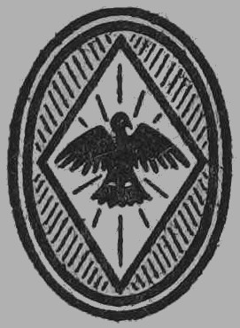

The Sun Virgin
The Love Complex
The Black Hood
The Man in Gray
A Man of the People
(A Play)
The Way of a Man
The Fall of a Nation
The Foolish Virgin
The Victim
The Southerner
The Sins of the Father
The Leopard’s Spots
The Clansman
(The Birth of a Nation)
The Traitor
The One Woman
Comrades
The Root of Evil
The Life Worth Living
by Thomas Dixon

New York
Horace Liveright: 1929
Copyright : 1929 : by
Thomas Dixon
Printed in the United States
Dedicated to
Augusto B. Leguía
President of Peru
with admiration
The Sun Virgin
The brilliant young ruler of Spain, Charles V, had just extended his empire over the half of Europe, and his Conquistadores were planting the flag in Mexico and Darien.
A threatening rabble of ragged seamen stood before the governor’s office in Panama. The news had spread from tavern to tavern that a sailor, left behind with Pizarro, on the Island of Gallo—where the bold adventurer had halted temporarily in his quest for gold and glory—had got a message past Almagro’s keen eye that had reached His Excellency. The knave had concealed the writing in a ball of cotton sent as a specimen of South Sea goods to the governor’s wife.
Now that the ugly news of their suffering was out they would snap their fingers in Almagro’s face and add their voices to the clamor for an end of folly.
The leader of the mob was haranguing his comrades as the friends of Pizarro’s unfortunate expedition approached. Molina, the cavalier, led Father Luque and the Chief Justice, Gaspar Espinosa, into the governor’s house while Almagro stopped within earshot of the crowd.
[Pg 10]
At sight of Almagro the orator grinned. Pizarro’s partner was not a man of impressive appearance. Of small stature, quick and nervous in movement, wiry, weather-beaten and ill-favored at best, he had lost an eye in a fight with the Indians on the first voyage to the South. The deep hollow left below his forehead had given to his face a peculiarly sinister expression. There was about him a suggestion of the grotesque until his bronzed features lighted with animation as he talked. At the end of a speech he had a way of boring a questioner through with his one eye that was especially disquieting—if he spoke to an enemy. Its steady light was now focused on the speaker.
“Remember, Comrades,” the orator shouted, “that we were dragged by Pizarro into the wilderness of the South to die of hunger. The cry of a Kingdom of Gold was a cheat from the start. The golden country was always just ahead. We never saw it. The little yellow metal found was sent back here as molasses to catch more flies. Stand together now and let the governor know the truth—”
Almagro suddenly appeared, lifted his single eye to the orator’s face and a dead silence followed.
The little man spoke with deadly deliberation.
“No whine from cowards in the governor’s ears to-day, swine! Hardship? suffering? danger? Por Dios! Did you go on a pleasure jaunt? You enlisted as a soldier. A soldier’s business is to die. Open your mouth at this hearing—if you dare. I will not answer you. No—God’s light! I’ll spit you with my sword and roast you in hellfire!”
[Pg 11]
Before the orator could recover from the shock of his threat, Almagro swung on his heel and followed his friends into the governor’s house.
A hurried council was held before their entrance into the audience chamber. In spite of rumors of the hostility of the authorities the managers of the expedition were not without hope. Espinosa, the secret backer of the enterprise, had sought the aid of his beautiful sister Teresa. She had won her lover, Alonso de Molina, to the cause. Molina was not only the most popular young cavalier who had come from Spain in the suite of the new governor, Don Pedro de los Rios; he was an intimate friend of His Excellency.
Father Luque seized Almagro’s arm.
“I am going to ask you, Diego, to keep your temper at this hearing and allow our new advocate to do all the talking.”
A smile played around the one eye.
“Not a word from me, Father Luque. I have already spoken.”
The governor lifted his brows in angry surprise at the appearance of the new champion of an expedition he had fully resolved to doom.
“You appear before me, Alonso de Molina,” he grumbled, “in behalf of these madmen who have already exhausted the patience of the king’s servants?”
“I do, Your Excellency,” was the firm reply. “I hold that they have given good evidence on which to base their faith in the enterprise.”
“And what, pray? A few yards of cloth and a [Pg 12]few gold trinkets. A hundred raids here in Darien have each yielded more. Scores of men have been sacrificed on these two crazy voyages to the South, and they are no nearer this myth of a Kingdom of Gold than three years ago when the mad scheme was first launched.”
“Yet, Your Excellency will recall the fact,” Molina soothed, “that our sovereign expressed a command that you should lend every reasonable aid to the expeditions of the South Sea—”
“Every reasonable aid—yes!” the governor continued. “I have done more than reason demands. I will no longer permit the senseless sacrifice of our men to the obstinacy of Pizarro and his associates. The whole scheme is insanity. I have decided. I will issue orders to my trusted officer, Tafur, to sail at once with two ships for the Island of Gallo and bring back every Spaniard whom he shall find still alive.”
Molina attempted to speak and the governor stopped him with an angry gesture.
“No more. An end now to this nonsense!”
Molina bit his lips and then smiled:
“I was only about to ask of Your Excellency permission to accompany Tafur on this voyage?”
Molina bowed to the governor. Rios twisted in his chair and finally answered:
“Provided, Señor, that you agree to return with the ships.”
“I agree,” was the prompt answer.
Almagro seized the young cavalier’s hand and whispered:
[Pg 13]
“I expect to see you leading an army in the new Kingdom, young man!”
“You may, for all of that,” Molina answered tersely with a snap of his strong jaw. He did not like the governor’s humor. The man had not conducted himself as a fair executive; he had acted merely the rôle of a tyrant executing a predetermined decision.
Father Luque wrote a letter to Pizarro which Almagro signed with his cross-mark, advising him to hold his ground until a favorable turn of fortune. They would stay in Panama and with Espinosa work with tireless energy to reverse the decision.
Molina placed the letter in his doublet and sailed with Tafur for the Island of Gallo. The more he heard of Francisco Pizarro the greater became his curiosity to see and talk with the man who had kept Panama in a state of turmoil for more than three years. And all for a dream. No fool could work this miracle.
The man towards whom he sailed was never in all his eventful career in graver need of succor. The island on which he and his men had landed to await supplies proved a barren waste of misery. They found themselves prisoners without hope of relief unless it should come from Panama. Each day was a struggle with starvation. The men sent out on foraging expeditions had begun to conceal what food they found against the final day of a living death. The only food now upon which the commander could depend was found in the scrawny crabs and shellfish picked up on the shores.
[Pg 14]
And it was the rainy season. Storm after storm swept the island and deluged them with rain for days. Their clothes were in tatters and there was nothing out of which they could make more. There was not an animal on the island large enough to furnish a skin to cover their nakedness; the rude huts which they had built had been torn down and scattered to the winds, and the rain beat on their half naked bodies with fury. The spirit of adventure had died long since. They waited in sullen terror, and they watched the sea with feverish eyes for the sight of sails.
Finally they were rewarded.
Tafur’s ships at last crept across the horizon from the North, and a shout of delirium swept the huddled groups on the beach. They ate like ravenous beasts the food set before them.
Molina delivered the letter to Pizarro and studied the man while Ruiz, his faithful pilot, read its message aloud. Tall, lean, straight, sun and wind-tanned, the adventurer stood with taut muscles as he listened to the fated words. By the deep gravity of his countenance the younger man could see that he was facing the supreme hour of life. As the purport of the message dawned on his mind, Molina saw his nostrils dilate, the grim mouth relax into a smile and his deep-set eyes flash with joy. His decision was instantaneous. He would not beg a single coward to stay. But there were a few choice spirits to whom he could appeal. He would hold them with ties of loyal steel and let Tafur take the rest of his mottled crew to hell if he liked. He [Pg 15]called his followers in a final conference before allowing them to embark. Most of them stared with hostile eyes for they already had begun to curse him for their sufferings.
He drew his sword and faced the crowd with an exultant look. Stooping, he traced a line in the sand from east to west, and in clear tones called:
“Soldiers of Spain! On the south side of this line are hunger, nakedness, storms, suffering, and death; on the north side lie ease and pleasure, drink and idleness in Panama. Choose! Choose each man what best becomes a brave Castilian! For my part, I go to the south!”
Pizarro stepped across the line to be immediately followed by Ruiz, Pedro de Candia and eleven others of his men. Molina roused from the spell under which the man’s simple eloquence had held him to find himself among the volunteers. Pizarro grasped his hand and pressed it fiercely:
“I am honored, Señor Alonso de Molina, by this act of approval from a brave spirit. But I cannot allow you to remain on this grim watch. You have influence in Panama. Hence I ask you to return with my good pilot and bring back a ship for our enterprise.”
The young cavalier bowed.
“I have taken service under your banner, Francisco Pizarro, and go where you command.”
Again the two men clasped hands. Turning to the group who had pledged anew their lives to his cause, he called aloud each name:
“Bartholome Ruiz, Cristoval de Peralta, Pedro [Pg 16]de Candia, Domingo de Sonia Luce, Nicolas de Ribera, Francisco de Cuellor, Alonso de Molina, Pedro Alear, Garcia de Jerez, Anton de Carrion, Alonso Briceno, Martin de Paz, and Juan de la Torre, you have this day written your names on the scroll of fame. I salute you my friends, my comrades!”
He grasped each hand in turn and felt repaid for every hour of pain and hunger, in their loyalty.
Tafur angrily faced the group and demanded that they embark in obedience to the commands of their governor. They laughed at his rage.
“Your act,” he snarled, “is sheer madness involving death of every man among you.”
“Perhaps,” Pizarro answered. “We understand. We have chosen death before desertion. Say this to the governor. We demand only that you leave us one of your ships in which to pursue our voyage.”
“God’s light!” shouted Tafur, “I like your impudence. Leave you a ship? Not a shred of a single sail. Stay here and rot in your damned folly if you will. I’ll have no part in it.”
The only concession Pizarro could wring from him was to land a limited supply of the food which he had brought to their rescue.
And then the adventurer with eleven of his followers stood on the shore and watched the ships spread their wings and disappear beyond the northern horizon. A dozen men, with scant food, without clothing, almost unarmed, with no knowledge of the land to which they were bound, without tools, without shelter, without a vessel for transport, took [Pg 17]their place on a lonely island in the ocean—resolved to find and conquer a mighty empire. They might fail; but their failure would be attended by no governor’s rebuke: they would win, or die.
To Pizarro it was the supreme crisis. And he exulted. Had he faltered, compromised, or returned, it would have been the end of his dreams. These dreams had now ceased to be dreams—they had become the living realities of life. There could be no turning back from to-day; every bridge was burnt behind—before lay glory or death.
He immediately decided to abandon the Island of Gallo. Twenty-five leagues to the north lay the little island of Gorgona, but five leagues from the mainland and uninhabited. But it was an advantageous spot. It was high and heavily timbered. The woods abounded in pheasants and the plains with rabbits. With their crossbows the men could get a fair supply of game without loss of powder, and cool streams supplied good water.
By Pizarro’s orders the men constructed a raft on which they managed on a fair day to float with favorable currents to this island. They built rude huts and began the long siege of waiting for Molina’s return. The one horror from which they suffered most was the bite of swarming mosquitoes. So desperate was the pests’ attack that at times it was necessary for the sufferers to bury their bodies completely in the sand until a breeze brought relief.
Through months of desolate waiting, Pizarro’s stout spirit was the inspiration of every follower. Freebooters and adventurers though they were, in [Pg 18]this time of trial they watched the stars, tried once more to find the face of God, and in the night winds to hear His voice. Pizarro encouraged them in religious devotions. Without fail they said their morning prayers, and as the twilight deepened, chanted their hymns to the Virgin. And they celebrated punctually each festival of the Church. Pizarro was using every means at his command and every ounce of his indomitable character to make his enterprise a holy crusade under the banners of Castile.
[Pg 19]
On the arrival at Panama, Ruiz and Molina found Almagro and Father Luque and a council of war was called in the library of their financial backer, Espinosa, the alcalde mayor.
Molina arrived before the hour fixed to report in person to Teresa. She had been a girl of reserve, her high-strung, sensitive nature firmly held in check by a strong mentality, and her lover had called her cold. But to-night he watched her eyes kindle with tenderness and enthusiasm as he told the story of Pizarro and his men. And when he told of crossing the line with the handful who had volunteered, she threw her arms around his neck and kissed his lips with unwonted fervor. Her exquisite body trembled against his own and with passion and tenderness he returned her kiss.
“My knight! My knight of beautiful chivalry!” she breathed.
“Hardly that, sweet,” he smiled. “There’s nothing about Francisco Pizarro to suggest tilting knights. He brings a man back to earth—to things stern and real; to things that mean life and death. But there’s more than gold lust in the hearts of the dozen men with him. They are the conquerors of a new world. They are the builders of empire. [Pg 20]Men may call them mad, but theirs is the madness that makes history.”
“I am proud of you, my Alonso,” she interrupted. She studied a moment, gazing out the window at the open sea. Then, “I’m going back with you. I shall join his army when he marches.”
“You?”
“Yes.”
“Nonsense, child. Your place is in the shelter of your brother’s home until I can take you to our own.”
“I go!” she stated fiercely. “I too feel the stir of a new world—”
“But you’re a woman—the woman of my many dreams. I’ll hear no such madness!”
“I’ve as much right to madness as any man. If good Queen Isabel rode beside Ferdinand into battle, surely I may act as page to my knight in his adventure.”
Molina laughed outright at her talk. The silly idea would pass. He chose to ignore it. He looked at her tenderly.
“And now, my Teresa, I confess. I fought the enterprise of Pizarro because to join him meant a long wait for you. My weakness shames me, but I may breathe it now—”
She watched him through tears and once more embraced him fiercely. He responded, and they stood in trembling ecstasy. And then through her tears she whispered:
“I shall not be separated from you. I’m going.”
Once more he laughed at her whim and released [Pg 21]her as he turned sharply at the clank of Almagro’s sword at the door. Bidding her farewell, he hastened to join Espinosa in welcome to Ruiz, Father Luque and Almagro.
The little man with one eye fairly danced as he walked. He was in high fettle. Francisco Pizarro had done what Almagro had urged him to do. He had hung on. But he had done more. He had made of his act a ceremony that fired the imagination.
“Sometimes,” Almagro confided to Molina, “I suspect and hate that man. But it’s joy to follow Pizarro. He leads!”
The conference fell to work without delay. The case was desperate, but Pizarro’s daring deed had aided it mightily. It was not a question of fighting the governor to the last ditch; the only problem was how to do it. At Father Luque’s suggestion they resolved to go at once to his house and find the official mind. They would fix no formal hearing to be packed with cowards. They would go at once and beard the lion in his den. Pizarro’s spirit reached even across intervening sea.
They were not long in finding the governor’s mind. His Excellency wore it on his sleeve and his sleeve was rolled up for the fight.
“You are wasting your breath,” he fairly shouted as they pressed about him. “I’ve sacrificed the last ship and the last man to Francisco Pizarro’s insane obstinacy. I need these ships and I need these men, and I need them here.”
“But Your Excellency must remember,” Father Luque interrupted, “that you were specifically instructed [Pg 22]by the Crown, in taking office, to aid Pizarro’s enterprise.”
“Not specifically, padre,” Rios corrected, “but merely incidentally. I was specifically instructed to reorganize this colony in harmony with the ideals and principles of Spanish civilization. I was specifically instructed to bring the former governor, Pedrarias, to justice and put an end to his career. The old devil had money and influence enough to win in his trial. How much he paid into the pockets of the judges, I know not, but he was allowed to go free and unscathed. He was not only acquitted at his trial here, but he has so corrupted the council of Panama that they have given him a license to establish a slave market in the city under my very nose, where he is selling at public auction thousands of helpless natives of Nicaragua. To carry out effectively my royal commands I must equip an army, invade Nicaragua, arrest him and put a stop to his infamies. And I’ll not be hampered by madmen’s ambitions.”
“I approve Your Excellency’s intentions towards Pedrarias,” Father Luque suavely replied, “but we must not forget that Francisco Pizarro and his brave followers are soldiers of Castile. They are carrying the banners of Spain and the Cross of Christ. However mad their enterprise, it is for the glory of the Crown.”
Father Luque then paused, drew himself erect and added in solemn tones:
“I warn Your Excellency, Don Pedro de los Rios, that if you dare to leave Pizarro and his men to die [Pg 23]on a lonely isle in the Southern Sea, I’ll see to it that you answer to the Court of Spain for this act!”
“Dare! Dare did you say?” roared the governor.
“I have said it,” was the sober answer.
Rios mopped his brow and sank low in his chair, his face a black mask of helpless rage. Molina, Almagro, and Ruiz pressed him in the name of God and King for a ship of rescue.
He held a stubborn silence and allowed his tormentors to exhaust their arguments before he spoke. He shot a fiery glance at Father Luque.
“The only concession I will make to your clamor,” he growled at last, “is to allow you to equip, at your own expense, a single ship of rescue, with barely hands enough to work her sails. I’ll give positive orders to Francisco Pizarro to report to me in Panama within six months.”
Molina heard the verdict with deep emotion. It was given with ugly reluctance. He drew the group of his associates into a hurried conference outside the governor’s house.
“There is not a moment to be lost, my friends. He may change his mind to-morrow.”
“I agree with you,” Espinosa answered. “The money is ready. We must build a small vessel, equip her with stores and a supply of arms and ammunition and start at the earliest possible moment.”
At last the little ship tugged at her anchor ready for the rescue. Ruiz, her pilot, was in high spirits.
“Our captain will be heartsick for a moment,” he whispered to Molina, “at this poor response to his [Pg 24]challenge of service for the King, but he will find a way to win.”
Ruiz’s sharp voice rang out in command to his sailors to lift the anchor. The chains began to rattle into the locker when Molina saw to his amazement a canoe swing alongside. A package of clothing was flung on deck and in a moment he confronted a slender figure in a dark cloak. Behind the upheld folds the white teeth of Teresa flashed a smile.
“I told you, my Alonso, that I would go!”
The cavalier lifted his hand and Ruiz ordered the anchor dropped.
“And I told you, sweet, that it could not be.”
For half an hour the quarrel raged. At the end Molina lifted Teresa in his arms, lowered her into the canoe and ordered the oarsmen to the landing. At the door of her brother’s house, he opened his arms for their farewell.
The girl’s figure stiffened.
“So, I am your slave to be ordered about at your will. We shall see.”
“Your blessing, sweet; the ship is ready.”
Again he opened his arms, but she only stormed in anger, and turned to enter the house.
“Go if you will,” she snapped, “and the devil go with you. You will not dare speak to me again!”
The red slowly mounted the young cavalier’s face. He turned on his heel and took three quick steps before he felt her arms about his neck.
“Forgive, my Alonso, I love you. I love you more than life. This parting is as death. Promise [Pg 25]that my image only shall be in your heart until we meet again.”
“I promise, my own.”
He pressed her in a long tender embrace, kissed her lips and ran to the water’s edge.
[Pg 26]
Through seven dragging months Pizarro and his dauntless little band had watched and waited for a sail on the northern horizon. Seven months that passed as seven years, and never were brave men put to harder test. In spite of every effort of their leader to fan the flames of faith in God, their hearts at times grew cold with the sickening sense of failure. Could they meet their foes in battle, it had been easy to fight and win or die; but this loneliness of a living death, this fight with invisible foes in far-off Panama was more than human flesh and blood could bear.
Two of his men lay nigh unto death. The captain tended their ills with care. He saved for them the choicest food. He cheered their drooping spirits with stories of his battles, for he knew the signs—their weary souls were sick with waiting.
Seated by their side Pizarro heard the shout of his men on the beach. There was no mistaking that shout. It rang in accents of a joy that was almost delirious.
He leaped to his feet.
“Ships! Ships! Lift up your heads, my comrades, and live!”
The two sinking soldiers smiled for the first time [Pg 27]in dreary weeks, and their captain knew that they would live. They were too feeble to be lifted aboard the little ship and Pizarro left them in charge of friendly Indians from Gallo who had shared his lot on the island. He promised to call for them on his return. They smiled again bravely at the parting:
“Go with God!”
“Go with God!”
When the others had been safely led aboard, Pizarro eagerly asked for the rest of their fleet.
“’Twas all the governor would allow us,” Molina answered.
“It passes belief!” the leader groaned.
“Yet ’tis true,” Ruiz sighed.
“And what of Almagro?”
“The fiery little devil stays to fight the governor for another ship and more men. Rios refused him passage,” Molina promptly answered.
Ruiz’ prophecy proved true. From the moment Pizarro felt the deck of a ship beneath his feet and found himself in command of his dream, he was himself again. His keen, deep eyes swept the shores of the mainland with new hope. He had yet time to explore the country before the six months could expire. He determined to sail southward for Tumbez, the city of the great empire so often described by the Indians. If he could find this rich city, his dreams would become a living fact. He could not be longer denied his rights.
The wind blew a light breeze from the south. They made slow gain, beating steadily against it. Still, the weather was good, they were comfortable, [Pg 28]and they made progress. They passed the Island of Gallo and watched its shore line vanish on the horizon, without regrets. In four days they passed Point Pasado, the limit of former voyages, and Ruiz gayly swung the prow of his little ship into the unknown seas never before plowed by the keel of a European vessel.
The shore line became less steep and rugged. The grounds sloped gently toward the water and spread out into vast plains of sand with streams of water showing patches of rare richness and beauty. Cottages dotted the shores and the smoke of villages could be seen on the hills.
After twenty days the adventurers rounded the point of St. Helena and swept into the beautiful waters of the Gulf of Guayaquil. The shores were studded with villages, and a narrow strip of green bordered the sea and stretched back to the foot of the giant mountain range whose peaks were lost among the stars. They gazed in awe at the mighty dome of Chimborazo and far beyond saw Cotopox belching clouds of smoke and lava through a sea of snow-clad mountains.
Following the direction of their Indian guides they came to anchor near the island of Santa Clara at the entrance of the bay of Tumbez. Early next morning they stood across the bay toward the city whose houses could now be seen.
Halfway across, Pizarro encountered a fleet of balsas carrying warriors to subdue a rebellious island. He invited the chiefs to come on board his ship. The Peruvians were amazed at the sight [Pg 29]of their own people with the strangers. The Indians with Pizarro explained their presence. They had joined the Spaniards on a former voyage and were enthusiastic in praise of the white men as a marvelous race of beings. Pizarro persuaded the chiefs to return to Tumbez, report their arrival and provision the vessel with stores. He also expressed his desire to enter into friendly relations with the people.
The natives crowded the shores and listened with eagerness to the story told by the chiefs. They gazed in wonder and awe on the strange floating house in the bay, and marveled at the white wings folded so snugly on its back.
But the governor of the district heard the news with grave misgivings. Evidently the strangers were of a race of superior beings, if not indeed gods. He hastened to greet them with the most friendly hospitality. Balsas were loaded with bananas, plantains, yucca, corn, sweet potatoes, pineapples, cocoanuts and other rich products. He also sent game and fish, and, what was most marvelous of all, a number of live llamas of which Pizarro had seen rude drawings while serving under Balboa.
Every man on board the ship crowded about the curious animals, which reminded them of diminutive camels. They felt the thick coating of wool and hair which accounted for the specimens of woolen cloth which they had seen on a former voyage.
With the balsas the governor sent as his ambassador and spokesman a Peruvian nobleman wearing [Pg 30]huge ornaments of gold attached to his ears. The rich costume and the deference paid him by his attendants at once marked his high rank.
Pizarro received him with every mark of honor, showed him the ship, its equipment, its guns, sails, stores and crew. The Peruvian, through the native interpreter, asked some questions. Studying Pizarro keenly he inquired:
“From where have you come and why to our shores?”
The Spaniard bowed.
“As vassal of a great prince, the greatest and most powerful in the world, I am come to assert his supremacy, and teach your people the religion of Jesus Christ the only true God.”
The prince listened with respectful attention but made no answer. That any other ruler could be greater than his was, of course, absurd. It would be a waste of time to argue such a point. But if the Spaniards had any god greater than their own, he held himself a philosopher ready to be shown the light.
He accepted Pizarro’s invitation to dine and enjoyed the meal. He praised the Spanish wine and invited Pizarro to visit Tumbez.
The captain presented him with an iron hatchet which he had greatly admired. The use of iron was unknown to the natives.
Pizarro returned the courtesy of the official call by dispatching ashore Alonso de Molina with one of the native interpreters and a coal black negro [Pg 31]servant who had been brought from Panama—one of the first fruits of the Las Casas traffic in slaves from Africa.
The negro, whose name was Congo, carried a present of pigs and chickens, animals as yet unknown in the country.
Molina was immediately surrounded on landing by a mob of curious people. The young women admired his long beard, and he received proposals of marriage on the spot.
They were amazed at the color of Congo. They utterly refused to believe it was his own, and tried to rub it off with their hands.
While they were still chatting and laughing over his black skin, the young rooster which he carried, suddenly crowed. The sound was received by shrieks, followed by a hundred curious questions. And then the crowd suddenly fell back in awe before an exquisite girl arrayed in spotless white who passed close to Molina. Murmurs of deep excitement swept the throng.
“A virgin of the Sun!”
“She will surely die for it!”
“A thousand pities!”
“And ’tis Yma, first of all the dancers of the temple at Quito!”
The girl, her fine eyes sparkling with wonder and anticipation, pressed closer. She looked admiringly at Molina. Then she took the rooster from Congo’s hand, stroked his neck and looked at a native interpreter.
[Pg 32]
“Ask the beautiful white stranger what this queer fowl has said.”
The interpreter repeated the question to Molina. The cavalier studied the vision of beauty for a moment, disturbed by the deep tenderness of her gaze, smiled and answered:
“He says that you are very beautiful.”
The interpreter translated. The girl smiled—a ravishing smile. But a guard carrying a spear seized her arm and led her away.
Not, however, until her appealing eyes had flashed their message; and once more had distressed and thrilled Molina. There was something delightfully disturbing in the way she had searched his face—a sort of joyous worship that made him feel that he had forgotten Teresa in permitting it. But certainly he could not have forbidden it. He was possessed with a curious presentiment that he would see her again, that there was danger in their meeting—but also he trembled with anticipation. For Yma was beautiful.
He turned quickly to the interpreter, who had witnessed the scene in a sort of fascinated terror, and asked:
“Who is she?”
“First of all the dancers at the Temple of the Sun at Quito.”
The cavalier threw a startled look at the white retreating figure. She stopped, lifted her hand and waved to him her farewell.
Molina was escorted to the palace of the curaca [Pg 33]and found him living in state. Sentinels guarded the door and his reception room was decorated with huge vases of pure gold, while the latches and door trimmings were of solid silver. He inspected the fortress of stones and was shown their cathedral building, a stone-walled Temple of the Sun. From a parapet of its wall he caught again the flutter of that white arm and recognized the girl who had dared the weight of tradition to speak to him. She was near, and once more the thought disturbed him delightfully.
He was taken inside the building and was fairly blinded by its decorations, blazing with gold and silver. The sun’s rays fell on them in a way that seemed to double their light. But nowhere did he see Yma.
When Pizarro received the report of his messenger, it seemed so wild he could not fully credit the story.
“Sir Knight,” he said gravely, “I fear the tales of chivalry in which you once reveled have touched your mind.”
He must select a more sober observer. He accordingly commissioned Pedro de Candia to confirm or deny the weird tale.
De Candia was sent ashore dressed in full armor, with sword at his side and arquebus on his shoulder. The natives were further astounded at his armor on which the sun’s rays gleamed with weird effects. They had heard from their chiefs of his wonderful gun. They begged him to let it speak to them.
[Pg 34]
The soldier set up a wooden board for a mark, took aim and fired the musket. The explosion shivered the board and struck terror into all who stood near. The people fled in wild confusion, and many of those nearest the scene fell on their faces. A few drew near to Candia and gazed on him with the awe and reverence of worshipers.
The soldier laughed at their fears, and they showered him with hospitalities. They conducted him through the outer fortress surrounded by triple walls of heavy stone. They led him into the inner shrine of the Temple of the Sun. He saw its walls literally plated with gold and silver. The heavy vessels used by the priest were all in solid, massive gold. To the stunned vision of the soldier they last of all revealed the artificial garden of the Sun God adjoining the Temple. Its shrubbery, fruits, and flowers were all wrought in pure gold and silver.
Candia’s report more than confirmed Molina’s. It threw the adventurers into a state of mad excitement. They gathered about their leader with flushed faces.
Pizarro spoke in the awed tones of a religious enthusiast.
“Friends and comrades: Our eyes have now seen the glory of which we have dreamed. Others can no longer call us madmen. Thousands will flock to our banners. We dare not lift a hand in conquest of this great Kingdom to-day, but God has crowned our sufferings and trials with success. The natives have received us as demigods and heaven [Pg 35]points the way to our sure triumph. We will return with a mighty fleet and army.”
A shout rent the air. The Peruvians in their balsas swarming about the ship mistook the cries for a farewell cheer. They lifted their hands and called a joyous answer. Little could their simple minds know the real meaning of the yell from the little ship’s deck.
Pizarro drew Molina aside.
“Señor Alonso de Molina,” he began in grave tones, “you shall be our first ambassador to the court of Peru.”
The young cavalier flushed and bowed.
“I send you with this full rank. You know, of course, that our army is not yet recruited to make good your credentials. You must go to the court of their monarch as a scout and spy. Your life will be in your own hands and God’s.”
“I understand,” was the firm response.
“Before my return I shall expect you to explore the Kingdom, find the number of its people, the power and resources of its ruler and the strength of its army. I wish a map of the roads and the location of its forts. Report to me on the arrival of our fleet.”
The cavalier’s figure stiffened.
“I’ll do my best—”
In a few minutes, he stood beside the rail with a native interpreter and Congo, his servant, ready to depart on his important and dangerous mission. There was no need to launch a boat to set him ashore. A fleet of balsas again surrounded the [Pg 36]ship bringing, with best wishes from the governor, a fresh supply of food for their voyage. Pizarro delivered his final message to the people.
He joyously promised them a speedy return!
[Pg 37]
The governor of Tumbez received Molina with royal honors, insisting on giving a festival of days to celebrate his coming. The cavalier declined with reluctance.
“I am instructed, Your Excellency, to report at once to your sovereign as the accredited ambassador of Spain.”
The curaca gave swift orders to his attendants, and within half an hour, two splendid litters draped in scarlet cloth, trimmed in gold, drew up before the door. Four stalwart men held the bars of each sedan.
The governor led Molina to his seat and ordered his baggage placed in a plain litter to follow the two of gorgeous draperies.
Congo hung back and grinned his embarrassment at the sight of his chair of state. An attendant led him to the seat. He refused to get in.
Molina laughed.
“Take your seat, Congo,” the master ordered. “It is the custom of the country.”
In spite of urging from all sides the negro still balked. Amid shouts of friendliness they caught and lifted him to his seat in the royal conveyance.
As the cortège of bearers and guards were about [Pg 38]to start on the journey to the court at Quito, a barefooted, barelegged athlete dashed up to the governor and whispered a message. The curaca waved to a group of native soldiers lounging across the way and in a few minutes a litter veiled heavily in deep purple drew up behind the baggage train.
Molina inquired the meaning of the message and the reason for the veil which concealed his fellow passenger.
The governor was loath to reply but in answer to the inquiry of the interpreter quietly answered:
“A prisoner under sentence of death goes with your train to the capital for execution.”
Molina glanced at Congo. He was leaning back in state, and had failed to catch the ominous announcement. But, seeing the guards of his litter throw a startled look at the veiled seat, he called the interpreter and asked the meaning of the stir. When the solemn words were repeated he rolled his eyes toward the purple draperies, leaped from his seat and ran for his life.
The guards at Molina’s command rushed to catch him. The black man ran in leaps and bounds. With each frantic leap he breathed a prayer. He reached the water’s edge and was about to dive when the guard caught him. Four men dragged him back to his seat.
Molina confronted him with rage.
“What ails you, fool?”
“My seat’s too high,” was the trembling answer. “They’re carrying me to my funeral!”
[Pg 39]
“Nonsense,” his master reassured. “You’ve nothing to do with their laws. We live under the laws of Spain.”
Congo’s fear allayed, the procession started forward at a swift pace. Outside the city they struck the great paved highway of the empire leading northward.
At nightfall they stopped at a rest house and ate a sumptuous meal served with choice wines. The attendants wore the royal ensign which denoted their service of the monarch. The rest house was not a tavern run for gain, but a contribution of the crown to the convenience and comfort of the traveling public.
The cavalier marveled at its perfect appointments. His interpreter showed him the royal granaries adjoining the house—full to overflowing, against a day of need, with bread for the people. He tried in vain to learn the character of the crime committed by the convict in their train being carried on the last stretch of the journey of life. But all lips were dumb.
The only answer given was plainly a formula repeated many times before:
“Only the Lord of the Sun in his palace at Quito can explain.”
Arrived at Quito, the young ambassador was received with acclaim. The knowledge of his coming had been proclaimed long before. Molina understood now the meaning of the swift athletes who passed his train from time to time. They [Pg 40]were the royal mail carriers. He had seen them meet on the highway, whisper a message and dart away on the smooth road in opposite directions. A runner was required to travel at high speed for five hundred yards and his message was taken and relayed to the next man. They covered in this way three hundred miles in a day.
Passing over the stone-paved streets of a large city, through massed thousands of well-dressed excited people, the litters were borne into the spacious courtyard of the royal palace. Molina gazed with wonder on the stone walls. Many of the bowlders used in its structure were ten feet long and four feet high, and undoubtedly weighed many tons.
The monarch’s chamberlain, arrayed in a robe of gorgeous blue, clasped with gold fastenings, bade Molina welcome in the name of his master and conducted him to an apartment a single flight above ground.
The Spaniard studied the solid masonry of the walls of his apartment with increasing interest. They had been ground smooth on their inner surfaces. The bowlders were of unequal size and shape and yet fitted perfectly without the use of mortar. The finest point of his knife could not find a crevice in their seams. Narrow windows near the ceiling admitted light by day, and huge tapers of tallow stood sentinels for the night.
To his amazement he heard the splash of water through a doorway, and entered to find a bathroom with a spacious pool fed by a sparkling stream. [Pg 41]Certainly these people were centuries advanced in the development of life when compared to the semi-savage Indians of Darien and Panama. A stone seat circled the room on which were laid towels of cotton cloth. On the ledge of stone through which the stream of water poured into the pool were placed goblets of solid gold on which were wrought with skill the heads of jaguars. In one corner sat a huge flagon of silver filled with a choice fermented drink and beside it stood two cups.
The Spaniard tasted the liquor and his eyes sparkled at the fine mellow quality of the drink. It sharpened his wits, and beyond doubt he was going to need the talents of a diplomat of the first rank.
The chamberlain entered after an hour with a message from his master.
“Our Lord of the Sun regrets that you arrived too late to dine with him in state this evening and begs you to accept such service in your apartment as his handmaidens can provide.”
Molina bowed his thanks. The nobleman waved his hand and a procession of fair serving maids entered bearing cushions, cloths, steaming dishes of llama meat, potatoes, fruits and wines. The food was spread on a low table of wooden sections placed in the middle of the room. A huge cushion was placed beside the board for Molina. The interpreter, being a native, was not supposed to sit at the ambassador’s table.
When every want of his guest had been provided for, the chamberlain bowed and said:
[Pg 42]
“When you have refreshed yourself, our lord will receive you in the throne room. I will return within the hour.”
In vain Molina begged to know the name of the unfortunate prisoner who had accompanied his train. Again he heard the formal answer:
“Only the Lord of the Sun may explain.”
The Spaniard determined to ask the monarch. The incident was disquieting. The chamberlain was careful, however, to satisfy his natural curiosity to know the name of the monarch.
“You are now in the palace of our Lord the Inca, Atahualpa, supreme ruler of the northern half of the Kingdom of the Four Corners of the World. His brother Huascar rules at Cuzco, the capital of the South. For the first time in history there are two Incas. This by the will of their great father Huyna Capac, who so loved the beautiful mother of our Lord of the Sun, that their second son, Atahualpa, was made equal in power to the lawful heir Huascar.”
Molina listened carefully. Two Incas! Two Incas might breed jealousy. And jealousy might breed—The young cavalier’s heart beat exultantly.
An hour later the chamberlain entered with a group of noblemen and led Molina into the throne room. The magnificent hall, lighted by a thousand candles hanging in clusters from the beams of the wide-set roof, presented a scene of splendor. The walls were covered with plates of gold. The great beams that supported the roof were likewise sheathed in beaten gold.
[Pg 43]
At the end of the hall on a throne of gold, set with pearls and emeralds, was the Inca, surrounded by his wives. His mother, the dowager queen, stood beside him. From the wall behind the throne, projecting into the room above the head of the ruler, was an immense plate of gold, representing the sun, a human face from which radiated rays in all directions. These rays were heavily studded with hundreds of precious stones. On the forehead of the face was set a huge emerald whose deep green light gave to it an expression of sinister power.
The Inca was a man of commanding presence in the full strength of an athletic youth, thirty years of age. His lips were full, his features regular, his nose long and finely shaped. The eyes possessed the slant of the Orient and looked out fearlessly. There was no sign of beard on his smooth face. Centuries of plucking had left the Peruvian race without a beard. Within no one’s memory had beard on the human face been known.
A cloak of plaited gold hung loosely on his shoulders, its collar trimmed in jewels, rising three inches above his shoulders. His head was covered with a cone-shaped crown of gold tipped with scarlet feathers. Pendants of emeralds hung from his ears to his shoulders. Beneath the cone-shaped crown, projected to the eyebrows the scarlet borla fringe, the supreme emblem of his power, symbol of both human and divine attributes. He was both sovereign and God to his people. In the center of the crown blazed the sign of the sun, and on his breast he wore the same emblem which had been [Pg 44]wrought in the form of his own features by the royal goldsmith on the occasion of his coronation. In his right hand he held a jeweled scepter.
He waved his scepter and the vast crowd of splendidly dressed nobles, accompanied by their wives and daughters, fell on their faces and rose with a low murmur of applause.
The chamberlain conducted the Spaniard to the foot of the throne, and Atahualpa rose with simple dignity and presented his visitor to his stately mother, a woman of rare beauty, at this time about forty-five years of age. His queen he presented with due formality and waved an introduction to his other wives.
The Inca’s mother, with a gracious smile, placed a jewel-set chair beside the throne and the Inca seated Molina and then resumed his own place on the throne.
Again the ruler lifted his scepter and the musicians concealed in the foliage of artificial trees wrought in gold and silver began to render an enchanting call to dance. The great curtains at the end of the hall parted, and a hundred torch bearers entered and pressed the crowd back against the walls, clearing the space before the throne for the dancers.
At the shrill call of a trumpet five hundred dancing girls swept gracefully into the cleared space led by an exquisite creature, whom Molina instantly recognized as she bowed before the Inca. The Sun Virgin Yma who had spoken to him in Tumbez! [Pg 45]A frown clouded his brow for a moment at an ugly thought. He dismissed it as foolish. She could have preceded his train, of course, in a swifter one.
Her arms and legs were bare; the whole body above the waistline bare except for a delicate brassiere of meshed gold that covered her breasts. Around her waist was wound a scarlet girdle to which was bound a close-fitting loin cloth. From a jewel-set leather belt in which the girdle ended hung strings of pearls that formed a skirt falling to the upper calves of the legs.
The five hundred Virgins of the Sun whose dance she led were all dressed in similar fashion except that the brassieres were of meshed silver and the skirts of tiny linked chains of silver.
Through a maze of sensuous rhythmic motion, Yma led her shining sisters, pausing at the end of each set to bow before the Inca.
Never in Europe had the Spaniard witnessed a scene of such dazzling beauty. No monarch of Spain ever had witnessed such magnificence. And no other court could rival that of Spain.
But Molina watched the spectacle with a sense of foreboding. This Inca seemed a mighty monarch. And he could but hope that his commander would not sail until the expeditionary fleet was an armada and the expeditionary army invincible.
But Molina’s fears were forgotten in his admiration for Yma. With every approach to the throne her lustrous eyes sought his in a strange yearning appeal that moved him profoundly. There could [Pg 46]be no mistaking her deep interest. That, he had seen at a glance on their meeting at Tumbez. Then he had attributed it only to her curiosity at seeing for the first time a full-bearded white man. His unusually fair complexion in startling contrast with the coal black of his servant had, perhaps, added to the fascination. But now he saw something else.
Her gleaming teeth, her raven hair and her lithe, exquisite body held him spellbound. There was something about her that called him. Had he seen her eyes dimmed by tears as she swept close in the last dance? He was sure of this, yet could find no reason for tears in such triumphant revelry.
The dance ended with a crash of trumpets and the five hundred Virgins of the Sun, with lingering glances at the stranger seated beside their sovereign, slowly marched through the great curtains and disappeared in the depths of the adjoining temple.
Yma alone remained. And Molina saw that she was terrified. She stood before the Inca trembling, her eyes streaming with tears, her beautiful arms outstretched in pleading. But the monarch’s face was hard. Her tears, for him, had no meaning. With a low moan she sank to her knees and buried her face in abject pleading for mercy.
What, Molina wondered, had she done?
The Inca waved to his guards. Two stalwarts lifted the prostrate figure and tenderly supported her while the ruler spoke a brief sentence that sent a shiver through the crowd of nobles.
[Pg 47]
Molina gripped the arm of his interpreter fiercely:
“Quick! what is it? what did he say?”
“That Yma, first of all the Virgins of the Sun, must die. The priests of the temple will throw her into a vault and wall her up alive.”
“In God’s name—why?”
“She has broken her vows. She has spoken to a man without the permission of the Inca. The Sun Virgins are the nominal brides of the monarch.”
Molina recalled the guard who had led her away at Tumbez. He remembered, with racing pulses, his meeting with her. She was the mystery behind the veiled litter.
“God! And they mocked her death by commanding her to lead this dance?” he sternly asked.
“No. She begged the privilege of dancing for you. She outdid herself to-night—”
Molina’s decision was instantaneous. He sprang from his seat, seized the girl and led the trembling figure before the Inca.
The monarch’s brow clouded with quick anger. He lifted his scepter and turned toward his soldiers.
But the dowager queen bent close to her son.
“Wait,” she whispered. “The girl loves the stranger. Use her. We can learn his secrets and purposes through her.”
The scepter was lowered slowly. Atahualpa turned toward the Spaniard, his royal visage stern.
“Why have you interfered?” he asked.
“I beg of Your Majesty the life of this unhappy [Pg 48]girl. In the excitement that swept the people of Tumbez at sight of our ship, and of the strange, bearded beings who sailed it, we were called messengers from heaven. They thought us more than men. They called us god-men. Surely, she might be forgiven that she forgot her vow in such an excited hour. Will Your Majesty ask her if she thought me human?”
The Inca’s eyes narrowed. He spoke to the terror-stricken girl.
Her answer was an awed whisper, half addressed to Molina and half spoken to her Lord of the Sun.
“I believed he was a god. I believe so now. I am dedicated to the service of the gods. I had no thought of sin.”
A new advocate suddenly appeared on the scene. A slender youth wearing the insignia of the highest rank rushed through the crowd of nobles and dared to seize the Inca in his pleading.
“Atahualpa, glorious brother, you will not doom her to die. I love her. Always I’ve loved her. If she dies, you kill me also!”
The Inca threw the youth roughly from him. He rebuked him sternly.
“Silence, boy! How dare you press me! Back to your guard before I send you to a dungeon.”
But Toparca remained. Once more he pleaded.
“Kill! Kill me if you like,” he begged, “but spare her—”
The Inca beckoned to a guard, who led the trembling youth through the crowd of excited, murmuring [Pg 49]courtiers. Yma’s eyes followed Toparca with a look of tender pity.
The dowager queen mother frowned. The boy’s unhappy love for the Sun Virgin so suddenly revealed had again roused the wrath of the ruler. But she pressed her scheme.
“Use her!” she said, and her low whisper was tense. “Release her from her vows and give her to the stranger. Allot to him a house. With four maidens to assist, let her preside. The end is sure. We will cure the lovesickness of Toparca and Yma will deliver this god-man into our hands. We must know the real meaning of his presence among us.”
The Inca smiled, and nodded his assent.
He turned to Molina and spoke in tones of genuine good will.
“I accept your plea for the girl and extend to you the hospitality of my kingdom. She is yours. She will select a retinue of servants and minister to your comfort!”
Yma prostrated herself before the Inca, murmuring her worshipful thanks. She rose with a joyous laugh and gazed long and tenderly at Molina.
“My glorious god-man,” she cried through tears of joy, “I worship you. My life is yours.”
The young cavalier started. He thought of Teresa. There was no mistaking the look in the girl’s eyes. She had made no effort to conceal it. The tones in which she laid her life at his feet left no doubt of her meaning.
There was no help for it. He had saved her. Now he must play the game and wait—and he trembled [Pg 50]at thought of the future; trembled with a nameless dread—and anticipation.
With a graceful bow to the ruler he turned to the smiling girl and followed her to his new home.
[Pg 51]
Francisco Pizarro again found himself riding at anchor in the harbor of Panama. The people had long since given him up as lost, sure that their worst fears had been realized. They believed he had perished at sea in the cockle-shell they called a ship, had died of starvation or had been killed by savage natives.
But he had returned, and with the stride and airs of a conqueror. He bore live specimens of the Peruvian sheep and beasts of burden called llamas. He displayed pieces of finely woven woolen cloth, some of it of rarely beautiful colors. He had gold and silver vessels of exquisite workmanship and he told a story of the splendors of Tumbez that thrilled his hearers. Pedro de Candia was the eyewitness who confirmed his tale.
The alcalde mayor gave a banquet to Pizarro and his associates—Luque, Almagro, and Candia.
The only frown at the banquet table was on Teresa’s face. She heard their stories with suppressed excitement and increasing pain. She broke her silence at last in bitter reproaches to Pizarro.
“And you, my brave Captain, whose praises I have sung and whose battles I have fought in Panama, repay me by leaving my lover alone to [Pg 52]perish among savages. I cannot forgive you!”
A moment’s dead silence followed the tearful outbreak. Pizarro rose, crossed to her chair, and gently laid his big hand on the mass of dark brown hair.
“Have no fear, my Teresa. You sent me a brave knight. No braver, no fairer, no wiser has come out of Spain. I sent him on a dangerous and important mission because he was the only man of our company fitted for the delicate task. He has personality. He has tact. He is handsome, courtly, gracious, skillful. And he makes friends.”
“Always among the women!”
The whole company roared with laughter in which Pizarro joined.
“I’ll stake my life, dear lady, on his undying loyalty to you. His last words to me were a message of love.”
In spite of his assurance, it was plain to see she had been little comforted.
“And when do you return?” she asked in a sad small voice.
“When it shall please God to give us ships and men for our great undertaking.”
“And we’ll get them now, never fear!” little Almagro exploded.
But Teresa listened and watched with grave misgivings. She knew that her brother had been disturbed deeply by rumors from the governor’s house.
Father Luque arranged the hearing at noon two days later. Rios had refused curtly to appoint an earlier date.
[Pg 53]
Pizarro told the story of his sufferings during the eighteen months he and his band had waited and of their triumphant landing at Tumbez, and asked the governor for a license to build a fleet and recruit an adequate expedition for the conquest.
“And from whom do you expect the money necessary for such an undertaking?” Rios asked brusquely.
Espinosa, the alcalde mayor, lifted his brows.
“I will be responsible, Your Excellency, for the funds needed.”
“And whence will you draw recruits for your army of conquest?” the governor asked in a tone so hostile, Pizarro held his answer for a moment until his passion subsided. Almagro squirmed in a frantic desire to shout his resentment.
“Five thousand men will answer my call in Darien, Panama, and Nicaragua,” Pizarro answered quietly.
“So, you have the effrontery,” the governor growled, “to ask that I place this great army of men and a fleet of ships at your command while I remain in Panama with a few ragamuffins to sustain my authority? I will do nothing of the sort! I will not build a rival state at the expense of my own. To what mad heights will your ambition soar, Francisco Pizarro? Your demands are even a greater madness than the silly dreams you have told for the past five years on which you have squandered hundreds of lives. I will permit the sacrifice of no more men for your cheap display of a few gold and silver toys and Indian sheep!”
[Pg 54]
The thing behind the governor’s frown was out at last. He was jealous of Pizarro, and no argument could move him from his hostile decision.
Father Luque rose to add his voice to the plea of his associates, but Pizarro seized him and scowled.
“Not another word. We will not grovel before such petty jealousy.”
They left the governor immediately.
At the council which followed Almagro angrily proposed to build their ships and sail without the governor’s approval or aid.
But Espinosa shook his head.
“We dare not move without a charter from the government, gentlemen.”
“Has a free man no longer the right to breathe without a license?” the fiery little adventurer scolded.
“He has not!” the chief justice promptly answered. “More and more our governments are regulating every detail of life. The concentration of power in the hands of ruling kings has brought us to this state. This man’s word, conceived in the meanest spirit of jealousy and low ambition, is still the law in Panama. We must face the facts.”
“And let the toil, sacrifice, and faith of years go for naught?” Almagro flared. “Shall we stand idle while others leap in and seize our prize? Por las entrañas de Dios, I’ll strangle the upstart first!”
Father Luque lifted his hand in disapproval, both of the blasphemy and the threat of murder.
“There’s a way, gentlemen, and we must take it.”
He spoke with the conviction of a man who had [Pg 55]carefully weighed his plan. His associates drew close and waited in silence until he continued.
“Our remedy will mean delay. But I have the firm faith that in it we will find a sure triumph. We are soldiers of Spain. We are working for the Crown. We are extending the boundaries of the Empire of our Sovereign, Charles V. Our glory will be his; our success his. He is more interested than any man on earth. We’ll take our cause to the Emperor and ask of him a royal charter.”
Almagro leaped to his feet and shouted:
“And make the pig in his Panama sty eat dirt.”
The approval was unanimous. It was the one move which Rios would least suspect and in his stubborn pride was sure to ignore as another dream of fools.
The plan was discussed in detail. The man on whom the choice of ambassador to the Court of Charles fell at once—Father Luque—could not leave his duties at Panama. Espinosa had been chief justice under Pedrarias and his many enemies at the court rendered his selection unwise.
Pizarro and Almagro were not only unlettered soldiers, but it was known of all men that both were born out of wedlock and had lived the lives of nameless waifs in Spain. Pizarro had been abandoned in Truxillo by the humble peasant girl who gave him birth.
While a tiny boy he had earned a scant living by tending pigs; had slept with them and had saved himself from starvation more than once by nursing their friendly mother. He had never been to court [Pg 56]even as a kitchen scullion; he had never looked on royalty.
Almagro was small of stature, ugly in features, and much disfigured by the loss of his eye. Besides, his quick temper and easily roused passions made his selection a thing beyond discussion.
Father Luque suggested that they appoint the Licentiate Corroll, a reputable lawyer about to return to Spain on public business.
Almagro flung himself from his chair with a snort of disapproval.
“God’s wounds, no!” he shouted. “He’ll forget us in his own business. One of us must go. One whose heart and soul is in the work. I’ve quarreled with Francisco Pizarro as I shall again. But I like his ways. No court can frighten him. I’ve seen him in close quarters. No man can tell the king the story of our adventures as well as he who led us. To hell with his lack of learning and his sad birth! He’s a man for all that, a strong man, and a leader. I ask Francisco Pizarro to go for us to the court of the Emperor!”
The one eye flashed its light into his comrade’s face and waited for the answer. But Pizarro was loath to accept the grave responsibility.
“Frankly, my friends,” he concluded his objections, “I’d rather lead a dozen expeditions into the wilderness against wild beasts and savages, but—” He paused and drew his fine figure erect—“if you think that I am the man to entrust with this mission, I will go.”
Father Luque was doubtful, yet no better choice [Pg 57]seemed possible and he acquiesced. He placed a hand on the shoulder of Pizarro, another on Almagro’s shaggy head and earnestly prayed:
“God grant, my children, that one of you may never defraud the other of his blessing!”
Pizarro solemnly promised to consult the interests of his partners equally with his own.
It was not until early in the spring that he sailed—the spring of 1528. He took with him Pedro de Candia as a living witness, two natives of Peru to train as interpreters, three live llamas, and specimens of fine cloth, and vases of gold and silver.
He arrived early in the summer at Seville, the port from which he had sailed for the New World more than twenty years before, an obscure common soldier.
The people heard him with deep interest and excitement. The news of his arrival and mission to the court spread over the city with remarkable swiftness. His dreams were coming true.
On the day he was packing for the journey to the court a loud knock on his door accompanied by the terror-stricken voice of the landlord announced the arrival of a servant of the king. Pizarro smiled at what he thought was the quick response of an eager Crown and opened the door with pride.
He was dumfounded to discover that the servant of the king was a common bailiff charged with his arrest on a warrant sworn out by a certain lawyer, Encisco, who had come to grief at Darien during [Pg 58]Pizarro’s first expedition with Ojeda. Encisco accused the bold adventurer of ruining him by having Balboa ship him back to Spain. Pizarro saw the fine hand of Rios in this warrant.
Instead of an audience with His Majesty, Charles V, the ambassador found himself that night talking from the inside of an iron cage to the turnkey of a jail. He promptly sent Pedro de Candia with a message to the Emperor.
The moment Charles heard, he dispatched a courier with orders for Pizarro’s release and an invitation to present himself immediately.
From the depths of despair the prisoner was lifted to the heights. Of the royal courier the soldier of fortune asked eagerly news of the sovereign, his character, and of his achievements and triumphs. Buried in the depths of the Isthmus of Panama and the trackless seas that wash its shores, he had heard little of Europe. To him the Emperor was merely a name to be spoken with awe. Now he must appear before this august presence with his future in his hands. On the turn of a little finger for him rested the issues of life or death.
The courier was deeply impressed by the tall, bronzed man from the wilderness, and described his royal master with enthusiasm as they journeyed to Toledo.
“Know this, Señor, that His Majesty is yet a very young man. Although his fame fills the world he is but twenty-eight years of age, a man of unusual strength of character, born the heir of four great royal houses. He wears the crowns of Austria, [Pg 59]the Netherlands, Aragon and Castile, and he’s just been called to be the ruler of Germany. At the age of fifteen the crown of Charlemagne was placed on his head at Aix-la-Chapelle. He owns the kingdoms of Naples and the two Sicilies and is about to depart for one of his palaces in Italy.
“He has just defeated Francis I, King of France, and taken him prisoner. He is too great for petty thoughts and petty grudges. Win his favor and you may have what you wish for the asking.”
Pizarro lifted his head with elation. He thought of Rios with contempt and threw off fear. He could talk to a great man in a language that he could understand. He must keep his poise amid the splendors of the Emperor’s court and say the right word.
As the cavalcade approached Toledo across the desolate stretch of parched sands, the proud old city, set on its seven hills, loomed suddenly in grandeur beyond the yellow waters of the Tagus. The rising sun touched with splendor the towers of the cathedral and the ramparts of the royal Alcazar in which Charles held his court. He had rebuilt the old palace-fortress in a style befitting his new power. Somewhere, beneath the pile of the cathedral, moved the archbishop of Toledo, supreme ruler of the Church in Spain. His authority was second only to that of the Emperor, and his hand had been felt more than once in the affairs of the New World. A word that might offend the prelate would be a fatal mistake.
At the Alcantara bridge Pizarro paused to await the arrival of Candia in charge of his precious [Pg 60]llamas, and the treasures of Peru. On the high hill above the bridgehead loomed the great rectangular fortified convent and beyond it the towers of the city. Throngs were passing over the highway, across the bridge. Vast clouds of dust filled the skies from the plains. The capital of Spain at this time boasted of a population of two hundred thousand people.
Something in the contagious excitement of the throngs pushing, shoving, jostling, shouting as they passed over the bridge, caught the heart of the adventurer from the outlands. For more than twenty years he had lived in the far wilderness. The crowded life of the city that loomed above frightened him.
A moment of panic seized him. What if he lost his head before the august presence of the young Emperor, whose fame had reached the limits of the earth? The results would be tragic. It would mean the loss of all his years of toil. It would mean the end of his hopes. Encisco and Rios would secure his rearrest. A man in jail in Spain at his age of fifty-five would be doomed! The records of court were vain imaginings. Once there, prisoners languished in dungeons and died without trial, their very existence forgotten. Luckily for him the fame of Cortez’ conquest of Mexico had stirred Spain, and the Emperor was interested in the possibilities of Peru.
In spite of his iron will Pizarro’s panic grew at these thoughts until a shout from Pedro de Candia reminded him that he was the leader of a great [Pg 61]cause. On his shoulders rested the responsibility of success or failure. He lifted his stalwart figure and rode across the Alcantara bridge with as high head as the royal courier who accompanied him.
They threaded the narrow, winding, gloomy streets and reached the triangular plaza of Zocodoro without mishap. And here the ambassador was grateful for the guidance of the courier. No stranger could have found his way through the labyrinth of crooked streets without a guide.
Pizarro protested at stopping in the tavern beside the square. He wished to pass straight on to the Alcazar and see His Majesty without delay.
The courier laughed.
“It will yet be hours, Señor, before His Majesty rises. On awakening about eight, it is his habit to eat in bed a royal meal of spiced chicken and beer, turn over and sleep again for several hours. It would be unwise to see him until he has had his mid-day repast, a more leisurely and substantial feast. Woe betide the man who interrupts a meal of Charles V. He is not only the greatest potentate of the world—he is the greatest eater of all time.”
It was past two o’clock when Pizarro finally stood before the audience chamber of the Emperor.
The courier gave him friendly advice.
“Show His Majesty your llamas and woolen cloth first. He is keenly interested in developing his textiles. Then your golden vessels. He needs gold. The Cortes will grant him no money for foreign wars. He has just beaten the King of France, but a new war looms. The Pope will soon crown [Pg 62]him Emperor of Italy, but he must defend his title. The Sultan of Turkey is mobilizing another army to march on Vienna and he must defend his crown of Austria.”
Pizarro murmured his thanks and suddenly found himself before the Emperor and his gracious young queen, Isabella of Portugal—whom he had married but two years before—the robed Archbishop of Toledo, and a throng of courtiers.
He trembled for an instant, but recovered his poise in the details of exhibiting the live llamas, at whose odd shape the court was greatly amused. Charles felt the quality of their wool with keen interest. The fine fabrics of cloth woven from their clip he studied carefully, and whispered to the queen:
“There may be more in this than all the gold of the Indies.”
She nodded her approval.
The specimens of gold and silver manufacture he examined carefully, with enthusiastic praise for their workmanship and solid weight.
“And now, Francisco Pizarro, the court will hear your plea. Speak fully and openly.”
Pizarro approached the royal group with firm step and told his story in the plain crisp words of a soldier, a man who had played the leading rôle in the drama which he unfolded. He made no attempt at eloquence, but felt from the moment he began that his personality had made an appeal to the Emperor. His life and future were in his own hands. He realized at moments a strangling consciousness [Pg 63]of the fact, and breathed a voiceless prayer for the right words.
He told of his strange adventures on land and sea, his long, cruel training in Darien and Panama, his struggles in forests, his shipwrecks, his battles with savages, his comrades dropping by his side, and yet ever pressing on, the banners of Spain upheld. With resistless pathos he told of the sufferings on the Islands of Gallo and Gorgona, the hunger, the loneliness of long months, the desertion by his colonial governor, the deathless determination of his handful of followers to extend the Empire or die, and of Molina, now plunged in the vast unknown of Peru.
When at length he saw the young Emperor’s eyes swimming in tears, he bowed and withdrew into the crowd.
His Majesty rose, smiled, called Pizarro to his side and seized his hand:
“As a true soldier of Spain you have honored our banners with your faith and loyalty. I will commend your cause to the Council of the Indies. Your petition for a royal charter is granted. In my absence in Italy the Council will work out its details. I shall expect great deeds of you, Francisco Pizarro!”
The friendly courier gripped the adventurer’s hand as he passed from the royal presence.
“A great speech, Señor! I couldn’t have done better myself.”
Pizarro’s dark face lighted with a puzzled smile.
“But this Council of the Indies!”
[Pg 64]
The courier shook his head in a gesture of pity.
“God help you, once in their hands. A bunch of snails. A pity His Majesty is leaving for Italy. You’re in for a siege. The Queen is your hope.”
Pizarro hurried to his room at the tavern with a proud sense of triumph. And back of it forebodings of a struggle with the Council. As the sun set the adventurer looked out at the glowing, shimmering splendor of royal Toledo, absorbed in dreams of the far land of mystery, of the gallant young cavalier somewhere in its vast and bizarre expanse, and of Teresa, who yearned for her lover.
And his eyes were wet with glad tears.
[Pg 65]
Molina found himself in a house whose appointments were amazing. Built of cement, high on the side of a cliff, its comforts exceeded anything he had known in the new world. Its walls were dry, the furnishings adequate for every want, and the view from the terrace on which his room opened, one of entrancing beauty. Below lay the city of Quito, its huge palaces and fortresses of stone flashing in the tropic sun, and beyond in the distance the snowy peaks of the Andes.
The only thing he missed was the use of glass. The windows were closed by wooden shutters or were merely open spaces through which light and ventilation passed. The even temperature of the altitude at which the city was built made this but a slight inconvenience.
The beds were of bamboo slat that yielded as a spring. A heavy mattress of wool was covered by clean cotton sheets finely spun and woven. The best wool blankets were on every bed. The table service—plates, cups, knives, bowls and pitchers—was of gold. The food served under Yma’s watchful eye was deliciously cooked, the bread of corn meal most palatable and satisfying. The llama mutton was done to please the palate of a king. Large, [Pg 66]white potatoes roasted through and through were dry and mealy and to him a thing unseen or tasted before on any table in the outside world.
A golden bowl was filled with bananas, pineapples, plums, cocoanuts and mangoes.
The swift feet of voiceless serving maids scarcely made a sound as they moved through the halls and rooms at their tasks.
As the shadows of evening fell, Yma led her new master into the court about which the house was built. A fountain splashed in the center. In huge earthen pots dazzling flowers bloomed and an orchestra of soft-stringed instruments made weird music.
The table for the evening meal was set beside the fountain. Yma took her place at its head and presided with simple grace. Her orders were silently and swiftly obeyed. She watched Molina with keen eyes, anticipating his every want. And when he sighed with satisfaction at the close, she smiled and asked through his interpreter:
“My Lord is pleased?”
“Delighted, dear Virgin of the Sun. You work wonders.”
“And I have another—”
She waved her bare arm and from a room opening on the court, swept a chorus of dancing girls who circled the table in number after number of graceful dances. Their lithe young bodies seemed the incarnation of the soft strains of the hidden music.
The Sun Virgin watched the effect on the Spaniard [Pg 67]with an interest that was half pain and half joy. The girls were dressed exactly as the chorus of five hundred at his royal reception, except that the skirt of silver spangles was a little shorter and the dancers had been selected with more care, each one a marvel of sensuous beauty. Each one a smiling challenge to the man before whom they swept.
But there was no look of jealousy in Yma’s lustrous eyes. To her simple mind she was celebrating a festival of love. Her Lord was worthy of the best the Sun God could give. She had selected these girls with the pride of an expert.
A look of care clouded her brow at Molina’s lack of interest. Not exactly bored, yet he lifted his eyes to the stars sometimes with a far-off expression as if his mind were in another world.
“My Lord is not happy?” she asked plaintively.
“Oh, yes,” he responded cordially, “but I was just wondering if your people dance all the time?”
“They work sometimes, but they manage to dance every night—”
“Every night?”
“And why not? They are carefree. They are happy. Their feet rejoice.”
“I see!” he laughed.
The table cleared, and the last dance ended, Molina bade his charming hostess good-night and retired to his room.
He opened the window, blew out the taper and sat watching the full moon flood the valley with the glory of its tropic light.
The rich delicate food, the splash of water, the [Pg 68]sigh of music and the swaying of the beautiful bodies had found him at last. It thrilled him and he tingled with the delight its sensuous effect produced. He thought of Yma and he caught his breath.
Yet he was sick for the girl he loved in Panama. He wondered if she missed him with the sharp pain that he felt to-night? How little he had dreamed at their parting how long it would be before he saw her again. The waiting now might be an eternity. He regretted his carrying her back to her home. Suppose his captain failed to build his fleet and recruit his army? Then he was trapped for life. The way across the trackless wilderness and mountain barriers could not be made alone. Only a madman would dream of taking it. A sense of intolerable loneliness caught his heart.
A soft footfall echoed within the room and he turned in amazement to see a vision of unearthly beauty standing before him. The moon’s rays lighted her white robe with a shimmer of silk. She came close and her dark eyes glowed with flaming tenderness.
She stretched toward him her bare arms. He stood, rooted and fascinated. The lithe arms encircled him and drew him to her, against firm breasts. His senses swam. For one red instant he crushed her to him. Teresa—! He broke away, his brow cold with starting sweat. Then he led her to her room and closed the door.
But she returned with the interpreter, her face flushed, her eyes dim with tears.
“Surely my Lord understands that I am his wife [Pg 69]by command of the Inca, whose word is the law of God?”
“I—I can’t quite understand. I—”
“But I adore you, my god-man. I am all yours, soul and body—”
Molina turned away, avoiding her gaze. He was silent. Yma spoke again.
“Am I ugly?”
“You are very beautiful, dear Virgin of the Sun.”
“But you dislike me?”
“No.” The cavalier turned, faced her and said slowly, “I love another in Panama.”
Yma stared a moment in surprise and laughed happily.
“Then I can be second. You will love us both!”
The Spaniard shook his head.
“But the Inca has many wives,” the soft voice pleaded. “The three thousand Virgins of the Sun are called his brides. You are surely a god-man—even greater than our Lord—you are fairer than the sky at dawn. Surely you may have as many brides as you like?”
Again, her nearness set him trembling. But he set his jaw.
“It is not permitted to a Christian, dear Yma.”
She looked at him in hurt amazement, turned slowly and left him, her shoulders drooping.
For an hour the cavalier stood before his open window and watched the moonlit valley shimmering below. He had spoken his vows and he loved the girl he left behind in Panama, and yet the beauty he had just denied himself half maddened him. He [Pg 70]turned and started for the door Yma had closed behind her. And then he thought again of the high-strung Spanish girl to whom he had given his word. He had spoken his vows. He was yet a Cavalier of Spain.
He walked back to the window and stood, his head bowed in the moonlight.
[Pg 71]
Pizarro’s fears of the Council of the Indies were more than justified by the events which followed the departure of the Emperor for Italy.
For more than six months the restless adventurer was forced to cool his heels in the anteroom of the council chamber. And with each day his slender means sank under the strain of his expenses and futile efforts at bribery.
He thought of Molina with vague misgivings. He thought of Almagro with distinct and painful fears. The impulsive firebrand had more than once threatened to organize an expedition of his own and defy all authority until the deed was done. He had sworn they would all then fight to recognize such an achievement. And if Almagro once got the ships and the men, he might elude the opposition, do the great deed and achieve the immortality Pizarro had dreamed for himself.
The more he thought it over, and the longer the delay, the more unbearable became the strain.
Again he found himself in a position where he must risk all by a leap over the heads of petty officials to the source of power. He dreaded the chance of mishap but had to face it. If he appealed [Pg 72]to the Queen and she referred him back to the Council, they would drive him out of Toledo. The Emperor was now in Austria recruiting an army for war on the Sultan, and had forgotten the llamas and the golden vessels.
He decided to appeal to the Queen. And in spite of his fears, her gracious young Majesty received him cordially and expressed surprise at the delay of the Council of the Indies. She immediately ordered the execution of the capitulations with Pizarro defining his office, powers and privileges in Peru. They were generous beyond his wildest hopes.
The royal charter granted the right of discovery and conquest in the province of Peru which was to be called New Castile. He was made the governor and captain general of the province with the title of Adelantado and Alquacil Mayor for life, at a handsome salary. He was given the right to build fortresses and govern them, to assign Indians to labor under the provision of law and exercise all the powers and prerogatives of a Viceroy of the Crown.
Almagro was made commander of the fortress of Tumbez with the rank and privilege of an hidalgo. Father Luque was made Bishop of Tumbez and Protector of the Indians in Peru.
All salaries were to be drawn from the revenues of the conquered territory. The conquerors must, in short, pay their own expenses and give the Crown one-fifth of their spoils.
Ruiz received the title of Grand Pilot of the Southern Seas, de Candia was made Commander of the Artillery and the remaining faithful followers [Pg 73]on the Island of Gallo were made hidalgos and cavalieros.
Pizarro protested at the unequal distribution of honors between himself and his partner, Almagro. But the Council was obdurate in refusing to divide authority. Such division had always been a source of jealousy and bitterness. Pizarro was compelled to take all or allow a court favorite from Toledo to take his place. So he risked the wrath of Almagro and accepted the honors.
The charter provided that Pizarro should obey the Spanish laws of good government and the protection of the native populations. He was ordered to carry in his expedition of conquest a required number of ecclesiastics devoted to the service and conversion of the Indians. With these churchmen he agreed to confer on all important questions of policy and the conduct of government.
In order to make good the charter he was required within six months to raise and equip a force of two hundred and fifty soldiers which the Crown agreed to arm. All other expenses were to be borne by Pizarro and his associates. He must be prepared within six months of his arrival at Panama to sail on his expedition.
The adventurer was honored with the habit of Santiago and authorized to claim armorial bearings.
On receiving his papers under the great seal of the Crown, he hastened to his native town of Truxillo. Here he had grown, among scenes of squalor and poverty whose memories were burned into his soul. Here he had lived, a miserable outcast, without [Pg 74]the love of father or mother, suffering at times the pangs of hunger. And yet the heart of the man, now fifty-five years old, turned fondly back to the home of his childhood. There was something of stern pride in his desire to show his appointment as a viceroy of the Emperor Charles V to the people who had once looked on him as the veriest trash. There was more of boyish pride in his home and a genuine desire to lead its people to fame and fortune under his banner.
He sought at once his brothers and found them all eager to enlist. Three of these brothers were also illegitimate. Francis Martin de Alcantara was related to him by the mother’s side only. Two others, Gonzalo and Juan Pizarro, were descended from his father’s side. They were all poor and proud as they were poor, and their eagerness for gain was in proportion to their poverty.
Hernando, his older brother, was a legitimate son, a man of fine figure, repulsive features, and violent character. Arrogant, proud, jealous and revengeful, he soon acquired over Francisco an influence that was to have its effect on the expedition. Pathetic was the love which Francisco bore these men who had not given to him a thought since he disappeared from Truxillo a quarter of a century before!
In the late spring of 1530 their squadron of three vessels anchored at Nombre de Dios on the Isthmus of Panama. Here Pizarro found his associates Luque and Almagro impatiently awaiting his long-delayed arrival.
When the little one-eyed man heard the provision [Pg 75]of the charter which gave to his partner all the honor and powers of government, his fury was boundless. He openly taxed Pizarro with treachery.
“Am I nothing as compared with you?” he shouted. “Am I thus to be dishonored before the world as your lackey and not your equal? Did we not both swear on the missal in the Church at Panama to share alike in both the perils and rewards of the enterprise? Yet in spite of your solemn oath you put this shame upon me!”
Pizarro was deeply distressed at the anger of his partner. He sought with all his powers of persuasion to explain his apparent betrayal of trust. He swore to Almagro that he was forced to choose the supreme power for himself or see it pass to a vain, incompetent favorite of the Court who would have ruled them both. He slipped his arm around the little man, led him aside and begged him to be calm.
“Don’t forget, my partner,” he pleaded, “that my honors are yours as well as mine. I seized them as a sacred trust for us both. All that I have will ever be yours for the asking.”
Almagro’s quick temper responded to this assurance and the quarrel would have been healed but for the stupid and arrogant interference of Hernando Pizarro. From the moment of their first meeting the venomous older brother had shown his scorn for the one-eyed adventurer. Almagro’s claims were scouted as ridiculous and he was held a contemptible impediment to Francisco’s career. This attitude Almagro resented with a violence that boded ill for the future of the enterprise. His [Pg 76]friends, and they were many, heartily joined him in his hatred of Hernando.
On the way across the Isthmus to Panama the breach widened. The overbearing conduct of the leader’s brother was a thing not to be endured by veterans of the wilderness. Francisco Pizarro’s apparent betrayal of trust was enough without the insults of his vain, brutal brother.
At Panama, Almagro announced his break with the Pizarros, and began the purchase of ships and recruiting of men for an expedition of his own. Luque and Espinosa now rushed into the breach that must be healed at all hazards or the enterprise would be lost and a rival step in to reap the fruit of six years’ suffering and toil. A working truce was patched up between the partners. Pizarro agreed to surrender to Almagro the honor and dignity of Adelantado, and petition the Emperor to confirm his rival in the office. He promised to apply for a separate government for Almagro the moment he should be established in his. He also solemnly agreed to give no office to either of his brothers until his partner was satisfied.
“Come, man,” he pleaded, “the empire we seek is big enough for all.”
The little man was ready to give his hand in full reconciliation with his veteran associate when his one eye rested on Hernando Pizarro’s dark sneering face and he was in the air again. He finally accepted the promises of Francisco when the controversy between the three associates was rewritten. The spoils should be divided into three equal shares, [Pg 77]after the fifth interest of the Crown had been deducted, one share for Francisco Pizarro, one for Diego de Almagro and one for Father Luque representing Espinosa.
But the final healing touch was given by Teresa’s soft hand. She led Almagro to a seat overlooking the Bay of Panama and pleaded with him through her tears.
“You like my Alonso, do you not, Captain?” she asked earnestly.
“As fine a young cavalier as ever came out of Spain!” was the quick answer.
“Then you will have pity on the girl who loves him and sail without delay. He has been there alone for more than two years—”
Almagro’s one eye glittered as a smile played about his rugged face. He rose and bowed low before her.
“Your tears are all that’s needed, dear lady. I’ll shake hands with the old pirate once more, hold my nose when his brother draws near and sail to find your sweetheart. I’d have done it anyhow in the end urged by your brother and Father Luque. Now, I’ll show you how quick I am in action.”
He was good as his word. The ships were found quickly. The vessels at Nombre de Dios on the Atlantic were sold at a good price and three were provided at Panama to take their places.
But the quarrel of the partners and the continued opposition of the governor had rendered recruiting difficult.
Rios feared the man who was now viceroy.
[Pg 78]
Instead of a fleet of big ships and five thousand men of which Molina had dreamed, Pizarro commanded three small vessels and only 180 men, with twenty-seven horses. He left Almagro to follow with more ships and men, and boldly sailed early in January, 1531, for the coast of Peru. With this small force he would begin operations and trust to the reports he would send back, for recruits.
On the second day out Pizarro was amazed to see standing before him in his cabin a slender youth dressed in a shimmering coat of mail. He gazed for a moment in surprise unable to place the name or features of his young soldier.
A low ripple of laughter betrayed her sex and the chief recognized Teresa. He leaped up in anger and alarm.
“What madness is this, Donna Teresa!” he exclaimed.
“The same madness which I have caught from you, Your Excellency,” the slender knight replied.
The grizzled veteran smiled at the first royal salutation which he had yet received. He had not fully realized that he was now sailing the Southern Sea, in his own domain and a viceroy of Charles V.
“Your brother to whom we owe so much will follow and give me trouble for this, dear lady.”
“Nonsense. My brother knows that good Queen Isabel rode to battle with King Ferdinand. My coat of mail is patterned precisely after the one she wore as she sat her horse beside the King. I like your high spirit of adventure, Your Excellency. I’ll ride with your Castilian horse, and my only complaint [Pg 79]will be that we are so slow. Because, Your Excellency, I go to my lover, and women on journeys of love laugh at danger, flout the elements, and challenge death itself. So lead me, my Pizarro; our destinies are cast.”
And the conquistador smiled in admiration as the little fleet flew southward.
[Pg 80]
The Sun Virgin stood beside the terrace wall of Molina’s house gazing sadly over the city of Quito at the setting sun. Days had passed and the man she worshiped had not yielded. Almost, it was true, but his troubled eyes and firm mouth had held her aloof. Her heart was heavy. It was unthinkable that he should continue forever to repulse her.
The healing beauty of the tropic sunset stole over her at last and brought a smile. Song birds softly twittered their evening prayers from the branches of orchids. Brightly tinted humming birds were hurrying from cup to cup sipping their nightcaps. Parrots, chattering, swung from limb to limb of the trees.
Over all slowly settled the full glory of the sinking sun, touching fruits, flowers and birds with subtle magic. The girl watched the widening splendors with a throb of hope. Never had God painted a more marvelous canvas in the skies than that on which her hungry eyes gazed. On the horizon above the darkening line of the hills loomed a growing mountain of soft white clouds. The sun, slowly sinking, shot through them the miracles of a thousand colors. In their hearts, hot orange; on the [Pg 81]fringes gold, bright and flaming. The sky, a magnificent canopy of crimson from horizon to horizon—slowly faded into the purple glories of the Orient.
“An omen!” The girl smiled and turned into the house.
Yma had scarcely reached her room before the doorman entered it to announce a visitor.
“Toparca?” she asked with trembling eagerness.
The guard nodded.
“Tell him to await me in the court beside the fountain.”
When she appeared, fully dressed, the youth was pacing the paved floor restlessly.
“You have heard something?” she asked in a quick whisper.
“Yes. The chief priest has demanded a Council of State. It is now in session. The chief priest, the Inca, the queen, the dowager mother are there. They are trying the stranger for his life. If you would save it, you must act quickly!”
“And you who love me bring this message?” she cried tenderly.
“Yes—”
She could only stare, but her eyes shone in misty gratitude.
“Oh, Yma, beloved,” he choked, “have you become the stranger’s bride?”
“No, Toparca. He loves another. He has repulsed me cruelly.”
The youth stared bewildered.
“How could he be so blind before your dazzling beauty?”
[Pg 82]
“He does not see with your eyes.”
“I’m sorry you grieve, my Yma. I’d give you your heart’s desire, if I could. Yet I rejoice you are not his. And I shall pray our Sun God daily to keep you until I shall claim you as my own. When I am of age the Inca will grant my prayers—if you will only wait and love me, dear?”
The girl pressed her fingers to his lips in a tender gesture and hurried to the door.
“Come, we’ve no time to lose. You must help me.”
The boy obtained admission to the royal council chamber of his brother without delay, and concealed Yma behind the folds of the curtained doorway.
The chief priest was speaking sternly:
“I repeat my warning to you, Lord of the Sun. This man is a spy sent among us to learn the strength of your kingdom. Your illustrious father first heard of their skirting our coast in this very room, the night he made his will, and divided the kingdom between you and your brother Huascar. The Priests from Cuzco threatened and raved in vain. And strange to say an earthquake shook the palace and a volcano burst into eruption. Your father, Huyna Capac, defied the double warning and reaffirmed his decree in favor of your mother, his beloved Pacha.”
The Priest paused and bowed to the stately Dowager Queen.
“He made you the Inca of the Northern Kingdom in spite of all croakings from Cuzco. But I warn you, Lord of the Sun, your father confessed [Pg 83]to me in secret that in these strange beings who walk the earth in shining shells, carrying thunderbolts in their hands, he foresaw the doom of the empire. I vote for the man’s death to-night.”
The dowager studied the high priest with a frown. The Inca lifted his eyes to the queen who refused to act without his lead.
“I wait your decision, my Lord,” she humbly said.
The Inca’s slanting eyes narrowed in a piercing glance at his mother.
“But if this strange god-man is endowed with such power can we not use him? Two Incas cannot rule. A war between us now threatens. If the stranger will give to me his magic, I can win if these tales of his prowess be true—”
“That depends,” his mother interrupted, “on the charms of Yma. If she wins his love, he will fight for us—”
“But will she win?”
“If he resists her charms he is truly a god. She is the most beautiful Virgin of the Sun in the history of the Kingdom.”
Yma pressed Toparca’s hand and whispered:
“Now, lead me to the Inca—”
The youth tremblingly led the girl before the royal Council, and faltered:
“The Sun Virgin has an important message, Atahualpa.”
The girl threw Toparca a look of pity and faced the frowning ruler.
“I have come, my Lord of the Sun, to announce [Pg 84]my triumph. The stranger is mine. He loves me and takes me as his bride.”
Toparca rushed from the room.
The Council voted life to Molina, who was at the moment alone in his apartment, a prey to fears of the future.
While on the great uncharted sea, the little fleet, like an approaching cloud, flew southward and neared Tumbez.
Empires lay on the scales and a woman’s lie had turned the balance.
[Pg 85]
When Yma discovered that Molina could not be taken through the mere sight of her beauty or the voluptuous appeal of her lovely body, by a quick intuition she changed her method.
She would make her presence free from all attempt at allurement. She would work a charm of habit so subtle that he could not arm himself against it. Never once, after the first night of offered surrender, did she hint of love. She was simply a slave to the bidding of her master. His commands were her joy; her service an act of worship.
Her first suggestion for his daily life was so sensible he agreed immediately. He must master the Quicha language, the spoken word of the Inca Empire. She would learn to speak his tongue and together they could train others.
The Spaniard found her new ways harder to resist than the more obvious one with which she began. Through the long hours of their study of the languages she was ever modest, gentle and worshipful.
Her attitude of worship was the one restful thing about her. It was a strange experience for the cavalier. The sense of being regarded as a god was a queer feeling. It reacted on his conscience and [Pg 86]his outlook on life. It held him to ideals. He could not afford now to act as common clay. The girl’s worship was an incense that glorified life. It gave him strength to resist the lure of her body. It brought to his loneliest hours of longing for Teresa a new strength. And yet, it was this very attitude that, to an extent, weakened him. It was easier for his conscience, but it maddened his masculinity. Yma’s strategy was subtle. Molina’s ideals struggled with his inclinations. If she threw her beautiful arms around his neck now—and he tacitly hoped she would—the battle would be a hard one.
As the days passed and no sign of an invasion of the kingdom appeared, the Inca’s fears passed. He allowed his strange guest complete liberty to go and come as he pleased.
Yma planned a journey of inspection of the kingdom to which Molina eagerly agreed. It would give him the opportunity to map the country, locate its roads and forts, gauge the number of its inhabitants, and estimate the strength of its resources and armies. To the girl it meant the glory of moonlit nights in the tropics amid scenes of surpassing splendor. His heart would be of stone if it did not melt at visions she would show to him.
The highways were a source of endless wonder to Molina. The litters on which they were swiftly borne passed over endless miles of wide, paved roads, such roads as Europe had never seen or the world known since the days of the Roman Empire.
Yma led him first over the highway of the Grand Plateau between the first ranges of the Andes. They [Pg 87]climbed swiftly into the clouds. Across trackless sierras of dazzling snow the trail was never lost. Tunnels ran through miles of solid rock. Rivers were crossed over slender suspension bridges that spanned gorges miles in depth. Mountain crests were scaled by hewn stairways cut into the rocks. Narrow ravines of almost fathomless depths were filled with solid masonry to meet the level of the tunnels.
“How long, my Yma, is this miraculous roadway?” Molina asked as they began the descent into the great plateau.
“Two thousand miles, Señor,” was the quick reply.
He laughed at the quaint way her lips framed the Spanish “señor.”
They stopped at a post resthouse perched on the cliff to enjoy the grandeur of the view. Molina never tired inspecting the huge granaries of these stations. He always found them not more than five miles apart. These were not only for the use of the traveling public, but were the homes of the post runners who carried the royal mails with such swift efficiency.
These runners, called chasquis, were young athletes selected for their speed and fidelity. In addition to the delivery of the royal mail they also carried delicacies for the table of the Inca and his nobles: fish, fresh from the sea and streams, and fruits and game. Molina could recall no such institution in all Europe.
In the great plateau he found the kingdom of the [Pg 88]Inca in its full development, a complete system of civilization more highly organized than life in Spain. All labor was for the common good. No man could accumulate more than his needs. There could be no poverty. There was no want. No man might better his lot, or leave the place of his birth without the summons or consent of the Inca. Every man, not assigned to duty in the army or the public works, was required to till the soil. The Inca himself set the example at the spring festival by entering the fields and spading the soil.
Agriculture had developed in the most marvelous ways. Arid spaces were watered by a system of aqueducts conveying swift streams of pure water from the mountain heights. The mountain sides were terraced for miles in height. These terraces were covered with rich soil carried and hauled by hand. Potatoes, corn, and vegetables grew in rich profusion.
Each man’s crop, when harvested, was divided into three portions: one for the Inca, one for the Temple of the Sun, and one for the man who toiled. The portion of the Inca was stored in the royal granaries against any possible day of want. From these storehouses, all public servants, the army, and the miners were supplied. The labor required to till the soil was light, when evenly distributed. The people held no fear of the future. They literally had become children of the sun. Their chief pleasure was the dance. When night softly fell from the tropic skies, the lights of a thousand feasts and dances gleamed in the valleys.
[Pg 89]
An overseer was set over a group of ten families. A controller ruled a hundred families. A lieutenant-governor ruled five thousand families, a governor ten thousand, and a viceroy had the oversight of a province consisting of forty thousand families. Each officer reported to his superior and the viceroy went several times a year to report in person to his emperor, the Inca.
Secret agents traveled continuously, incognito, over the kingdom, inspected each village, noted the conduct of its officers, and reported to the sovereign.
Crimes were rare, but when committed were met with swift, dire punishment. Murder, adultery, rape, incest and similar violations of the moral code were punishable by death. Only a governor could pronounce a death sentence, with the right of appeal to the highest authorities.
Theft was punished in a unique manner. If the culprit stole from want the official responsible for his condition must pay the penalty. The thief was then provided with land, clothing, food, and all necessities. If such a man still would steal, he was executed immediately.
The men did the heavy work, the women assisting in seedtime and harvest. In addition to her house-work, while men tilled the fields and worked the mines, the women made shoes, cloth and clothes for their families.
Immoral women were not permitted to live within a village. Their heads were shaven and they were driven into the forests. If a respectable wife spoke to such a woman she suffered the same penalty. [Pg 90]There were no brothels in Peru. There were no public drinking places, no brawls over drink or women.
The fishing off the coast and in the rivers and streams was free to all, but only the Inca or his wardens were allowed to kill game.
The standard type of dwelling was of the simplest form suitable to the tropics—small buildings of adobe brick, thatched with straw. Large families had two rooms, small ones but a single room. Wooden chairs and tables, an open fireplace with cooking pots and pans and a bed, slightly elevated from the floor, completed the ordinary outfit.
Corn, potatoes, and llama mutton were the staple foods. The people ate but two meals a day, one in the forenoon and one at sunset.
Their principal drink was a beer made from corn and a more highly developed whisky which was called sora. They had early learned the magic qualities of the coca shrub and chewed its leaves as a sort of tobacco. Its effects were stimulating to a high degree. By chewing these leaves, from which the modern drug of cocaine is distilled, a workman could labor a day without food, unconscious of fatigue. Tobacco was used only in the form of snuff.
The travelers reached a large village at a most exciting moment. The entire population had gathered on the green.
“What is it?” Molina asked of his fair guide.
The girl laughed gayly.
“Come. It’s the marriage festival day. Every [Pg 91]boy and girl in Peru must be married, the boy before the age of twenty-four, the girl before the age of twenty.”
“And if they do not?”
“The controller makes them marry.”
“I see!” the cavalier exclaimed.
“On this day in every village of the kingdom the boys and girls gather on the greens and claim their mates. They must choose their mates from their own community. Both the parents and the bride and groom must consent....”
“But unless they find a mate, the controller will arrange it for them?”
“By all means, Señor. They must marry.”
She looked meaningly at Molina, and he, unable to meet her gaze—half yearning, half amused—turned away.
They went to an excited group of people. The controller was in action. A stubborn youth had refused to marry, though twenty-four years of age. Again Molina avoided her look.
The unmarried girls of the village were set before the recalcitrant. They laughed and shouted at his stubborn folly. The official commanded that he take one, love her and rear a family.
He angrily refused.
“Damn all women!” he exploded.
A chorus of shrill laughter greeted the explosion.
The controller walked sedately before the row of smiling girls, selected one, seized the youth’s hand, placed the girl’s in his and proclaimed them man and wife. He announced their honeymoon of a year’s [Pg 92]leisure and sent them to the community house to begin it. Each newly wedded couple were allowed a year’s exemption from any toil.
“So that’s the way it’s done in Peru?” Molina laughed; but his laughter was nervous.
“Yes, Señor,” Yma demurely answered. “If a man will not do his duty, he must be made to do it.”
Her dark eyes held him for the instant, and he felt hot blood suffuse his face.
He turned away and watched moodily, while the crowds gathered everywhere at the doors of the newlyweds. Song and dance and feasting would last for days. The last census had put the population at more than twelve million.
Molina sought the controller and asked at length of their marriage customs. He was curious about the penalty of death fixed for the crime of incest.
“Is it not strange,” he asked the official, “that you enforce such a law in an empire whose ruler is commanded to marry his sister?”
“Not at all, Señor,” he gravely explained. “We know the dangers of incestuous marriages. The Inca of the South is required to marry his sister that the heir to the throne may ever be the purest strain of royal blood. After the birth of the prince, he no longer lives as the husband of the queen. He has many wives. Neither the common people nor the nobles are permitted this violation of natural laws commanded of the royal family. Huyna Capac, the monarch who divided the kingdom, began a new line of Incas by marrying the Queen of Quito. Atahualpa is his son by the new royal line born of a [Pg 93]union without incest. We know that Atahualpa is the better man and Huascar will yet yield the southern kingdom to his brother.”
He had scarcely finished his speech when a royal runner bounded to his side and delivered a quipa message bearing the imperial seal of Atahualpa.
The official read with frowning brow.
“You have bad news?” Yma asked.
“The worst,” he answered addressing Molina. “Civil war!—the first our empire has ever known. But it had to come. Atahualpa is marching on Cuzco and bids you join his camp at once. He asks your aid against Huascar.”
To the courier who bore the message of war, Molina said:
“Tell your monarch that I obey his summons and will join his standard without delay.”
Yma’s face was radiant. She came impulsively to Molina and kissed him on the mouth. In the excitement of the moment he returned it with passionate eagerness, and trembled as the wave of swift warmth overspread him. Yma smiled.
“My glorious god-man will lead his army to victory....”
Rushing his litters with fresh carriers Molina hurried to the camp of the Inca. He tried, feebly, to leave Yma behind, but she refused to seek safety in Quito. In answer to Molina’s protest her voice quivered.
“I am your slave. My place is by your side.”
He did not object. He found the Inca at Ambato, [Pg 94]sixty miles from his capital, confronted by an army from the South.
Atahualpa was the idol of his men. He had served in more than one campaign with his illustrious father. The democratic manner of the young ruler had endeared him to his soldiers. In the crisis he found himself surrounded by the ablest officers of the old régime, who had lived at Quito since the death of Huyna Capac.
The Inca called Molina to a council of war with his two generals, Quizquiz and Challcuchima. The strength and position of the enemy were duly reported and Molina advised that they join battle at sunrise.
The scene was set at the foot of the towering peak of Chimborazo. The Spaniard’s blood leaped at the sight of Atahualpa’s host drawn up in line of battle. The strength of their equipment amazed him. Without cavalry, swords or muskets, they still carried weapons, that, used en masse, made sure impressive results.
They had developed nearly every weapon known of man before the invention of gunpowder. Only their swords and lances lacked the hard edge of steel. (In this, the sword of the cavalier, wrought by master hands at Toledo, was easily the superior weapon.) Yet as both armies were without steel, the advantage was with neither.
Bows, arrows, lances, darts, battle-axes and slings were ready.
The weapons of the commander were tipped with gold and silver and the gorgeous costumes of the [Pg 95]army gave to the scene a festive color. The mass of the soldiers wore the dress of their provinces; and the gay plumage of their local uniforms added to the gala character of the host.
Beneath his gay coloring each soldier wore a close tunic of heavily quilted cotton, strong enough to withstand the thrust of an arrow, dart, or lance, and tough enough to break the force of the hardest stone hurled by the sling.
Each company carried its banner and above all floated the imperial standard with the device of the rainbow, the ensign of the Incas, proclaiming their kinship with sun and sky.
From sunrise to sunset the battle raged. As the sun sank, the army of the South gave way, and their retreat became a rout. Atahualpa swept over the bloody field strewn with the dead.
He pressed his advantage without pause until he reached the gates of the capital town of the province of Canaris, which had sided with his brother. The Inca drew up his army, entered the place in triumph, razed every house to the ground and put the inhabitants to the sword. He sent his army into every district of the offending province and laid the country waste. At length bands of children led by old men and women met him bearing green branches in their hands praying for mercy. But the young conqueror, deaf to all appeals, spared no man capable of bearing arms.
The terror spread by his stern revenge on the treacherous province opened the gates of every city before him for miles. At the roadway leading [Pg 96]across the Andes to the hot springs at Caxamalca, the Inca paused, detached a small division of the army, led it across the mountains, and established the imperial headquarters at Caxamalca. The women of his court accompanied the monarch and Molina sent Yma with them. Atahualpa refused the cavalier’s plea to lead a division into battle. But he attached the stranger to the staff of his two generals and asked for his best advice in every council of war.
From Caxamalca, whose approaches were strongly fortified, Atahualpa could advance on Cuzco if his army were victorious, or retreat to Quito if it met defeat.
The main army moved rapidly along the great highway that leads from Quito to Cuzco. They crossed the river Apurimac and were within striking distance of Huascar’s capital before the ruler of the South moved to check the advance. Atahualpa’s priests in the Temple of the Sun consulted the oracles, made sacrifices, read the signs, and advised him to wait.
Meanwhile, advised by his generals of the peril of his capital Huascar raised a levy of recruits with all speed, reënforced his lines and met the invaders on the plains of Quipaypan. The battle ground had been carefully selected by Molina and approved by Quizquiz and Challcuchima. Both armies fought with desperation. Not merely a battle was at stake—an empire was the prize.
Atahualpa’s men were flushed with the victory of Ambato and Huascar’s fought under the personal [Pg 97]leadership of their Inca. An hour before sunset the field was piled with heaps of the dead and dying. Huascar’s lines again broke in wild disorder and his army fled. A thousand of his faithful noblemen rallied about his person too late to save him from capture. He was taken prisoner and the victorious generals of the North marched into the capital and occupied it in the name of their emperor, proclaiming him sole ruler of the Kingdom of the Four Corners of the World.
Atahualpa immediately called a meeting of all the nobles in Cuzco to advise with him on the future of the empire. At this conference the wily young Inca, now supreme, arrested the ringleaders who had urged his brother to war and executed them.
His triumph was now complete, and he had taken steps to insure a future peace. Huascar, the weakling, he sent to the fortress at Xauxa to be held pending his abdication of the throne.
While still celebrating his triumph in Cuzco and preparing the capital for his formal entry with the Queen and Dowager Mother, a royal courier dashed into the palace and proclaimed:
“The strange white men, carrying thunderbolts, and with queer animals, which they ride, have again landed at Tumbez!”
The Inca left his ablest general, Challcuchima in command of Cuzco, surrounded himself with a strong guard, and hurried to his headquarters at Caxamalca. From Molina he carefully guarded this news, carrying him in his train a virtual prisoner.
[Pg 98]
Riding in his litter, Atahualpa remembered the prophecy made to his father and wondered. Evening came, and he looked at the battlements of the Andes, towering in the quiet hush of day. Beyond them the sun was setting. Its rays struck the eternal snows of the peaks, and the snows became as blood.
[Pg 99]
The pilot Ruiz had held a steady course from Panama for the Bay of Tumbez. But, swept out of it by head winds and adverse currents, he was compelled to anchor in the Bay of St. Matthew, many miles north of his destination.
Pizarro put his forces ashore and ordered his ships to keep in touch with his signals. Marching southward he discovered a large village, assaulted and captured it, and secured a rich spoil of gold and silver vessels and many emeralds of great value.
The road became a waste of desert sands, drifting and yielding underfoot and blinding his men as they breasted the wind. The glare of the full equatorial sun was almost unbearable.
The bravest scout of his forces was a slender girl on a white horse always leading the van. Others dreamed of gold, she of a gallant lover deserted for more than two years in a tropic wilderness of the South.
A strange plague of ulcers swept the little army with extraordinary severity. Many died and received of their priests burial with the white sands of the desert as their shrouds.
Pizarro halted at the Gulf of Guayaquil and received [Pg 100]a deputation of chiefs from the Island of Puna off the Bay of Tumbez. They invited him to their shores and offered safe passage on their balsas.
In spite of the warnings of his interpreters Pizarro decided to accept the invitation. He immediately dispatched all three of the ships back to Panama with the treasure which he had taken, and a call for recruits.
His little army was embarked on the huge balsas of the islanders and safely landed. They camped on a good site selected by the chiefs and every soldier was provided with comfortable quarters. He resolved to remain till the end of the rainy season when the arrival of reënforcements would make his descent on Tumbez in ships an easy task.
The curaca of Tumbez no sooner heard of the arrival of the friendly strangers who had visited their city two years before than he sent a delegation of armed men and invited the Spaniards to the mainland. The visitors, on the day of their landing, warned Pizarro of the treachery of his hosts, having discovered a secret meeting of the chiefs to organize an insurrection.
The Spaniard acted promptly. He surrounded the meeting, took prisoners the chiefs and turned them over to the officer from Tumbez. He claimed supreme authority over the island and its inhabitants, and immediately put them to death.
The people, enraged by the act, armed themselves and attacked Pizarro in thousands. The islanders rushed forward in confused masses and were cut [Pg 101]down by Hernando Pizarro at the head of his cavalry.
Francisco Pizarro refused to permit Teresa to expose herself in the battle.
The sound of muskets did deadly work among the confused charging hosts. They were thrown into a panic at the first roaring volley; and the wild charge of Hernando Pizarro’s steel-clad horses completed the rout. The islanders fled into woods and disappeared.
Four Spaniards had been killed and many wounded, among the wounded Hernando Pizarro. The natives had been beaten, but remained ugly enemies. They hung on the edge of the forests, cut off stragglers and kept the Spanish camp in continuous alarm.
At this crisis Pizarro sighted two vessels from Panama. The ships brought a new captain, destined to make history. They were commanded by Hernando de Soto and carried a hundred volunteers with many horses.
The leader decided to embark at once for Tumbez. The interpreters had informed him that the empire had been divided and exhausted by a bloody civil war between the two brothers who were rivals for the throne. The moment was opportune for his invasion. A small army of Spaniards might accomplish a miracle under such conditions.
On landing at Tumbez, Pizarro was astonished to learn that one of his balsas, which had preceded him, loaded with baggage in charge of three of his men, had been captured by natives when it touched [Pg 102]the shore. All three of the soldiers had been dragged into the brush and killed. Another balsa, loaded with his own effects, was barely saved by Hernando Pizarro’s charge of cavalry through the mud of the beach at low tide. The horses plunged in slime to the saddle girths but drove the attacking party to cover.
Pizarro was dumfounded at his reception. He had left the place with mutual expressions of high and friendly regard, promising a speedy return. It seemed impossible that news of his first attack on a village in the far north could have reached Tumbez.
He was still further amazed on entering the city to find it a complete wreck. But four or five private dwellings were left standing. The roof of the great Temple of the Sun had been burned. Only its walls remained and the interior had been stripped of all treasure.
The invaders were dismayed. The scene of utter desolation brought to the bold commander a moment of misgiving. What had happened? If he had to march through such scenes of ruin, why march at all? Could it be possible that the monarch of whom he had heard so much was a man of military genius? The ruins of Tumbez pointed to such a possibility. Yet the idea seemed preposterous. No ruler of millions could thus begin the destruction of his possessions to starve an army whose strength he had not tested. There must be another explanation. He hastened to find it, and he had need of haste. Tumbez had been the cry of every man [Pg 103]on the way. He had never tired telling of its glories. His men began to throw sullen looks and laugh in ways that were disturbing.
“God’s light!” he heard a grizzled veteran growl. “And this is the glory of Peru! This the city of gold and silver, where even the trees are made of precious metal! Give me a tavern in Panama with a good drink of liquor. I can doze and dream there with less trouble.”
Pizarro dispatched scouting parties through the surrounding territory and brought in a few captives. Among his prisoners he luckily found the curaca of Tumbez.
When arraigned and asked an explanation of the attack on his men, the governor pleaded ignorance of the occurrence. It could only have been the folly of desperate stragglers or army deserters acting on their own initiative. During the civil war Tumbez had been stripped of its defenders who were serving in the army of Atahualpa, now supreme lord of all the empire. In their absence the fierce tribes of Puna, who had lured him to their island to destroy him, had attacked Tumbez and laid it in ruins.
The Spaniard was not sure of the truth of the explanation. There was still a chance that the city had been destroyed to prevent its capture by his men. The violence of his first attack in the north might, after all, have inspired this method of accomplishing his ruin. The curaca offered his humble submission and promised the loyalty of his people.
Pizarro accepted the surrender and determined [Pg 104]at once on a new policy. A people who could destroy a city and withdraw before an invasion were a force to be reckoned with. His only sane policy in meeting such a situation was to use strategy. He must advance with care. He must disarm fear. He must make the natives his friends.
Urged by Teresa, the commander made of the governor the most searching inquiries as to the fate of Alonso de Molina.
“The reports are contradictory,” the curaca apologized. “Some say that he died of the plague. Others that he died in battles of the civil war. Still others claim that he lost his life in a struggle over a beautiful girl. The truth we know not.”
“He’s lying, Your Excellency,” Teresa muttered.
“Perhaps so, my child,” he soothed. “We’ll yet find the truth, never fear.”
The news of Molina’s death Teresa did not believe for a moment. Others were more easily convinced, and the word spread quickly through the camp. It was an ominous opening of the campaign. The golden city of their dreams was a blackened ruin, the first three men who touched shore had been killed, and now the news had come that the gallant cavalier Alonso de Molina had perished somewhere in the depths of Peru’s endless jungles.
The leader saw with clear vision that it would be impossible to make his headquarters at Tumbez. There would be a mutiny. A curse was on the place. He must move his men for new advances or lose control of them.
He left a small garrison to guard the sick, and [Pg 105]boldly began to reconnoiter the interior. His soldiers were instructed, under penalty of death, that they should not lift a hand against a native unless attacked, and in that case, to use every effort to make peace at the earliest moment. They should neither attack nor rob. He would go always as a messenger of peace and good will.
Keeping to the coast line with his main division he sent Hernando de Soto with a troop of his horsemen to explore the edges of the sierras.
His new policy was a success. The natives met his friendly advances in the kindliest spirit, and the fame of his genial temper spread far and wide. The people were consumed with curiosity to see the strange beings of whose prowess they had heard so much. They now welcomed him with open hospitality. They quartered his troops in their houses or in the royal post stations and provided them with the best food.
At every stop the invaders issued a proclamation, in the name of the Holy Vicar of God, and his emperor, Charles V, requiring the obedience of the people as vassals to his royal master.
As the natives had no idea what he was talking about, they received his announcements with good humor, and their submission was duly recorded by the notary.
The invader selected the site of his first settlement in the rich valley of Tangarala on the banks of a river that opened on the sea. Here he concentrated all of his forces, built a church, an arsenal, a storehouse, a courthouse and fortress; and a town [Pg 106]government was organized with a full staff of officials.
When the fortress had been completed and his power established he used for the first time a clause of his charter which established chattel slavery. Under the right of repartimiento he allotted to each colonist a number of the natives needed to assist him in his work. The land had been staked out before this provision for labor had been made.
Here, Pizarro waited in vain for further reënforcements from Panama and finally made the bold decision to invade a kingdom of twelve million people with an active force of less than two hundred men. There were dangers ahead, and dangers in further delay. His men were growing restless and the younger blades were ready for mischief if not employed on bold adventures. He could not afford to wait for more men.
He left fifty to garrison San Miguel. With them remained the royal treasurer, the inspector of metals, and all the officers of the Crown. Antonio Navarro was made commander of the fortress.
Pizarro then struck boldly into the heart of the country in the direction of the reported camp of the Inca. If his army was too small to fight he still counted on his powers of strategy. He could at least meet the sovereign and offer his men in the service of the imperial army.
He had been informed that the Inca was at Caxamalca beyond the first cordillera of the Andes. He inquired at every stop for news of Molina.
Five months had passed since the day of his ill-fated [Pg 107]landing at Tumbez and he was still unable to gain an adequate idea of the number of people in the empire or the positions of the main units of the native army. From his interpreters he had learned that more than three hundred thousand men were enrolled in the standing army. This might be a gross exaggeration, or it might be an underestimate of the truth. The only way to find out was to march into the camp of the ruler.
Only the bravest of adventurers, the conquerors of the sixteenth century, could have conceived or dared to execute this move. Pizarro was a gambler first and last. All he asked was half a chance, and he played for the highest stakes. Dangers and difficulty spurred him to the greatest reach of achievement. His faith in the fulfillment of his mad dream had become, after seven years of toil, struggle and disappointment, an obsession. His confidence now was supreme. The odds against him were overwhelming, but the fact only spurred him to greater daring.
As his little band advanced through the foothills it became entangled in a jungle almost impenetrable. Shadows steamed with poisonous vapors, mingled with the perfume of gorgeous flowers. Hundreds of parrots mocked from the trees. Monkeys chattered and squealed. Snakes slipped by and struck from points of vantage. Alligators, lying on the banks of sluggish streams, snapped their jaws with fatal aim. A man sank in a deadly morass and disappeared before the terror-stricken eyes of his comrades.
[Pg 108]
Pizarro was compelled to halt and spend the night in the jungle, determined now to retreat and find a better way in a flank movement toward the mountain ranges.
His men were for the moment overwhelmed with the weird atmosphere of the tropic jungles. The coloring was terrifying. It struck them with resistless force. They had just moved from the sterile wastes of the seacoast, a barren desert of sand, except for the verdure along the streams. And now a smothering wilderness burst in their faces. On its rich background were splashed great sheets and huge bouquets of unbelievable colors, daubs of lurid yellow, crimson, blue and dazzling white. Such colors used by an artist on canvas might drive a beholder to violence; their combined effect in the jungle was one of positive terror. It made the flesh creep. Its beauty was unearthly.
The bare stalk of a tree shot straight into the air without leaf or limb to end in a cluster of giant buttercups, each half a foot across; the lignum vitæ was covered with myriads of tiny flowers the color of wisteria; the royal poinciana towered in flaming glory among a dozen others. One variety in particular seemed to break into endless billows of honey-yellow as far as the eye could penetrate.
And swinging through all and over all were the orchids. The white variety Teresa named “The Tears of the Virgin.” A startling red variety she named “The Seventh Deadly Sin.” Another “The Annunciation,” and still another, “The Bride of [Pg 109]Christ.” And yellow varieties of daffodils waved everywhere in thousands.
The feet of the invaders sank into masses of rotting leaves that seemed but half developed before being pushed to death by the surge of endless new life. And back of it all, pervading all, hovered the soul of the jungle, a thing of terror indescribable, yet fascinating—a beauty haunted with lurking death!
To Teresa the experience was one of rich emotion and uplifting faith. Beyond the language of reason, she yet felt its kinship with the wild beat of her heart for the man she loved.
On the following day Pizarro devoutly thanked God to find his way back to the open world with the loss of so few of his men.
A half day’s march on leaving the jungle brought him in sight of orchards laden with strange Indian fruits and fields of yellow grain. The adventurer suddenly found himself among a people who had developed the arts of agriculture to a point of beauty and fruitfulness beyond anything known in Europe. They marched through a veritable paradise.
And everywhere the Peruvians received them with kindness. Their “allotment” of natives was yet too novel an event to have made any impression on the interior. In fact it had not yet fully dawned on the simple people “allotted” that they were held as slaves. Their labor in assisting the wonderful beings who had come had been freely given as a sort of welcoming hospitality. And acting under strict orders of their leader the Spaniards [Pg 110]vied with each other in winning the good opinion of all the people along the line of march.
In every village of any size was found a royal commissary, whose wide halls and stored grain gave unusual comforts. Their every want was thus supplied by the generous government against which they were marching.
The uniform politeness of these receptions by the royal officials, however, began, at length, to excite Pizarro’s suspicion. It was too smooth to be spontaneous. He had a growing conviction that his receptions had been arranged from Caxamalca. He now moved cautiously, preceded by swift scouts.
The richer the cultivated fields became, the denser the prosperous population that watched his progress, and the more restless grew a portion of his followers. On reaching the road which turned from the main highway leading from Quito to Cuzco to cross the cordillera to Caxamalca he halted his troops for a few days’ refreshment and a council of his officers.
It was now plain to all that they were penetrating the heart of a great, prosperous empire of a strong, united, happy people. The evidence of wealth and power was gradually sapping the nerve of some of his followers. Murmurs of fear and discontent had reached his ears daily. The enterprise on which he had now embarked called for a united front. His men must be of one mind. To a man they must be fired with faith in their leader and his sure triumph.
When Cortez faced such a situation on his landing [Pg 111]in Mexico he had burned his own ships and ordered his men forward. Pizarro was now deep in the interior of a strange, powerful kingdom with but a handful of men under his command and they indifferently equipped. His little army numbered but one hundred and seventy-eight and he possessed but four muskets, the one weapon that struck terror to the natives. His swords were of the best steel, his lances strong and the riders of his sixty-seven horses wore the best mail and carried every weapon except the new firearms. His artillery under Pedro de Candia consisted of two small mountain cannon carried on the back of sure footed mules. But he must cure discontent or his daring march would end in disaster. The longer he lingered in the village at the parting of the ways, the more lowering became the glances of some of his men. Discontent, of course, was a mild word for their troubles. They were scared. The farther they got into this rich, mysterious kingdom the farther they were from home, and the longer the tramp to possible safety.
An officer suggested to Pizarro the plan of a swift march down the great highway against the rich capital of Cuzco. The story of its dazzling temples and palaces they had heard at every stop.
The grizzled commander, fifty-seven years of age, faced his comrades with a frown:
“Surely you cannot advise this madness. Declare war and march for the capture of a great city without knowledge of its defenses or the size of the army we will encounter on the way? And leave in our rear the emperor of the realm with an army [Pg 112]to cut off our retreat? No, gentlemen, we have set out to find the Inca and present ourselves at his court. We’ll face the issue and cast our fortunes and lives on the outcome. Call the men together!”
A trumpet summoned the soldiers and Pizarro faced them calmly. His voice was smooth and genial with no hint of the gravity of the situation.
“Soldiers,” he began slowly, “we have come now to the parting of the ways in more senses than one. Before us lies the road to Caxamalca where the sovereign of the kingdom is encamped with his army. Its size we do not know.
“Let no man enter on this daring final march unless sure in his heart of success. We have left a weak garrison at San Miguel. More men are keenly needed there. If there is one among you who has a doubt of the wisdom of my order to march at once to Caxamalca, he may now volunteer to reënforce the garrison of Navarro with full honors of a soldier. Those who wish may now return to San Miguel and have the same allotment of land and natives as given to those who are there. All who wish to follow me on this dangerous and unknown road will see the matter to an end.”
But nine men faltered and chose to return, four from the infantry and five from the cavalry. The remaining one hundred and sixty-nine crowded about their leader and shouted:
“Forward!”
Pizarro had cleared his camp of discontent and advanced with closed ranks. His army was now a [Pg 113]unit and its heart beat with a single stroke, the stroke of the heart of its commander.
At Zaran the curaca received him with kindness and quartered his troops as usual in the royal commissary. The governor could give him no information as to the exact spot of the Inca’s camp but had heard that a division of the army lay at Caxas, a village among the hills at no great distance.
The leader sent a strong force of scouts forward under Hernando de Soto to reconnoiter the ground, determine the size of the army before them and their disposition towards the visitors. The commander urged Teresa to remain in camp, but as he did not forbid her joining De Soto, she was in the van of the party when they rode gayly forward towards Caxas.
The course of empire meant little to her. She was nearing, now, the man she loved—her kingdom and her conquest. And she was making good her proud boast to Pizarro. She was laughing at danger, flouting the elements, and challenging death itself.
[Pg 114]
The news of the landing of the strangers at Tumbez, coming at the moment of his triumph, profoundly disturbed Atahualpa. He sent back urgent commands that the number of the invaders be reported to his summer capital at Caxamalca without delay.
He entered the city in triumph to the loud acclaim of the people, hastened to his palace, and summoned Yma. He told her the startling news of the arrival of the white invaders.
Her face blanched and she caught her breath in a low sob. The Inca bored her with his commanding eyes:
“Tell me the whole truth now? You are a daughter of the Sun. I have spared your life in the service of your God, your sovereign, and your country. Dare I trust your god-man with this secret? He will learn it, yes, but I have yet time to make sure that the dangerous knowledge he possesses of our army and defenses shall not be given the invaders. Answer me truthfully as you value your life.”
Her wits were clear in a moment. The first news had stunned. She must fight now to save Molina. Unless she convinced the Inca of his love and loyalty he would be put to death before the sun rose. [Pg 115]The coming of Pizarro sounded the death knell of her own hopes unless she could win his love before he heard the news. And she must keep her wits now and fight both foes. She meant to fight—and she meant to win.
“Answer me truthfully as you value your life!” Atahualpa sternly repeated.
“By all I hold dear and sacred, my Lord of the Sun, the stranger is your loyal friend as he is my beloved!” the girl sobbed.
“See to it then. If he dares to leave without my command, I have posted guards along every roadway with orders to kill him on sight. And if he goes, you die the moment I hear it.”
“He will not go, my Lord,” the small voice assured him.
Yma returned to Molina’s house on swift feet. She warned each waiting maid to guard the secret of the landing of the invaders at Tumbez. She determined to take Congo with Molina on a journey she had long planned to a shrine in the mountains overhanging the city. An important fortress crowned the summit of the range and he was deeply interested in every work of defense. And there, in the vastness of the ranges, she would attack, for she was interested in every work of his defense.
Her voice was casual as she broached the subject to the cavalier.
“Now that the people are making their feasts over the Inca’s triumph I will take you to see the fortress hidden on the summit of the mountain. You will go, Señor?”
[Pg 116]
Her most insinuating utterance of the word “señor” again brought a laugh from Molina.
“My dear Señorita, I accept your thoughtful invitation with joy.”
“Congo may carry our luncheon, and we will spend the whole day.”
Yma gained permission for Molina to inspect the fortress and promised to return in time to make the descent before sunset. She would visit an old friend who lived a little way down the opposite cliff.
While Molina examined and sketched at leisure the fortress whose stone walls would have done credit to a European engineer, Yma scrambled down a narrow pathway to the old love shrine that clung to the cliffs on the side of a gorge at the bottom of which roared a river’s torrent.
A love witch of the old days had chosen the spot for its magnificent views, its uncanny setting, and its appeal to the superstitions of the race. The shrine was built of beautifully fitted stones in the same style as the walls of the fortress.
The priest was an old, wrinkled man of an age beyond the memory of any inhabitant of Caxamalca. He was famed for the wisdom of his advice to the lovelorn, and his charms were held in high esteem by maidens as far as Quito. Not one in the Inca’s train had failed to pay him tribute. Until now Yma had felt it sacrilege to speak her secret to the old conjuror. Now that she felt the shadows of a tragedy creeping toward her, she was a child again. She knew instinctively that he made his living by peddling silly advice to fools and yet—who could [Pg 117]know the full truth of love? He might, in his long life of patient waiting, of fasting and prayer, have found a key that would unlock her lover’s heart.
The girl was on the alert for his sharp tricks in taking the last treasure she possessed. He was noted not only for his sage advice, but was famous for the high prices he managed to get for it. She determined to give him a taste of his own medicine. His eyes were failing. She had high hopes of getting his advice and saving at least a part of her jewels.
She told him of her hopeless love for the fair god-man and begged help. His advice would cost her six emeralds of good value. He felt the stones and dropped them in his huge pocket. He commanded her to stand before him. He measured her matchless figure silhouetted in the doorway and felt the rounded lines of her arms.
“For you, wondrous Virgin of the Sun, the way is plain. Take him by storm. Circle him with your arms and smother him with your love. He cannot resist you.”
Yma frowned. The old flatterer had chosen the simple device of an appeal to her vanity. She had been cheated. She nestled close to his side, slipped her hand gently into his pocket and removed her gems. As she stood in the doorway about to go, the old man laughed in cracked tones and said:
“Of course, the charm that never fails, advice or no advice, is one I cannot give for less than twelve emeralds of good form and value.”
“Twelve, dear father?” Yma breathed.
[Pg 118]
“’Tis much I grant you,” the old man sighed, “but this magic charm, made of the teeth of a serpent, if worn around the neck has never failed.”
The girl seized the charm, placed the twelve jewels in his claws, waited for him to put them in his pocket, and knelt again beside the treasures. Pressing close with one hand she seized his and pressed it, murmuring her thanks while she carefully found her jewels, rose, and turned from the shrine.
She laughed aloud at the folly of it all and yet it might work! She had felt instinctively that any effort to take Molina by storm would be a failure, yet many days had passed since the night she counted her wedding day. He had surely grown fond of her. They had studied the languages. He had taught her—and she had grown proficient in the use of his shining sword. They had spent many intimate hours together, and he had held her in his arms. She had felt the fierce warmth of his passion. He was not made of stone. The old man’s love charm was a fake, of course, but his advice might be worth many precious stones. She placed the charm carefully about her neck. The longer she thought of it, the wilder beat her pulse, the deeper was the flush on her cheeks and the swifter grew her step.
She would act to-night. She would be the first to tell him the truth of his captain’s arrival and the danger of his position. She would save him at all hazards—but she meant to save him for herself first.
Arrived at the fortress she sent Congo down the [Pg 119]mountain with orders to her maids for a feast of unusual luxury. He would be hungry after the long day in the mountains.
She took the luncheon and led Molina to a huge stone of smooth, flat surface hidden by the boughs of trees in a densely shaded glen. She spread the food on a cloth and both ate ravenously.
Yma rose and languidly stretched her figure to its height.
“And now,” she softly asked, “may I give for my Señor, the dance of the serpent taught me in the great temple at Cuzco?”
“You may, my Virgin of the Sun,” the cavalier gayly responded. “In this weird spot I think the serpents will watch you as charmed as I.”
The girl removed her outer cloak and Molina saw to his surprise that her body was bare above the waistline except for the gold-meshed brassière. Never in the wildest flight of fancy had he dreamed the alluring grace with which her arms, body, and supple limbs now moved in a silent imitation of every motion possible in the sinuous glide of the serpent. She seemed a living part of the wild spot which she had chosen. He half expected to see a boa constrictor swing from an overhanging bough and embrace her in a passion that was death. For the first time in his life he realized the use by the ancients of the snake as an emblem of love.
He felt his hand tremble in an instinctive desire to touch the smooth, beautiful skin as she glided close by his side.
[Pg 120]
The dance over, she laughed with a girlish joy, wound the cloak about her shoulders and gazed inquiringly at him.
“Beautiful, my Yma!” he sighed.
“I am glad if I please you, Señor,” and without, waiting for him to say or do more, she led the way down the long steep way.
She outdid herself that night at the home feast. With her own hand she prepared delicacies forbidden to any save the Inca. Her maidens were not sun virgins. They could not know. She would dare all for the man she loved. In his stern resistance she had begun to believe him in reality a god. But she felt the love charm and softly laughed.
The cavalier praised the dinner which she had served. He declared it fit for a king of Spain. The wines were the finest yet tasted in Peru. They left a soft, fiery glow in his veins. To-night, her girls gave the dance of the serpent in perfect unison, circling the table with gliding, sinuous grace. The Spaniard watched them with an unconscious smile playing about his handsome mouth. Yma! He felt her in the shock of the nearness of her body. She vibrated a subtle appeal.
With an effort he suddenly dismissed himself.
He was not surprised an hour later to see her standing in his doorway; nor was he really displeased. Her dress was the same as at dinner. But there was a half terrified look in her eyes that hurt. She took his hand, stroked it gently and whispered:
“Dear god-man, why are you so cruel to me? A slave who worships you?”
[Pg 121]
Molina felt his hand tremble from the sheer physical magic of her touch.
“I have told you, dear. I am betrothed to a beautiful girl in Panama. My vows are taken.”
“But Panama is many, many miles away, Señor,” she pleaded. “Two years have passed. You have no news. You may never see your loved one again. I would not have you love her less. But I am near. My heart is sick of longing for you. Surely this is not sin in me. How could it be wrong that you should hear the cry of my heart and give me the chance to make you happy? We are married by the laws of our Kingdom. Love me only a little, dear god-man, and I will be content.”
He felt her warm breath on his face.
“You must not tempt me—” he began. “You must not tempt me—” His voice trailed from its first brusque notes into the tenderest appeal.
But she did tempt him. She threw her arms around his neck and kissed his lips. He held her. He could feel the throb of her heart. Teresa was many miles away. Here in the wilderness, this flower of the Sun bloomed in voluptuous beauty. Here in the wilderness her love could assuage his loneliness. Here in the wilderness, the free primitive....
He kissed her with the fierceness of his long hunger. They swayed, the rhythm of their desire rocking them. Her kisses smothered him; her body burned against him....
He released her and flung his hand to his brow. He spoke, and his voice was husky with pain.
[Pg 122]
“My beautiful flower—” he began. But words were strangely futile. He paused, staring at her. Once more he trembled and turned away.
Slowly she returned to her quarters, musing. Her god-man was, indeed, strange. She could not possess him, and yet ... he desired her!
She determined to withhold from him the dread news for yet another day. The excitement of the celebration still ran high. The noise from Tumbez might be kept from his ears for days. The danger lay in swift action by the Inca. She would find a way to meet that. Toparca would know the doings of the palace.
She sent a messenger for him. She had not seen the youth for months, yet knew that he would answer.
[Pg 123]
Toparca was late in answering Yma’s summons. The Sun Virgin awaited his arrival with an impatience all but unbearable. It was unlike him to dally with a request from her.
“Why, why did you not come at once?” she cried.
“The council was in session....”
The girl seized his arm.
“They have—decided—on his—fate?”
Toparca nodded, and smiled.
“He is to die! You smile!”
“Could I smile at your anguish, dear Yma?”
In her joy she kissed him.
“Go quickly,” the girl commanded. “Find the Dowager and tell her that I am bringing the stranger to see her. If she approves we will appeal to the Inca to-night.”
She had decided on her course of action and would carry out her plan without delay.
Toparca hastened to do her bidding and she again stood before Molina. The cavalier had doffed his coat and was preparing to sleep. They stood, gazing at each other.
“Dear Yma,” he began slowly, “why—why this folly? There can be no love between us. You are [Pg 124]too young and too beautiful and have honored me too highly to permit me to betray you.”
Yma looked at him long and tenderly.
“I am too simple, Señor, to understand your strange reasons and behavior. I only know that you will not have my love. I cannot force yours. I am not come to plead a vain cause or disturb you. I am come to tell you that your people have landed at Tumbez....”
“What?” Molina cried, his voice jubilant. “Say that again, dear girl!”
“Your captain, Francisco Pizarro, has come....”
In his joy the cavalier swept Yma into his arms and kissed her lips. She made no response. This embrace, this caress meant nothing to her, to him. He shouted for joy because it meant the return to his people, the return to Teresa. His kiss was given to her lips, but it stung—she felt in its ardor, the yearning for another. She could not possess him, and yet.... Here in this wilderness....
“You wish to join them at once, my dear god-man?” she sorrowfully asked.
“Yes, dear, at once. I will start to-night with the Inca’s permission.”
“They have discussed again the question of your death, Señor....”
“Of my death!”
“Yes. The Inca knows that you came as a spy for the strangers. He knows that you have studied and made sketches of his defenses....”
“He knows—by your reports?” his voice was bitter.
[Pg 125]
The girl shrank back.
“You ask that cruel question, my beloved?”
He came forward impulsively and caught her hands.
“Forgive me! I know you incapable of such treachery. And I know that you will help me go to my people....”
“Yes, my life, though it is as death to me....”
Molina started. Teresa had said that. He kissed her, as if by his now cold lips he could assuage her longings. But she did not respond. She drew away.
She paused and devoured him with her eyes.
“And such dreams I’ve had of life with you!”
He was eager again, excited, his blood and nostalgia calling for his own kind.
“You’ll take me to the Inca, to-night?” he urged.
“I’ve sent a messenger to prepare the way. We first must see the Dowager. Atahualpa loves his proud mother and she is very wise.”
The cavalier took the slender hand in his.
“You knew that I would wish to go at once?”
“I knew. The ache in my heart told me.”
He bent and kissed the dark tresses of her hair and felt her body tremble.
The Dowager Queen awaited the arrival of Molina with ill-concealed impatience. Yma humbly apologized for the delay.
“It was my fault, most gracious queen mother,” she murmured. “It was needed that I tell the Señor of the arrival of his people and learn his wishes....”
[Pg 126]
“And what is your desire?” the Dowager inquired.
Molina studied the regal figure for a moment, weighing the forces of her character and trying to fathom her real attitude toward him. She was still a woman in the full glory of life. The years seemed to have made little impression on her smooth regular features. Not yet fifty, she looked barely thirty. An unusually tall figure for the women of her country, she stood confronting him, every inch a queen.
“I’ve asked you a grave question,” she said with a touch of impatience.
“And I was just wondering, Your Highness, how one so young and beautiful could be the mother of the Inca?”
Pacha laughed softly, her face flushed, and she made no effort to conceal her pleasure. Yma sighed her admiration at the subtlety of her lover.
“I could almost believe after that speech,” she replied, “that you are an ambassador—not a spy. Surely the god-men of your Spain have studied the hearts of women....”
“I spoke but sober truth, Your Highness....”
The Spaniard bowed low.
“I asked of you your wish as to your people. Your answer?”
“That I may go at once as the ambassador of good will from the court of your great son, the Lord Inca, Atahualpa.”
“And you would leave to languish here our most beautiful daughter of the Sun whom we have given to you?”
Molina saw at once the pitfall her wit had set. [Pg 127]The Court was pleased to believe that he had taken Yma as his wife. Her pride had given wide acceptance to the story. He saw in a flash that if he were eager to abandon so beautiful a girl at the first call of a trumpet from the Spaniards, his professions of friendship for her people would be vain. He realized that he must dissemble. He dreaded the effect on Yma of what he must say but there was no help for it.
His answer was given without apparent hesitation. He threw on Yma a look of tenderness and said:
“I will not leave the beautiful consort whose ministry to me has been as the touch of an angel....”
“You would take her with you?”
“Surely, Your Highness.”
The face of the girl shone with surprised joy. Tears welled in her eyes and her body trembled. She tried to speak and a sob caught her voice.
The Spaniard saw his advantage and pressed it.
“I beg of you to believe me, when I assure you of the high honor, piety, and faith of the Christians who have come to your shores. They would learn the secrets of your wealth and happiness and bring to you their sons and daughters to live in peace and harmony with yours. Receive them as friends and they come to teach you the secrets of their power and make your great Kingdom secure against every foe. They will teach you the new science of war, the use of the sword and musket and cannon. They will bring to you the domestic animals of the Old World to enrich your fields and people: [Pg 128]horses to draw your heavy loads and carry your noblemen on swift feet to the ends of the empire; cows and goats, pigs and chickens to enrich your food. They will teach you the use of steel and iron; bringing implements with which to till the soil: plows and hoes and spades. They will teach you the secrets and glories of their religion which now overspreads the world. And you will give to them your wonderful fruits and vegetables and flowers. You will teach them the secrets of your great highways, your system of waterworks and hanging gardens that exceed in beauty and richness the gardens of Babylon that were once one of the seven wonders of the world. Their sovereign, Charles V, is now the greatest monarch known since the rulers of the ancient world. He will add his wisdom and power to the glory of your illustrious son. Their united kingdoms will open a new era for the race of man. I bespeak for our people your friendship and hospitality.”
“Your words are beautiful,” was the gracious answer. “They charm and lure our hearts.”
“Most gracious Mother Queen,” Yma assured, “through many hours he has told me of these things and I know they are true. Hear him, and grant his prayer.”
“I believe you, Spaniard,” Pacha said with deep conviction, “and I will ask our Lord of the Sun to send you at once to your people as our messenger of peace and good will.”
The tall, graceful figure passed into the audience [Pg 129]chamber of the Inca and left the cavalier alone with Yma.
He felt the storm coming and was powerless to break its force. The girl drew close, laid her head on his breast, slipped her arms about his neck and wept.
He soothed her with a gentle touch on her soft shoulders.
“Do not weep, sweet child. You shall go with me. I wish it.”
“And I will bring you good fortune, my god-man. All our people will learn to love you as I love you. And if your Teresa comes at last, I will welcome her into our home. She shall be first if it is the wish of my Lord, and I will be second. No evil thought shall darken my heart. I will bear you beautiful sons and daughters and you will teach them the glories of Spain and I will teach them the glories of the Kingdom of the Four Corners of the World. And there will be none like them in all the earth!”
The Spaniard had no heart to dispel the love dream. He soothed her into a long silence broken at last by the entrance of Pacha who summoned them into the presence of the Inca.
The Dowager gave no answering assurance as Molina threw her a look of inquiry. In painful silence he approached the gold throne on which Atahualpa sat attended by the chief priest, his associates of the temple, and the veteran general Quizquiz.
The Inca spoke with composure.
“I have just learned with interest the beautiful [Pg 130]words which you have spoken to my mother of a peaceful union of the life and religion of my empire and the Kingdom of Spain. Unfortunately I have no means of knowing how far your ideas agree with those of the commander who leads the invaders of our soil.
“I can easily see the advantages of such a union for both, if made in the spirit of mutual courtesy, kindness and good will. The religious problem with us could be easily solved. We are generous in our tolerance of all faiths. The Gods of every conquered province we have carefully and reverently set up in the great temples of the Sun for the past four hundred years. Every man in my kingdom may worship God according to the dictates of his own conscience. The income set aside for worship from the work of our people is ample to meet all needs.
“I would gladly learn the secrets of your science of war and with your help extend our kingdom to the limits of the earth, North, South, East and West.
“But I must first know the disposition of your own priests of religion and your commander who leads the expedition. I have heard ugly rumors of his doings in the far north where first he landed. That he was attacked by savages on the Island of Puna is not surprising. They are in constant rebellion against my authority and I rejoice that he has punished them.
“His use of my people on the coast and the purport [Pg 131]of his strange proclamations I have yet to understand.
“I must learn from the lips of your leader the exact meaning of his coming. I cannot accept at its face value your view. I happen to know that you were sent to my court as a spy—”
“I protest, my Lord of the Sun,” Molina interrupted, “and assure you my purpose has been most friendly.”
“Naturally you must say as much,” was the smiling answer. “Yet you have counted our armies, studied and sketched our fortresses and done all that a spy could be expected to do. I would be justified under the laws of war in ordering your execution. A spy from my country to yours would expect no other fate.”
He paused in brooding silence as if waiting for the Spaniard’s denial. Molina’s sense of honor forbade the lie he might have spoken, and the Inca delivered his final decision with dignity and quiet force.
“I must therefore order your imprisonment in the fortress on the crest of the mountains behind Caxamalca until I am fully informed of the purposes of your people.”
Molina bowed.
“Yma with her maids will attend you as before and see that your wants are well supplied.”
With a cry of joy Yma sprang to his side.
“The fortress I will build into a palace for my Lord. From its ramparts you can see the most entrancing views for miles. I will make you very happy there!”
[Pg 132]
“We will make the best of it,” was the quiet answer. “So long as you are my jailor at least we will call it a palace, not a jail.”
The cavalier bent for a moment over the hand of the Queen Mother and as he kissed it heard her low voice murmur:
“Be of good cheer. You have in me a friend. I trust that soon you may be permitted to join your people.”
But Molina heard the heavy stone door of the fortress close behind him with a sense of grim uneasiness.
[Pg 133]
Day after day had passed in Pizarro’s camp without word of De Soto. On the eighth morning the commander was selecting a party of veterans to march to his relief when a cloud of dust far down the highway announced his return.
Teresa had been dispatched ahead to inform Pizarro that De Soto was accompanied by a royal messenger from the Inca.
The Spaniards made ready to receive him in state. Pizarro drew up his troops in brave array and welcomed the ambassador. He bore a message from Atahualpa and presents for the Spanish commander—a fountain made of stone in the form of a fortress, fine woolen cloth embroidered with gold and silver, and a specimen of native perfume used by the nobles.
Pizarro thanked the ambassador who spoke in most friendly fashion.
“My Lord of the Sun, Atahualpa, sends his greetings to the strangers within his gates, bids them welcome to his country and invites them to visit him at his camp in the mountains.”
Pizarro’s stalwart figure stiffened. It was the first word of greeting from the great monarch of whom he had dreamed for seven years. He answered as the viceroy of Charles V, and his words were chosen with diplomatic care.
[Pg 134]
“Carry to your royal master my thanks for his message and my appreciation of his presents. Tell him that I have come from a powerful prince far beyond the great waters. I have heard much of the victories of Atahualpa, and have come to pay my respects to his valor. Say that we offer our services to him in his campaigns against his enemies. We will present ourselves at his camp at the earliest possible time and place ourselves at his disposal.”
The answer disarmed the suspicions of the envoy who now expressed the most childlike curiosity in inspecting the strange equipment of the camp and the arms of his soldiers.
The Spaniard was not deceived by the innocence with which the inspection was made. The strength and condition of the invaders was being carefully reckoned.
Pizarro urged that he remain for several days, but the envoy pleaded haste in executing his commission, and his urgent desire to convey to his sovereign as quickly as possible the pleasing message which he had received.
The Spanish commander sent to the Inca as a return courtesy a cap of crimson cloth and shining ornaments of colored glass, which he had brought from Castile, and sent the ambassador on his way with a loud greeting from his soldiers.
Pizarro heard De Soto’s report of his scouting trip with misgivings. There could no longer be a doubt of the power and extent of the empire which they were invading. The facts sobered the indomitable leader. If he only had each soldier armed with [Pg 135]a musket, the roar of a volley from a hundred guns might be invincible even before thousands armed only with battle-ax, sling and spear. But he had only four arquebuses in all his troops. True, his two cannon might work wonders if he could use them. But if attacked in a narrow mountain trail, they would be useless.
He lingered two days and sent the articles received from the Inca to the Crown officials at San Miguel. He called their attention particularly to the fine weave of the vicuna wool never seen before, as fine in texture and sheen as the most delicate silk. He gave to Navarro, commander of the fortress, full information of his movements and directions by which he might be reached. He was still praying for reënforcements with better equipment.
Resuming his march, he entered now the narrow and less frequented road that directly crossed the cordillera to Caxamalca. Arrived at the banks of a broad, deep river whose swift current made difficult the crossing, he camped for four days still hoping for reënforcements. When time had passed sufficient to allow a courier to return from San Miguel and none appeared, he determined to cross the river and burn all bridges behind him.
Fearing that his landing might be disputed by the natives on the opposite bank, he sent Hernando Pizarro across, under cover of night, with a small detachment of mounted men who swam the current without mishap.
On reaching the other shore Hernando quickly discovered that no opposition would be offered. At [Pg 136]sight of the invaders the natives had fled in every direction. At sunrise he signaled to his brother that all was well, and the little army quickly crossed on rafts.
Hernando had captured a native, put him to torture and he had received precise information as to the Inca’s troops. They lay in three divisions along the way of their dangerous march across the mountains. The Inca knew of every movement of the invaders and was luring them into close quarters that he might have them completely in his power.
The news, if true, was startling, and it contradicted all protestations of friendliness which they had received. A council was called. De Soto suggested that an Indian of unusual intelligence who had accompanied them from San Miguel, and whose loyalty was beyond question, be dispatched at once over the trail which they must follow. He could locate these three divisions of troops and press on to the camp of the Inca as their envoy and spy.
The Indian refused to go as scout and spy but expressed his willingness to go as the fully accredited ambassador of the Spanish commander.
Pizarro accepted the suggestion and gave him instructions.
“You will be accompanied by three swift runners. Dispatch these runners back to our camp with information as to the defenses in the mountains and location of the troops. Inform the Inca that I am moving forward at his invitation to meet him with all speed possible with my equipment. Assure him of our friendship and express the hope that his feelings [Pg 137]are the same, but whatever you do—” the Spaniard paused and fixed the Indian with his piercing eye—“whatever you do, learn the location of the troops and the Inca’s real purpose toward us.”
Pizarro now pressed forward in a swift march of three days and reached the first of the stupendous mountain ranges behind which lay the city of Caxamalca. His soldiers lifted their eyes toward the snow-covered glittering peaks with frowns of doubt. They had seen mountains before, but no such wild chaos of magnificence and terrifying grandeur. Across these towering cliffs and through their bottomless canyons and gorges they must march over a narrow trail. A handful of men above their heads could start an avalanche that would overwhelm an army, to say nothing of a small band of adventurers.
To the right of the trail along the base of the mountain ran another splendid, shaded highway to Cuzco, the rich capital of the South. Again, longing eyes were turned to the famous city of palaces and temples.
A group of officers again urged Pizarro to abandon Caxamalca and take Cuzco by a swift march to the south.
But the commander frowned and called his little army before him. He mounted a stone, and his figure seemed colossal as he addressed them in words that burned with passion:
“Soldiers of Spain, we have proclaimed our purpose to visit the Lord of the Sun, the Inca, Atahualpa, in his camp. We have sent our word to the sovereign. To fail now in this undertaking, no matter [Pg 138]for what purpose, will stamp us as cowards, and win for us the contempt of Atahualpa. I give to you my orders as your commander. March straight across this mighty barrier to the Inca’s quarters. Leave the rest to me. Take heart and go forward as good soldiers, nothing daunted by the smallness of your numbers. God ever fights for his own. Doubt not that he will humble the pride of the heathen and bring him to the knowledge of the true faith, the end and object of our march of conquest.”
The leader struck the right chord. He lived as the humblest man among them. He thought as they thought, felt as they felt and he knew how to appeal to the best that was in them.
Their answer to his appeal was a steady shout:
“Lead on!”
With high-beating hearts they began the steep ascent.
[Pg 139]
On the second day of his imprisonment Molina stood on the ramparts looking down on the beautiful valley of Caxamalca through which a river wound its way, a silver thread in a carpet of rich green.
He had just seen a division of the Inca’s army cross the valley and march up the trail leading across the cordillera. Beyond doubt the movement was the result of Pizarro’s advance.
He wondered where his gallant countrymen had pitched their tents. If reports of their number were true they were marching into a death trap unless they came as peaceful colonists. Spain was not sending peaceful colonists to the New World or any other world in this, the age of her wide dominions. After seven hundred years of struggle she had thrown off the yoke of the Moor, and her soldiers, trained in the wars of seven centuries, had gone forth to conquer the earth. The audacity of these men passed belief. Everywhere their dreams were coming true. Cortez had just added the empire of Mexico to the domain of Charles.
Yet no enterprise in the new world had thus far been directed against a kingdom so vast, so rich, so densely populated, as the realm of the Incas. Under [Pg 140]the leadership of Atahualpa, they had just fought bloody battles and won great victories. Ill-equipped as they were, their hosts, armed with stones and clubs, could crush a handful of Spaniards in the end.
Molina would find a way to reach Pizarro and tell him the truth. That the commander was advancing into the heart of these all but impassable mountains with but two hundred men was, of course, incredible. The two hundred men were of the advance guard; the real army was slowly moving somewhere in the rear.
His jaw closed in decision. He descended to his room and found the razor which he had kept against such an emergency, tested its edge and placed it where he could find it in the dark.
When Yma served his dinner at sunset she found him unusually gay and friendly. Her heart leaped. She had not possessed him, and yet....
“My Lord will have music to-night?” she gayly asked him when he had completed his meal.
The cavalier yawned.
“Thanks, my dear Yma, no. I’m tired.”
The moment he found himself alone he hurried to remove his beard. He took his place inside the door, waited the approach of the guard, sprang on him with the quick leap of a tiger, bore him into his room, bound and gagged the astonished soldier and then, piece by piece, exchanged clothes with him. He assured the terrified fellow that he meant no harm, his only purpose being to escape as quickly as possible.
The girl had warned him solemnly that the Inca [Pg 141]had given orders to kill him on sight if found outside the fortress. He would take his chances. He would reach Pizarro in time to warn him of his danger. He felt pain when he thought of Yma, and he wondered at his emotion. But the pain passed when he thought of the men of his own race marching steadily to empire, and his heart leaped at the thought that they would bring word of Teresa.
Once clothed in the complete outfit of the guard, he tied the man securely and made his way out without difficulty. The loss of beard and a brown stain on his face had completely transformed his appearance. Carrying the bronze spear of the Inca’s army he hurried down the steep steps of the cliff, crossed the river and followed the narrow road up the sides of the cordillera which he had seen the army take.
The trail was clearly marked by lines of stragglers still bringing up the rear of the advancing division which had just begun to pitch their tents for the night.
He mingled with the men and had no trouble in passing as one of them. His mastering of their language stood him in good stead in the adventure.
It was past sunrise before Yma received word of his escape. The guard on duty was not relieved till dawn.
Her face blanched with terror at the news. She arrayed herself in the guise of one of her maids, flew down the mountainside and followed with unerring instinct. He had seen the army move. He guessed their destination was to meet the advance [Pg 142]of the Spaniards. He had followed, hoping to find a way to slip through the lines and reach his countrymen. There was no fear of her own punishment in her pursuit—only the anguish of losing the god-man she worshiped.
She passed Molina, loitering with the soldiers as they slowly began the advance, all unconscious of his presence. It had never occurred to the girl that he could have dispensed with his beard. That he should pluck it out hair by hair was unthinkable. That he should possess a piece of steel so hard and fine of edge that he could remove it clear to the skin was equally incredible.
Yma marveled at his escape. Yet she knew instinctively that by some miracle he had made his beard invisible and had mingled with the soldiers. There was no other way out. She knew that his life would be lost if he attempted to leave the trail and cross the snow-clad cliffs alone without a guide. She also knew that he would not be so foolhardy as to try it. His one chance of escape was to conceal himself among the troops and wait the meeting with the Spaniards. Then a single leap across the lines and he might reach his people.
Her heart jumped at the thought. She began a patient search among the men. The front line of marchers she would first inspect. At the end of the first hour’s keen search she saw a soldier climbing the stone stairs with an awkward movement which she had seen Molina use on the first trip up the long stone stairway to the fortress. She could not be mistaken. [Pg 143]She slipped close to his side, looked into his brown eyes and whispered:
“Dear god-man, I have come to rescue you from certain death. The men from the fortress are on the way. They will be here any moment. They will find and kill you.”
He started at sight of her. For a moment he could only stare. His eyes filled with apprehension and tenderness. Finally he spoke, but his purpose was unswayed.
“I’ll take my chances,” he said in low tones. “Go—” and again he felt an odd pain—“I’ll find you when my people come.”
“It will be too late then.” She wept. “They will kill me unless you return.”
Molina caught his breath. He had an almost overwhelming desire to take her in his arms and shelter her.
He stared at her, bewildered. The rumor had swept the men that they would not meet the Spaniards. They were the reserves. Two other divisions were ahead. His hopes had been sinking. And Yma would be executed for his vain act! He shuddered.... Once more she spoke.
“Unless you return with me, beloved, I will not live the day. If my dying would serve you I would gladly offer myself. But you will be taken surely and die also. You will not go, beloved?”
He stopped and held her gaze a moment. And she returned his look with brimming eyes. His own eyes filled as he stood, and impulsively he drew her to him. He kissed her and she clung to him, sobbing. [Pg 144]And it struck him that he would never be able to fathom the profound depths of her beautiful emotions. Then, abruptly, he released her.
“Quick!” he ordered tersely. “I’ll go down the mountain as a courier with a message for the rear guard. They are going down every hour. I’ve heard their password to-day. Follow me.”
At a sharp bend in the trail Molina found his chance to turn and retrace his steps, repeating the courier’s password when challenged. He did not look back to see if he were followed. The girl was close on his heels. He heard her quick joyous play of wit with the soldiers. Passing the rear guard at last he dropped to a bowlder by the roadway and waited.
She looked at him with a puzzled expression as she approached him and studied his cleanly shaven face.
“How did you do it?” she whispered in awe.
He showed her his razor.
“I have wondered how you would look as one of our men, without the beard. I had never dreamed that you could be so fair and beautiful. And now we shall hurry or I shall surely be killed.”
Within half an hour they met the squad of armed men from the fortress sent to secure his arrest. Yma refused to allow it.
“I am responsible,” she protested. “My life will pay for his escape. He returns because I have asked him.”
The guard fell in respectfully behind them and the cavalier marched to the fortress, and calmly [Pg 145]surrendered. The curaca of Caxamalca ordered him in chains and saw that he was securely manacled in spite of Yma’s furious protests.
Molina soothed her anger.
“It’s all in the fortunes of war, dear Yma. The curaca is right to take precautions. It’s my fault. We’ll make the best of it.”
To Congo’s terror they brought a set of chains for him. His eyes fairly popped from their sockets. In spite of his pleading he was securely manacled, and fastened to the wall.
Yma found the Dowager and pleaded desperately that the chains be removed from Molina.
The Mother Queen slowly shook her head:
“I cannot interfere in such a dangerous issue,” was her firm reply. “The Inca gave orders for his death if he should attempt escape.”
“But, dear gracious Mother,” the girl pleaded, “he returned at my request. I am responsible. My life will pay the forfeit if he goes.”
“Your life may even now be forfeited. See that you hold him.”
The girl returned to Molina with faltering steps, her heart slowly hardening into a grim resolution. She would use these chains now for her own purposes.
[Pg 146]
Before beginning the ascent of the Andes, Pizarro divided his forces, selecting forty cavalrymen and sixty foot-soldiers under his own command to lead. The remaining sixty-nine men he left at the base of the cordillera to await his word to advance.
He would trust no other leader with the danger of fighting a way up the frowning ramparts that towered menacingly into the clouds above him.
The first trial came with the climb of more than a mile up the granite walls of the first ridge. The steps were cut in solid rock. The horses made desperate efforts to mount them. Most of the animals succeeded in making the first quarter of a mile without stumbling. And then began the weary drop to the knee of the foreleg, and the still more dangerous loss of foothold in the rear.
Pizarro ordered the men to dismount and help their horses up the stairs. In the view upward their vision seemed to end only in the clouds.
It became necessary at last to tie the sixty horses in line while each rider placed his shoulder against the haunches of his steed and pushed with steady force. At the landing of the first long stairway was found a level place dug out of the granite in its [Pg 147]upper side, supported on its lower by a heavy stone wall.
The rest was gratefully taken by man and beast. All had now begun to feel the quickened heartbeat and vertigo of the higher altitude. The air grew thin and sharp and it was necessary to take two breaths where one had sufficed below. They had begun the climb at the elevation of the plateau, 11,000 feet above the sea. The first resting place was higher than the summit of Mount Blanc—and they had only begun the ascent.
Teresa was in high glee. The exhilaration of the heights had given her an experience of childlike ecstasy. She waved her hand toward the vast ocean of snow-clad peaks and shouted for joy.
Pizarro warned her to conserve her strength and use the utmost care as the climb became higher.
He gave a like warning to every soldier and urged the most careful handling of their horses. The animals had suffered far more than the men. Pedro de Candia’s patient mules carrying his cannon, alone seemed at home in the wild environment. Their sure little feet had never missed a step or slipped once.
While man and beast rested, Pizarro questioned the two native guides:
“How wide and long are these great ranges which we are crossing?”
One of them, a man of unusual intelligence, promptly answered. Opening his arms and pointing north and south he said in awed tones:
[Pg 148]
“They stretch from the north star more than four thousand miles southward.”
“Four thousand!” Pizarro echoed.
“More than four thousand. And in places it is more than five hundred miles across the three cordilleras. Here is it three hundred miles to the great rivers that flow eastward to the sea.”
Pressing forward for the next climb, they edged down a sharp, dangerous incline. The path grew so narrow a single horse could scarcely pass. At the hairpin curve before them the trail had been cut through a solid stone cliff that hung threateningly overhead. The curve was so sharp and the way so narrow Pizarro stationed two men with a rope stretching around the curve against the upper wall and ordered every soldier to hold to the improvised railing as he made the turn. Below yawned an abyss thousands of feet in depth.
Never had a man among them seen such chaos of terrifying cliffs, peaks, canyons and gorges. There seemed no room among them for the life of man; no level space on which to build his home, unless he hew it out of solid stone.
The leader suddenly came to a slender suspension bridge nearly two hundred feet long that spanned a narrow gorge a thousand feet deep. The adventurer gazed in wonder at the skill of primitive man as exemplified by this slender, swaying thing. Less than three feet in width it hung from great cables eight inches in diameter held in place by buttresses of stone on either cliff. The cables were woven of the tough fibers of maguey and osier.
[Pg 149]
A guide stamped his foot on the planks and waved his hand:
“Come on! The boards will bear the weight of any horse!”
Pizarro sharply commanded:
“Wait!”
He carefully crossed on foot and felt the slender structure sway back and forth through the air at his tread and refused to risk the life of a single horse in such an adventure. He sent Teresa and a few of the men who were suffering from the altitude across the bridge on foot while he picked his way down the path that led to the water’s edge. Here, rafts were built for the foot-soldiers, and the cavalry swam the swift current.
On the opposite shore it was necessary to halt and build a fire to dry horses and men. The horses had begun to suffer severely from the change in temperature and altitude.
Resuming his march, Pizarro ordered a sharp watch for lurking foes on the high cliffs overhanging their heads.
A scout suddenly rushed to the commander.
“An army on the top of the cliff!”
“Call to arms,” the leader ordered a trumpeter.
The shrill cry rang across the gorge and echoed against the cliff.
“Where?” Pizarro sharply asked the scout.
“There on the top peak—I swear I saw him.”
“Ghosts!” jeered a trooper, gripping his musket.
“I saw him! I swear it!”
[Pg 150]
“How many men did you see?” Pizarro demanded.
“A single figure—a leader on the rock. He lifted his arm, gave a signal of command and disappeared....”
“Yes—he disappeared!” yelled a veteran. “You blinked your eyes and he wasn’t there....”
But he had been there. The keen eyes of the scout had seen aright. The solitary figure on the rock was no less a personage than the Inca. At the head of the first division of his army he had taken his position on the heights overhanging this stretch of narrow, dangerous pathway for the purpose of a personal inspection of the number and character of the invading force.
A thousand picked young men under the command of Toparca had climbed to the crest of the overhanging ridge above the invaders and stood with stones at hand ready for his signal to start an avalanche that would bury them forever.
The Inca counted the number of the adventurers. There were less than a hundred men! The great beasts they called horses were formidable, but he wished to use them. They should not be killed. Molina’s eloquent description of their help to man had led to a firm determination to introduce them into his kingdom.
With a light laugh at the folly of such an invasion of the vast Empire of the Four Corners of the World he lifted his hand. A thousand stalwart young men rose at the same moment on the summit of the ridge and each lifted high a large stone. [Pg 151]Every eye was fixed on their ruler. If both uplifted hands hurled a stone, the avalanche would sweep all below into eternity. If he lifted but one hand and waved his cloak, it was the signal of peace and swift withdrawal to the second division in the rear.
A single hand slowly rose and a cloak was waved. The stones were carefully lowered and two thousand swift young feet scrambled down the cliffs and rejoined their command.
Meanwhile with a shout of scorn for the fears of their nervous scout, the Spaniards began again their painful march.
Pizarro himself suddenly called a halt, and every hand gripped a weapon. The man was not a fool after all. He had seen something. They were climbing a steep and narrow gorge. At the summit they could now plainly see a fortress that seemed to hang above their heads.
As they cautiously approached the building, the solid stone masonry of its massive walls could be plainly seen. From such defense a hundred men could crush ten thousand. Pizarro dispatched two of his best scouts to approach the fortress and learn if it were defended.
It had been recently deserted. Scraps of food on the floor indicated that the withdrawal of men had been made within twenty-four hours.
Pizarro was overjoyed to find this evidence that his passage would not be disputed. A storm was brewing and he decided to spend the night in the [Pg 152]shelter of the fortress, and sent for the rear guard under Hernando to join him at once.
The commander inspected the defense with keen interest. The floor of the structure was smoothed from a solid rock in part, the lower section only being paved with flags. The upper wall was a living rock of the mountainside. The lower wall was built of huge bowlders fitted without mortar with a skill unequaled in the Old World.
The horses had scarcely been fed and tethered when the storm broke with a fury they had never seen or dreamed before. Earth and sky were at times a livid glare of fire, with thunder peals that shook the cliffs. The thatched roof offered a perfect shelter and his ragged soldiers gathered about the roaring fire and began to laugh at their trials and dangers.
Pizarro passed cheerfully among them and received striking tributes of their faith and devotion. When danger called loudest he had been ever at the front. He wielded an ax with the stoutest, when they were building rafts. There was no task too hard for his hands. No peril could daunt his spirit.
At sunrise they again took up their dangerous march. The heavy timber that covered the lower ranges gave place to somber pines and balsam. These, at last, grew stunted as they approached the white line of eternal snow. They reached the summit before nightfall in a field of vast, white, silent death. Even the funeral moss of the balsams had disappeared. No insect chirped, no bird twittered, the only sign of life the huge black-winged [Pg 153]vulture—the condor—hovering ominously in the sky above. They were 17,000 feet above the level of the sea. Giant peaks still towered five thousand feet higher, their white cones wrapped in mantles of cloud and snow.
The men gazed in an awe that was half terror at the magnificent scenes stretching to eternity in every direction.
Huge fires were hastily built of the scraggy, dead growths found in sheltered ledges, and tents were raised. Pizarro decided to await on the summit the arrival of his rear guard before attempting the descent, which might be even more perilous than the climb, especially for his horses, whose lives he held dearer even than his men.
A native messenger arrived from the Indian envoy sent to the Inca. He reported the road free of enemies and informed Pizarro that a royal embassy was on the way with greetings from the sovereign.
The commander dispatched a courier to Hernando urging all speed. He could ill afford to allow the new ambassador to find his ranks so thin.
The rear guard arrived before the Peruvian, and Pizarro received the envoy with as brave an array of men and horses as he could display. The man was a nobleman of high degree accompanied by attendants who bore presents of llama mutton for the strangers.
“My master, Atahualpa,” he said, and an interpreter translated, “sends you again his cordial greetings.”
He bowed gracefully to Pizarro who answered:
[Pg 154]
“We thank His Highness....”
“The Lord of the Sun wishes to know when your full force will arrive at Caxamalca, that suitable refreshments may be provided for all.”
The commander’s lips were twisted thoughtfully at the ruse. What the envoy had asked politely, was, “How many are in your party?”
“We move with all possible haste,” the Spaniard replied.
The Peruvian waved to his attendants.
“Refreshments for our visitors.”
His servants set forth flagons of chica, the fermented juice of corn, and served it to the officers in goblets of gold. The hands of the Spaniards trembled as they grasped these evidences that their dreams would come true.
The envoy, warmed with liquor, boasted the pomp and pride and glory of his sovereign, Atahualpa, now supreme ruler of the Kingdom of the Four Corners of the World, stretching thousands of miles north and south, embracing more than twelve million people. The Spaniard outdid him in boasting the glories of Charles V, now the ruler of the old Roman Empire, Emperor of Austria, Italy, Germany, Flanders, and King of Aragon, Castile and Granada.
With liquor freely flowing the braggart game was prolonged until each orator began to smile at the other.
The ceremonies were rudely interrupted by the arrival of the native envoy whom Pizarro had dispatched to the Inca.
[Pg 155]
The native glared at the scene for a moment and without warning leaped at the throat of the nobleman.
“Liar! traitor!” he exploded.
He was caught in time to prevent harm.
“What’s this?” Pizarro demanded.
“This man lies and deceives you!” the Indian screamed. “He pretends friendship. The Inca is encamped at the head of a mighty army ready to strike. He refused to see me or receive my message. His soldiers threw me out of camp and would have murdered me had I not defied them....”
Pizarro’s eyes narrowed in a look of keen inquiry of the gorgeously dressed envoy.
The ambassador smiled, and waved to his accuser:
“Continue! I would hear it all.”
The native poured out a torrent of abuse and hurled his final words at the head of the nobleman.
“I dared them to touch me. If they did, I told them that your life would pay the penalty here!” he bellowed.
The envoy maintained his poise and coolly replied to the tirade. He addressed only Pizarro, ignoring his accuser.
“Did this crude lout bear credentials?”
“Only his word.”
“Exactly. His word was incredible. Such men do not wear the robes of an ambassador in our kingdom. He was laughed at as an impostor....”
“And this great army?” the commander interrupted.
[Pg 156]
“Is but a small division of the troops recently engaged in war. Their numbers have been apparently swollen by the inhabitants of Caxamalca who have been ordered out of their homes to make room for our approaching guests.”
The explanation was plausible, but Pizarro had his suspicions. He must dissemble. He could not afford a break with his powerful enemy at this juncture. He professed indifference to the incident.
“Tell your royal master that I deeply appreciate the food and drink with which he has refreshed us and assure him that I will present myself at his Court at the earliest possible moment.”
The envoy hastened his departure. Borne on his litter by swift-footed young men he hurried to report to the Inca the encounter with Pizarro and the bad impression made by the Indian messenger.
His return created an ugly sensation at the court of Atahualpa and the conflict of opinion became each day more acute.
The Dowager Queen had become panic-stricken at the possibilities opening with the rapid approach of the invaders.
“But their numbers are ridiculous!” the Inca laughed.
“How many men are behind them?”
“None, save a beggarly rear guard of fifty men. My couriers report to me daily, even from the coast.”
“And yet,” Pacha urged, “you must realize that the moment these strange powerful beings, whose advance rivers and mountains cannot halt, arrive [Pg 157]in Caxamalca and find that you have imprisoned their ambassador, there must be war....”
“War?” the Inca sneered. “War between my veteran army encamped on the hills and this straggling bunch of crows?”
“They use magic, my son. Their beasts may be invincible. No power may be able to withstand them. The priests warned your father of their coming. Your father prophesied the end of your kingdom through them....”
“My father was old and ill and discouraged. Such croakings mean nothing. His priests also warned him of ruin if he gave to me the throne of Quito. I have conquered Cuzco and rule in undisputed power. What of their croakings now?”
Pacha’s eyes were set in a vision of tragic fear. She scarcely heard the proud reply of her son.
“I beg of you,” she went on as if in a trance, “that you hasten to man the forts that guard the descent of the mountains, overwhelm the invaders and leave no man alive to tell the story....”
The Inca laughed again at her fears.
“I am curious to see these ‘god-men’ face to face. I will use my wits to make them my friends. I will learn their secrets of peace and war and make them our own.”
“And risk the loss of all!” was the prophetic reply.
The ruler was adamant against all appeals. He ordered the best food prepared for the strangers and the streets of Caxamalca swept at their approach.
[Pg 158]
The Spaniards came on with renewed enthusiasm after their refreshment on the summit. A few were sobered by the oft repeated tale of their native spy that the Inca’s army numbered more than 30,000—and that he was leading them into a trap.
On the seventh day of their slow and painful descent, the Spaniards arrived in sight of the sunlit valley of Caxamalca. The cavalcade halted, overwhelmed with the beauty of the scene. The valley stretched in full view, rimmed by the towering forms of the mountains on either side. The river that flowed through its center fed hundreds of silver threads of water that spread over the rich fields through the ditches cut for irrigation. Tall hedges of rich green bordered the banks of the larger aqueducts along the base of the hills, forming a frame of trees which completely encased the valley.
At the northern edge of this green frame the white houses of the little city sparkled in the sunlight. Beyond, rose the towers of vapor from the hot springs. To the right, stretched along the foothills for miles, the tents of the Inca’s army were pitched. They covered the ground like a long billowing cloud that had settled from the skies. The smoke from a thousand campfires slowly curled into the clear skies. His soldiers were cooking their sunset meal.
Pizarro and his men gazed on this amazing city of tents with grave thoughts. The reports which they had received of the Inca’s army had not been exaggerated. In that white wilderness of canvas lay [Pg 159]concealed not less than forty thousand men. There might be fifty thousand.
The commander called no council of war. It was too late. If they had walked into a trap, theirs now to do or die. Without turning his massive head to the trail behind, Pizarro could feel the stealthy movement of men mounting the forts which they had just passed. But retreat was a thing unthinkable. And no weak heart suggested it. At the first sign of weakness they would be cut to pieces. And they knew it. Not a man would live to pass again those mountain barriers.
Pizarro formed his little band of men into three divisions. The vanguard he led, Hernando followed, and De Soto commanded the rear. With banners waving and streamers fluttering from every lifted lance, armor burnished and glistening in the evening sun, the martial cavalcade slowly moved forward from the shadow of the mountains into the sunlit plains.
A hundred and sixty-nine Spaniards were marching into the camp of a victorious monarch surrounded by an army of forty thousand soldiers.
And from the narrow window of his prison high above, his being aflame at the sight of this finger of his native and mighty Spain touching the ends of the earth, Alonso de Molina watched, with pounding heart.
[Pg 160]
As the line of Pizarro’s marching men drew near, the Sun Virgins lifted the tapestry of gold that shaded their monarch from the glare of the sun, and Atahualpa watched the scene with deep gleaming eyes. The majestic Queen Mother saw the flashing armor and streaming guidons through a mist of tears. The Inca’s wives were in a flutter of suppressed excitement.
Pacha leaned close to her son’s ear and whispered:
“Son of my heart, hear the last cry of the mother who bore you—strike while there is yet time!”
The Inca straightened his fine young figure with pride.
“I am an emperor. I know no fear. I do not see these strange creatures as enemies to be crushed. They are messengers from another world to be received as guests, studied and used for our future progress.”
“Circle the city with your army, capture them, and make your studies at your leisure, I beg of you,” his mother urged.
The Inca lifted his hand in stern command: “Enough. I have spoken.”
So Pizarro entered the city—and with no resistance. [Pg 161]He marched through its deserted streets in dead silence. He might have wondered at this, but he had been informed by the envoy that all inhabitants had withdrawn to make room for his troops. It was so. Not a man, woman, child, or animal had been left behind. The silence was uncanny. The echo of horses’ hoofs and soldiers’ heavy shoes reverberated with weird sounds. At the entrance to the city they had passed a majestic temple adjoining a convent in which dwelt the Virgins of the Sun, but there was no sign of life in either building. The capital of an empire was deserted.
The main street through which they marched led to a large triangular plaza which recalled to Pizarro the Zocodoro of Toledo. And with the memory came the new consciousness of his destiny as the Viceroy of a mighty Christian Emperor.
He halted, surveyed the scene with care, dismounted, and with his brother, Hernando, and De Soto inspected the buildings. Spacious halls with wide openings on the square filled one side. At the further end of the plaza stood a fortress with a main stairway leading from the city and a smaller one from the country beyond. On rising ground commanding the whole city stood another fortress of hewn stone surrounded by three walls of massive masonry.
The sun was now obscured by the clouds of a coming storm and Pizarro decided to send a delegation at once to inform the Inca of his arrival. He selected for this delicate and tragically important [Pg 162]mission Hernando De Soto, not his overbearing and rash elder brother. He had been quick to appreciate the sterling qualities of the cavalier who had brought a hundred volunteers to his standard when sorely needed. His brother had gained an unwholesome influence over Francisco Pizarro, but in this moment of supreme trial his brain overruled his heart and he selected the man best fitted to the task.
De Soto gathered fifteen horsemen, among whom rode Teresa and Gaspara. He was not going forth to battle. His mission was one of diplomacy. At the last moment, struck by the small force sent on such a novel mission, the commander ordered his brother Hernando to follow as rear guard with twenty more horsemen.
Between the city and the camp of the Inca on the slopes of the hills stretched a wide meadow, across which ran a stone-built causeway. Across this paved highway the little squadron of fifteen horses galloped with banners flying and lances set. A mile brought them to the Peruvian camp. Before each tent stood the lances and battle-axes of the men within. A few Indian troopers lounged along the highway and watched the strange procession of horses and men with profound astonishment. They had not yet fully comprehended the fact that horse and man were not a single being. To their eyes, unaccustomed to the sight of a horse, they were looking at a curious kind of human centaur with the four legs and feet of a beast and the head and upper body of a man.
[Pg 163]
At the outer edge of the greensward on which the pavilion of the Inca stood, Hernando Pizarro, unable to restrain his curiosity spurred his horse forward and joined De Soto.
Atahualpa was seated Turkish fashion on a huge gold-meshed cushion in front of the pavilion of his baths, surrounded by a group of richly robed noblemen accompanied by their wives. The entire corps of five hundred Virgins of the Sun from the Convent of Caxamalca attended the sovereign under the leadership of Yma.
The monarch’s face was a mask that gave no inkling of the thoughts passing in his brain. He wore his full robes of State.
The High Priest, or Villac Vmu, was also in full regalia and an even more striking figure than the Inca. Above a dark sleeveless garment covering the old man’s body was wound a silk-like white toga adorned with gold and precious stones, bordered with red fringe and tassels. His bare arms were circled by bangles. From his left wrist by a chain of gold hung the concave mirror with which, at the feast of Raymi, he had kindled the sacred fire on the Sun God’s altar. On his head he wore a tiara-like crown blazing with the emblem of the Sun, and below his chin was fastened the golden sickle of the new moon. The invaders noted with surprise that the High Priest’s make-up was strikingly like that of an important dignitary of their own church.
In keeping with his jealous, overbearing character, Hernando Pizarro usurped De Soto’s place as [Pg 164]spokesman and without dismounting from his horse, addressed the Inca.
“We have come, Your Highness, ambassadors from my brother, commander of the white men, to inform you of his arrival in Caxamalca. Subjects of a mighty prince beyond the seas, we are here, drawn by reports of your powers and your victories, to offer our services and proclaim the doctrines of the true religion which we profess. My brother, as general in command and Viceroy of our Emperor, Charles V, invites you to visit him at his present quarters.”
To this the Inca made no reply although its purport had been made clear by Felipillo the interpreter. He did not so much as lift his head.
A nobleman standing near broke the embarrassed silence by murmuring:
“It is well.”
With rare discretion Hernando Pizarro restrained his anger at the apparent affront and again urged the Inca to speak. His manner was ever courteous.
“We are distressed and puzzled at Your Highness’ silence. We beg to know what is your pleasure?”
A little smile played about the Inca’s fine mouth and he slowly replied:
“Tell your captain that I am keeping a fast that will end to-morrow morning. I will then visit him with my staff. In the meantime, he may occupy the public buildings on the square and no others, till I come, when I will order what shall be done.”
The cool peremptory tone in which the command [Pg 165]was given was not lost on the Spaniards, particularly on De Soto, a man of far greater poise and judgment than Hernando Pizarro.
In the moments of embarrassed silence which followed, Teresa who had reined her white charger beside De Soto, saw her opportunity to win a personal contact with the camp that might lead to a clew of Molina’s fate. That he was alive, she was absolutely sure. Noting the keen interest in her horse taken by the Inca and mistaking the intense gaze of Yma she instantly determined on the plan.
She suddenly gave her horse the rein, dashed furiously over the level ground, wheeled, charged, recharged, and displayed her excellent horsemanship before the wondering throng. Swinging back to the royal pavilion she brought her charger to his haunches so close to the Inca that the foam of his mouth touched the monarch’s robe. The crowd surged in a wave of alarm and a guard standing beside Yma drew back in terror and dropped his lance.
The girl stared for a moment at Teresa. She knew, then, this Daughter of the Sun. For she loved. She loved a strange god-man from beyond the peaks, from beyond the borderless sea. She loved him with all the fervor of her race, with all the warm passion that centuries of sun worship had endowed her, and she knew. Her love tore away Teresa’s mannish garb. The Spanish girl stood before her as if naked. And Yma knew this was her adversary. She stared, and in her gaze was tender challenge. Also there was a look of fear, but she [Pg 166]smothered it, and denounced the lancer’s cowardice to the Inca.
The Emperor was stern. Also, it might have been that he wished to make an impression. He ordered the man’s instant death.
Teresa sprang from her horse, and the act created the greatest consternation among the natives. The strange being had divided into two parts before their eyes! The Inca alone seemed unconcerned.
Teresa appealed for the man’s life.
“I beg of Your Highness to remember that your guard had never before seen a horse. Mine is so fierce and beautiful it was not to be wondered at that the man lost his head for a moment. As an act of good will toward me and my people I ask his pardon.”
The monarch stared in new amazement as he recognized the woman beneath the shining coat of mail.
The Inca smilingly replied:
“His life is spared, and he will follow you as your servant.”
The trembling guard sprang to Teresa’s side murmuring his gratitude. Yma attempted too late to warn the Inca.
“Recall him, oh, Lord of the Sun,” she begged. “He will surely reveal the secret of Molina’s prison and I shall be lost—recall him!”
The monarch sternly refused and waved the girl back to her duties as hostess of the royal household.
At her command the Sun Virgins swarmed about their visitors offering delicious wines in huge goblets [Pg 167]of gold. The Spaniards drank with eager grip on the massive yellow vessels and sharp eyes for the beauties who served.
Yma cleared the space before the ranks of mailed Knights and led her five hundred Virgins of the Sun in a dance of enchanting beauty. From the space behind the Inca’s seat, the strains of music came with far-off plaintive call. The swaying bodies of the girls were again the incarnation of the soft sensuous strains.
The cavaliers rode back to Pizarro in silence, depressed at the vast display of power, and fired by the beauty of the magnificent reception accorded them. They could not escape the feeling of sheep fattened for the slaughter. A trap had been set, they had walked into it, and the gate had closed behind them.
[Pg 168]
As the squadron of thirty-five horsemen approached Caxamalca a hailstorm broke over the town and they galloped furiously across the causeway to escape the sharp teeth of its jagged missiles of ice.
Teresa’s new servant had mounted behind Gaspara. She led him into the quarters assigned and began at once to question him sharply as to Molina’s fate.
The man, grateful for his life and charmed by her beauty and gentleness, became a willing slave and told all he knew with eager honesty.
“The Spaniard has been attached to the royal household since his arrival, dear lady. Yma, first of the Sun Virgins, whom you saw leading their dances to-day, was given him for wife.”
“His wife?” gasped Teresa.
“So the monarch decreed.”
“He lives with her as man and wife?” the girl asked in amazement.
“I only know, dear lady, that Yma lives with him, presides over his house and ministers to his wants with many servants.”
“And where is he now?” she fiercely asked.
“When your army approached,” he paused and [Pg 169]dropped his voice, “he was imprisoned by orders of the Inca.”
“And why imprisoned if he had taken a wife and joined his fortunes with the empire?”
“He wished to join his people....”
Teresa laughed in triumph. What he might or might not have done mattered little; what he would do now, had he the chance, meant everything.
“Where is he imprisoned?”
“In the great fortress on the crest of the mountain behind the city. We know that he has been put in chains.”
Again the girl cried for joy.
“In chains, you say?”
“Yes. He tried to escape. Yma caught him, brought him back and the governor ordered him manacled.”
“I’ll kiss his chains. Lead me to the spot to-night.”
Hastily eating a supper Teresa with Gaspara and her new servant crept cautiously through the town still beaten by the storm, crossed the causeway, passed the camp of the Inca and carefully climbed the long steep stairs of stone.
The man led the approach with the safe tread of a cougar. Only in flashes of distant lightning could the outlines of the huge pile be seen. The only possible entrance lay from the upper side where the massive stone door swung open when released from within.
“Can the guard be bribed?” Teresa whispered.
In vain the interpreter tried to make the simple [Pg 170]native understand the question. It was beyond his ken. Gold was a thing used by the Emperor for pots and pans, plates and cups and ornaments, but there was no incentive for any man to accumulate it. It was useless trash to the average citizen whose wants were all supplied by the State. A guard could have no adequate motive to risk his life in accepting a bribe. A man might act for love; he might act for hate, but for gold—that was a motive unheard of in Peru. There was no use for such stuff in the Kingdom of the Four Corners of the World. No man or woman in the empire had ever seen a piece of money until Molina gave one to the Sun Virgin. And that piece she now wore as her most valuable love charm.
“No, dear lady,” the new servant warned. “No guard would risk his life and brave the anger of the Inca for that stuff.”
Verily, the soldiers of Spain had invaded a new world—a world turned upside down, with all known values reversed or destroyed. For a moment the girl was puzzled.
“In what part of the fortress are its prison cells?” she asked impatiently.
“There are no cells, lady. The best rooms are used by the guards and all are located on the western side overlooking the cliff and valley below. He is in one of these rooms, I have been told.”
“Can it be reached by ladders?”
“The cliff is straight five hundred feet downward. The walls of the fortress are flush with the cliff. No ladder could be long enough.”
[Pg 171]
“You know the guards?”
“No, dear lady, but for your sake I’ll know them soon. The trouble will be that they are loyal to Yma....”
“So much the better that they do not know you,” Gaspara broke in. “After to-day you will be a marked man if seen with us. Go to-night to your own house and give every hour of your time learning the secrets of the prison. Cultivate the guards and when you know them, report to us.”
“I’ll do better than go to my house,” the man suggested. “If you can find the way down the stairs and back to your people at Caxamalca, I will enter the fortress to-night as one caught in the storm, ask for shelter, and begin my work.”
“Good!” cried Teresa. “We’ll find our way, never fear. The moment you have mastered the inside of the fortress come to me at once.”
“I will, dear lady.”
Teresa withdrew into the dense forest and waited until he called his distress signal and was admitted to the fortress.
[Pg 172]
The commander at Caxamalca received the report of the reception of his captain with grave fears. The situation was far more serious than he had anticipated.
De Soto discussed it with dispassionate care.
“Know at once and clearly, Francisco Pizarro,” he began deliberately, “that the monarch into whose camp we have marched is a ruler of vast power and endless wealth. His army is strong; its discipline perfect. No mobs of soldiers moved from their tents drawn by the word of our coming. They had orders from the Inca to keep to their tents. They kept to them. Only a few men on leave saw us. Their action under such conditions evinced a discipline unknown to our soldiers.”
“How many men do you estimate his army to contain?”
“Look for yourself at their campfires.”
The leader stepped through the doorway and looked at the miles of gleaming fires on the slope of the hills. The storm had passed and the stars had come out. The flickering lights of ten thousand tents made pale the stars.
“I should say,” De Soto continued, “their numbers cannot be less than forty thousand. There [Pg 173]could not be less than ten thousand tents in that vast array. There must be at least four soldiers to a tent. There might be six.”
Hernando Pizarro was equally impressed by the gravity of the outlook. He made no effort to mince matters in his report.
“And above all,” he said in conclusion, “was the cool insolence with which he gave us orders to be carried to you. His words were cold enough. His manner in speaking was far more significant. He spoke as a ruler conscious of unlimited power. Mark well his words:
“‘I will then visit him with my staff. Let him occupy the public buildings on the square, and no others, till I come, when I will order what shall be done.’ He does not propose to consult your wishes in the matter. He will call to make known to you his decision as to your fate. I don’t like the looks of it. We’ve got to face the facts.”
Francisco Pizarro suddenly left his brother in conference with De Soto and began to move among his men. Most of them stood in the shadows watching the blaze of the campfires on the hills beyond the valley. He felt instinctively the gloom that depressed them and it was his task to dispel it.
He called them together, a hundred and fifty thoroughly discouraged and frightened men. They gathered close around the dying fire in the center of the plaza beside which Pizarro stood. He spoke in low tones vibrant with passionate courage.
“Soldiers,” he began, “for seven years, through toil, dangers and disappointments we have dreamed [Pg 174]of the day that we should confront the mighty monarch of this rich empire. At last our eyes have seen the glory of which we have dreamed. We are face to face with the foe we have sought. Let us rejoice and be strong in our joy. This is no hour for faint hearts. It is the hour when real men should shout defiance. Rely on your strong arms and the might of God who has led you safely through so many perils. Your God will not desert you now. What matters how great the number of our enemy, if God be with us?”
The men stirred. They caught the daring spirit of their leader, and their sagging shoulders lifted. And the greatest appeal to the adventurers, when all else failed, was that which struck the deep religious strain that underlay the character of the Spanish soldier. Pizarro returned to it with renewed enthusiasm as he saw their first response.
“My comrades,” he went on steadily, “you are carrying the banners of Spain in a holy crusade for your God, His Church, and our Empire. Are you ready when I call to you ‘Christo y Santiago!’?”
Almost with a single voice, the men caught his enthusiasm. A shout arose, “Christo y Santiago!”
Pizarro left them with quick step and called his officers.
While they gathered, Teresa reported the staring news of Molina’s imprisonment in the fortress.
Pizarro fixed her with a stern look:
“I rely on you to keep this fact a strict secret. Our lives may depend on it.”
Teresa promised.
[Pg 175]
He then faced his officers with a smile. They sensed the quick beat of his courageous heart before the first words fell from his lips. Each man leaned close, and gave him breathless attention.
“Gentlemen,” he began in quick decisive tones, “I’ve a proposition to make to you. It is of the utmost danger and requires the utmost daring. But we are confronted by a situation that demands such a courageous solution, and only a courageous solution. We are surrounded by an army of forty thousand men. By sheer weight of numbers they can overwhelm us in an open fight. At this juncture we can not risk it. Retreat is impossible. We know that the wild mountain pass over which we have just struggled has been closed. A hundred men in those overhanging bulwarks of stone could stop an army of ten thousand!”
He paused and held their gaze in silence until the tragic dilemma was clear in every mind.
“You realize this, gentlemen?” he flashed.
They nodded silent assent.
“Then there is but one way,” he cried in tones of exultation. “The Inca is not only their ruler; he is their God on earth. They are not accustomed to think or move without his command. Very well. Ambush the Inca and take him prisoner before the army and we paralyze the whole empire!”
His officers leaped to their feet to a man with cries of excited approval.
“Excellent!”
“The only way!”
“A master stroke!”
[Pg 176]
“Once in our power,” Pizarro continued, “we will issue orders—the Inca will see that they are executed. We can stay or retreat as we like. The mountain passes will open as by magic as they opened for us to pass in. His army will be our army, ready at his word to do our bidding. No matter what his feelings towards us, friendly or hostile, we are masters of the situation. To make sure of no outbreak led by his family we will invite them to attend their sovereign here and hold them all as hostages.”
Hernando Pizarro hailed the scheme with enthusiasm. It appealed to his cruel nature with subtle force. He stepped forward, turned, and faced the men.
“And make no mistake, gentlemen,” he cried. “The Inca is a crafty and unscrupulous schemer. We can see now that he has deliberately lured us to Caxamalca and closed the door behind us. His presents and his soft messages were bait. We will give him a dose of his own medicine and make sure of our lives.”
“And there is not an hour to be lost,” Francisco Pizarro urged. “We have learned that the main army lies somewhere to the south under the command of a famous general, Challcuchima. Rest assured swift runners have already given him the orders to close in, block our way and join his master. We have already invited the Inca to visit us here. He will come, of course, with a guard of moderate size. It is not possible that he will attempt to enter at the head of his army. We will dispose of our [Pg 177]forces by concealing them in the hills opening on the plaza and when he walks into our trap we will close it.”
As the council was breaking up Pizarro lifted his hand in a word of final command.
“See your men to-night and cheer them but say nothing. I caution the utmost secrecy and the results will be in God’s hands.”
The commander busied himself at once with careful preparations for the dawn of the day that would decide their fate. Guards were placed at every approach to the town; sentinels stationed at every strategic point to watch any movement to encircle the city. Guards were set on both sides of the inner and outer forts with strict commands to report immediately any movement of a suspicious character.
The night passed in silence, save for the occasional cry of an owl. And the sun rose in a clear sky Saturday the sixteenth of November, 1532.
Francisco Pizarro was the first soldier to cross the plaza. He gave orders in person to the trumpeter to call his men to their arms. The shrill cry rang over the city and echoed against the hills on which lay the white tents of the native army.
Every soldier sprang to his arms and buckled them on with quick nervous haste. Something in the ring of the trumpet called to instant action. Its notes were sharp as claws. What it meant they knew not, but the low words of their leader spoken the night before were prophetic of daring deeds to-day.
[Pg 178]
They gathered about Pizarro eagerly.
In low tones he told them of his plan. Excited comments arose and murmurs of admiration and approval swept the crowd.
“God’s light!”
“As God lives!”
“Por las entrañas de Dios! That’s a leader for you!”
In the halls with wide entrances on the plaza, he stationed his cavalry, one division under his brother Hernando, the other under De Soto. The infantry he concealed in the adjoining building under his own command, reserving twenty picked men to attend him personally in the capture of the Inca.
Pedro Candia, he stationed with his artillery on the ramparts of the fortress commanding the plaza. The artillery was small in number and size but its effects would be none the less terrible in their novelty. The two falconets were set, loaded and pointed, the gunners standing ready.
The orders of attack Francisco Pizarro delivered in person to each division of his little army. Each man should be concealed until the Inca and his attendants entered the plaza. He would give the signal of assault to Pedro Candia who would fire a cannon. At the sound of the cannon, the enemy should be charged and put to the sword. Except the Inca. No hand should be lifted against his sacred person. He must be taken alive and unharmed. The success of their daring enterprise depended on this.
His final words rang with the temper of steel.
[Pg 179]
“Soldiers of Spain! When the crucial moment comes, I depend on you! No hurry, no confusion, deadly order and obedience. In concert move coolly and swiftly to your tasks.”
He carefully inspected their arms. To the cavalry he gave his especial attention. On these would depend the stroke that would bring victory. The wide openings were made for such a charge as he planned. In solid lines the troops were pressed far back into the shadows of the building. The floor was on a level with the plaza. They could charge four abreast without pause from the depths of their hiding place. He was careful to see that the breastplates of every horse was set with bells. This would add to the terror of their charge.
The orders of attack given, the inspection complete, the men were served a hearty breakfast, and the priests, who came under the provisions of the charter, called them to mass, which was celebrated with great solemnity in the somber shadows of the building in which the cavalry were stationed. At the end Pizarro prayed the God of their fathers to strengthen their arms for the battle to extend the Kingdom of the Cross over the world. He led and all joined in singing the chant, “Exsurge, Domine”—“Rise, O Lord, and judge Thine Own Cause!”
Whatever his faults the cavalier of Spain in the sixteenth century was not a hypocrite. In this hour of sublime daring he was the true believer—a soldier of the Cross. For the moment he forgot his lust for gold in the greater issues of life and death.
[Pg 180]
Pizarro watched his men with deep satisfaction. They were fired with enthusiasm. Such men, in the crisis, would be true to their religion, their leader and themselves.
It was noon before a decided movement could be seen in the camp of the Inca. The men were growing restless, when a messenger arrived. The Quicha language had no alphabet, and, the words made with the knotted colored strings of the quipa being unknown to the Spaniards, the message was delivered by spoken word.
“Our Lord of the Sun begs to inform you that he comes fully armed in the same manner as your messengers to his camp last night. The delay in movement is due to the selection of his soldiers, that he may honor his guests with his best.”
The message was ominous. While Pizarro had no right to expect that the Emperor would come unarmed, yet he had hoped it might be possible. That he should spend half the day in selecting his best warriors was disconcerting. He commanded his attendants to keep from the men the meaning of the message. He could afford to express to the messenger no surprise or regret at his announcement. On the other hand he went out of the way to express his pleasure at the news.
“Inform your master, that, come as he will, he will be received as a friend and brother!”
An hour later the Indian procession began its slow march in state towards Caxamalca. When the procession had reached the causeway the Spaniards could see hundreds of men with brooms sweeping [Pg 181]the way clear of dust and rubbish for the passage of their sovereign.
And when the causeway was crowded, the procession having come halfway across it, there spread over the meadows a vast army of tens of thousands. The sight was disturbing and it gave Pizarro a bad hour. He was thankful that only the few men stationed on the ramparts of the fortress with Pedro de Candia could see the swarm of these ugly looking locusts.
Pizarro hurried to Candia in person.
“Warn your men to be silent. See that no word of this great host reaches the soldiers hidden below.”
“Not a word.”
The commander hurried back to his position and watched the approaching throng on the causeway with kindling eyes. It would matter little how many men were massed in the meadows if he once captured the Inca. He could see now the gold litter of the sovereign high above the heads of his staff borne on the shoulders of noblemen in gorgeous attire. Their dazzling, gold trimmed uniforms completely surrounding the litter blazed in the sun.
At the end of the causeway, Pizarro saw to his dismay that the Inca had ordered a halt and his soldiers began to put up their tents for the night. Before he could recover from his surprise, a second messenger arrived from the royal procession. He spoke with authority.
“The Lord of the Sun pitches his tents at his present position. He will enter the city in state to-morrow morning.”
[Pg 182]
Pizarro received the news with ill-concealed distress. His men had gripped their arms since daylight. Their nerves had been for hours taut to the snapping point. They had held their entrusted positions in a silence broken only by the call of the sentinels on the ramparts marking the approach of the Inca. Another night of this was more than flesh could endure. The suspense would quench enthusiasm and breed panic. The old soldier was too wise in his knowledge of men to doubt this for a moment. He must urge the monarch to change his plans.
His manner was suave, but his tones were cordially urgent as he spoke.
“Say to your royal master that his decision to camp in the open for the night has greatly distressed me. We beg him to enter the city at once, as we have prepared a table with rare refreshments in his honor and expect him to dine with us to-night.”
The returning messenger could not reach the Inca for a moment. A delegation of priests blocked his way.
Yma had prostrated herself before Atahualpa and her clear tones could be heard in an earnest prayer.
“I beg the Lord of the Sun to hear his servants.”
“I have heard once and rejected their advice—what more?”
“They have consulted the signs of the altar.”
“So did they consult for Huascar at Cuzco and their advice was wrong. In great moments I think for myself.”
[Pg 183]
“I pray you, O Lord, hear them.”
The Chief Priest of the Temple pressed forward and spoke with trembling earnestness.
“The signs, O Lord of the Sun, tell of dire evil. We implore you to change your purpose and return to your imperial camp.”
Atahualpa lifted his hand in a gesture of angry impatience.
Yma again prostrated herself before him crying:
“And I bring to you, our Lord, sad assurances from my beloved, noblest and wisest of all these men, that you are in grave danger.”
“Your god-man sends me this message of warning against his own people?”
“Not in words,” she admitted.
“How then?”
“I asked of him their purpose. He could not tell. But from his tone and words I caught the sense of uneasiness. He has learned greatly to respect and admire you in spite of his chains and imprisonment. He fears for your safety.”
“He fears for their safety!”
The Inca sneered. Over the heads of the priests he caught a gesture from his messenger and called him to report.
“The strangers have prepared a feast for the Lord of the Sun. They expect him to dine with them to-night. They beg that he does not disappoint them.”
The Inca turned sharply to his priests.
“Return immediately to the temple and your duties. No more of your cackling. As for you, presumptuous [Pg 184]girl—” He paused and fixed Yma with his eyes.
“I spared your life once when you had gone too far. Another mission of this kind and I will bury you alive within the hour.”
The girl bowed humbly.
“I beg your pardon, Lord of the Sun. I came with the priests drawn by a great reverence for your holy person. I pledge anew my oath of loyalty to your service.”
He waved her aside.
In spite of his warnings Yma lingered among his attendants, her heart sickened with a dumb terror.
As if to mock the fears and warnings of his people he turned to his messenger and spoke in clear command.
“Return at once to the Spanish commander and say that I will accept his cordial invitation to dine at his table to-night. And say that my trust in him is so great that I will enter informally with only unarmed attendants.”
A low murmur of surprise and consternation came from his noblemen, and a cry of pain from Yma. But none dared brook his anger by further protest. It was evident to all that he resented their fears as unworthy of his exalted rank and power.
“And say to the Spaniard,” the Inca added, “that he may reserve for my accommodation to-night the House of the Serpent opening on the plaza.”
Pizarro received the astonishing message with a grim smile.
[Pg 185]
“Verily God hath delivereth the enemy into our hands!” he breathed devoutly.
The word was quickly passed and once more the soldiers gripped their weapons in a tense silence.
As the sun was sinking behind the peaks of the cordillera the royal procession entered the gates of the city. As the Spaniard watched he could now have little doubt that the first purpose of the march with a splendid army was for display and in honor of his guests. The acceptance of the invitation to dine showed a confidence in his visitors and a sense of security in his own power. The audacity of an attack on his person by a handful of men was evidently unthinkable. The plan was working. Pizarro watched the spectacle with trembling eagerness.
First came the hordes of sweepers cleaning the streets of every piece of rubbish. As they neared the plaza a chorus of hundreds of voices burst into a triumphant song that rang in strange echoes through the shadows of the halls. The startled horses pricked their ears and lifted their heads. A stallion neighed in answer and the rider threw him to his haunches in stern rebuke.
Behind the sweepers and singers slowly moved a mass of attendants with symbols of the various divisions of industry in the Empire. They were dressed in gay liveries. Some wore cloaks checkered white and red like a chess board.
One division wore pure white and carried maces of silver and copper. The royal guard wore uniforms of rich azure decorated with many precious [Pg 186]stones. The Peruvian noblemen were easily distinguished by the profusion of gems and the huge pendants that hung from their ears.
In an open litter Atahualpa sat on a magnificent throne of gold, gleaming in the rays of the sinking sun. The canopy above his litter was covered with the gayest plumes of tropical birds and studded with gem-set yellow plates. He wore a costume of more resplendant materials than at his first reception. His neck was circled with a collar of brilliant emeralds of enormous size, and the scarlet borla that bound his brow was bordered with priceless stones. He glanced at the crowds of his attendants with an air of commanding indifference.
As the royal procession entered the square the ranks opened and stood in silence awaiting the advance of the Inca’s litter. The monarch passed through the long lane of his people in silence. Not a Spaniard was to be seen.
No hint of the tragic meaning of their absence yet dawned on his mind. A moment of suspicion and there was yet time for a swift withdrawal to the head of his army in the meadows. In perfect confidence his litter slowly moved to the center of the plaza surrounded by five or six thousand attendants.
The sharp eyes of Pizarro saw the crowd close behind him.
“Where are the Spaniards?” the Inca inquired.
In answer to his question, Vincente de Valverde, the Dominican friar who acted as Francisco Pizarro’s chaplain, stepped from the building in which the infantry lay concealed, carrying his Bible and [Pg 187]crucifix and approached the monarch who had descended from the litter.
The friar with dignity and solemn mien preached a sermon to the heathen potentate and his assembled people.
“I am here, Your Highness,” he began in measured tones, “by order of our commander to expound to you the doctrines of the true faith. For this purpose the Spaniards have come, at great expense and suffering many perils, across the sea.”
He first proclaimed with high-sounding phrases the mysterious doctrine of the Trinity. Atahualpa frowned and looked incredulous.
“What is that you say?”
Felipillo, the proud interpreter, hastened to explain:
“The Christians believe in three Gods and one God and that makes four!”
The explanation gave little light to the perplexed heathen and Valverde hastened on. He told the story of the creation of man, his fall in the Garden of Eden, and his salvation through the crucifixion of Christ on the Cross. He proclaimed the ascension and the appointment of the Apostle Peter vice-regent on earth. This power had been passed to his successors, now called Popes, who held authority over all the powers of the earth.
“One of these Popes,” he continued with special emphasis, “has commanded our Emperor Charles V, the mightiest monarch of the world, to conquer and convert the world to the true faith. He in turn [Pg 188]has appointed Francisco Pizarro his general and viceroy to execute this work.”
“I beseech you,” the friar pleaded with eloquence, “that you receive him kindly, in the name of our Lord and Savior, Jesus Christ. I beg that you renounce the errors of your religion and accept the true one, your only hope of salvation in this world and the next. I advise you to acknowledge yourself tributary to our mighty Emperor Charles V who will forever protect you as his royal vassal.”
Whatever doubts Atahualpa had over the Doctrine of the Trinity, even after Felipillo’s luminous explanation, he caught the import of Pizarro’s claims and his request that he resign his powers as sovereign and acknowledge himself the vassal of another.
The darkened brow of the ruler was lowered for a moment. His lips twisted with an angry sneer as he lifted his head in answer.
“You ask of me, the greatest prince on earth, that I become the vassal of another? Your Emperor may be great. I do not doubt it, seeing that he can send you across the seas. I will gladly hold him as my brother. As his vassal, never!”
He paused with an angry smile.
“As for your Pope, he must be mad to talk of giving away my country which does not belong to him. My faith I will not change. Your altars may be erected in our temples if you like. There is room for all religions here. I would gladly hear more of your gods at my leisure. But when you tell me [Pg 189]that your Lord was killed by the men whom he created, I answer—”
He stopped and pointed to the sinking flame of the sun.
“My God still lives in the heavens and looks down with love on all his children.”
Turning to Valverde he slowly asked:
“By whose authority do you dare to say to me the many things which you have spoken?”
“By this,” the friar answered, pointing to the Bible which he extended.
Atahualpa took the volume and turned its leaves casually. That a man should enter his empire and make such preposterous claims and demands based on meaningless characters written on parchment in an unknown tongue stirred his anger.
The suggestion was an insult to his intelligence and a mockery of his power. He threw the book on the pavement and faced Valverde.
“Tell your commander that he shall give me a full account of his doings in my land and I will not go from here until he has made satisfaction for all the outrages his people have committed on mine.”
The friar seized the sacred volume and hurried back to Pizarro. He indignantly informed him of all that had passed, dwelling with rage on the insult to the Bible.
The commander had complied with the letter of the law provided in the charter. He had taken council of the Church and Valverde’s advice was sharp and to the point.
“Do you not see,” he whispered, “that while we [Pg 190]stand here talking to this dog full of pride, the fields are swarming with his soldiers. Lead on at once. I absolve you.”
Pizarro sprang for the doorway and waved a white scarf to Pedro Candia. A cannon roared from the ramparts, and he sprang into the square, lifted his sword and shouted:
“Christo y Santiago!”
From every Spanish throat came the answering shout:
“Christo y Santiago!”
The long strain of the day’s waiting, their alternate high hopes and uncertainty, combined with the dangers of their position transformed a hundred and sixty-eight men into as many fiends.
At the first roar of the cannon from the fortress, tearing a path of death through the dense crowd, filling the plaza with smoke, a mad panic seized the natives. They stood a moment like terrified sheep trembling in their tracks, unable to know what had happened or was about to happen. From the wide openings swept sixty-seven horses, their riders shouting, hundreds of bells on their breastplates jingling an added terror that gripped the hearts of the natives. The cavalry cut avenue after avenue of death in the huddled ranks. The two cannon and four muskets from the ramparts flamed, thundered and roared. Wheeling again and again the cavalry cut their way through the helpless throng with cyclonic fury, trampling, slaying, yelling. The infantry cleaved with swords and thrust their long steel spears into defenseless breasts.
[Pg 191]
Valverde in the van of the foot-soldiers screamed a warning:
“Thrust! Thrust with the points of your swords or you’ll break your weapons!”
Stunned by the roar and blinded by smoke, the panic-stricken crowd at last surged toward the narrow entrance of the gate and trampled each other to death in a mad effort to escape.
They swerved back from the piles of the dead and again the cavalry plunged through their ranks. So great became the pressure of the human mass packed against the stone and plaster wall, the structure gave way and fell into the street in a cloud of dust and débris.
An opening eighty feet wide freed hundreds who fled only to be followed and cut down by the pursuing horsemen.
The plaza had become a bloody shambles. It was never a fight—always sheer butchery. Francisco’s picked men had not yet reached the litter of the Inca. Guarded by his faithful nobles, cheered by the shrill voice of the Sun Virgin, his throne had swayed above the heads of the surging crowds from side to side of the plaza. Every effort of Pizarro to cut his way to the monarch’s litter had failed. As one nobleman fell, another blocked the way. When a horseman was called to hew a path through his defenders, the dauntless group of guards who now surrounded him sprang on the horse’s haunches and gripped his legs until he could not move. When a flash of steel killed one, another took his place. Not a horseman succeeded in reaching the Inca. [Pg 192]His litter still swayed over the heads of the crowd when Pizarro led the final assault with his twenty picked men. Forming a flying wedge of the soldiers he drove a way to the surging throne. A maddened trooper killed a litter bearer, the handle dropped and the monarch fell towards his assailants. The sword of an excited officer flashed towards the falling body. Pizarro sprang to the rescue and received a slight wound in the wrist.
“Let no one who values his life strike the Inca!” the captain shouted, catching the monarch in his arms.
The imperial borla was snatched from his brow by a struggling soldier, his arms were pinioned, he was led into the building and securely chained.
[Pg 193]
Yma had held her place beside her royal master until she saw him fall into the hands of his captors. With a cry of despair she slipped through the surging mass of nobles yet pressing about the body of their fallen ruler, fled for the fortress, and reached the entrance to the building on the terrace below without accident.
Faithfully obeying her commands, Toparca had guarded the fortress with a new relay of men and stood at the lower entrance impatiently awaiting her return.
He could not believe his ears.
“The Inca taken! Dear Yma, it is impossible. They dare not lay their hands on God himself.”
“It is done. I saw them bind him with cords and lead him away a prisoner. Thousands have been slain. There is no one to command and all left alive are fleeing....”
“But the army?”
“The captains, in terror, without a leader, have dispersed the army. The men are flying secretly to their homes. I passed the camp and saw them running, every man for himself.”
“The woman will attack the fortress?”
“Yes! Quick, we have work to do. They shall not take my man. I know they are coming.”
[Pg 194]
Through a dense mass of evergreen bushes the girl pushed her way to the door that opened the way up the long stairway into the fortress. It was the work of an hour to carry out her plans of defeating Teresa.
When she reported the slaughter of five thousand unarmed people and the capture of the Inca, Molina refused to believe it.
He lifted his manacled arm in a gesture of impatience.
“Dear Virgin of the Sun, you are overwrought. You are hysterical. Such things cannot be done by the followers of Jesus Christ. You are raving....”
“I saw it all!” she shivered “Your people are devils, not gods. They lured our Lord of the Sun into an ambush and slew his unarmed attendants without mercy. I felt this coming in the sorrow of your voice when first I told you of the strangers’ invitation to the Inca. I warned him in vain.”
“Is it possible!” he cried in anguish.
“They will come for you with their horses and their flaming tubes—but they shall not take you!”
Her face flushed and the young cavalier watched her with a deep pity shadowing his soul. Two years among a gentle, friendly, happy people had done something to his character. He had no desire to share the ghastly victory with his people. A feeling of nausea overwhelmed him.
“I have no wish to see my people to-night, dear Yma,” he muttered sadly.
“Then you will not be more unhappy if I take [Pg 195]you to the lower rooms before they come to smash in the doors of the fortress?”
“I am in chains, I cannot stop you if I would.”
The girl stooped and kissed the manacles. “They hold you for me yet a little while.”
The Spaniard touched gently the dark tresses of her hair.
“I’m learning many things, in these silent days, dear Yma. The world I live in has grown larger and more wonderful and beautiful since I’ve known you.”
She watched him wistfully for a moment, her deep emotion raging, but she repressed it, smiled and hurried to her task.
Toparca called the guard, and found the eye holes in a massive stone that paved the lower passage. These holes were safely hidden by soft earth from which sprigs of grass were carefully removed in a compact piece of turf and laid aside to be replaced.
Grappling hooks of heavy bronze were fixed in those holes and the combined strength of five men lifted the huge trap door that opened the way to the lower fortress hundreds of feet below.
With all speed Molina’s furnishings and clothes and all the effects of his servant and Yma’s maids were removed to the lower level. Then the cavalier followed Yma down the long dark stairway, hundreds of feet into the depths below.
The guards replaced the stone, reset the grass, and left the fortress unguarded. They obeyed Yma’s command without question.
When Teresa arrived two hours later with a force [Pg 196]of twenty men and one of Candia’s cannon no sound came from the ramparts in answer to her call.
Gaspara warned her to move with care as Pizarro had commanded. He had refused to allow her to engage in the attack on the Inca. She had agreed on condition that he give her permission to take the fortress the moment the monarch was in his hands. Now she waited impatiently.
A complete survey of the walls from every angle gave no sign of defense. A sentinel had always walked the ramparts day and night. Gaspara ordered the men to try the heavy stone door and it yielded at once to their shoulders, swinging heavily on its massive pivot.
Teresa turned to her native servant.
“You are sure there are only three guards?”
“I’ve seen but three since I entered the fortress. I’ve hidden from the Sun Virgin, but got all her orders from a maid. No more have been added. The prisoner is on the first floor.”
“Steady!” she called to the men. “It may be a ruse. I will lose no Spanish soldiers in this crisis. I’ll enter alone first.”
With torch uplifted high she boldly entered the hall and found it empty. Calling Gaspara they surveyed each room. The place was deserted. The kitchen gave signs of use during the day, and live coals still smoldered in the cooling ashes, but there were no occupants to be found.
A second careful search uncovered the small stairway which led out through the clump of evergreens at the foot of the cliff. Teresa examined every [Pg 197]crook and turn of the stairs, emerged below, parted the bushes at the entrance, and stood baffled.
“They’ve just slipped through our fingers by this secret entrance of the fortress....”
“It’s plain,” Gaspara agreed.
“There’s nothing to do but begin our search all over again—” a strangled sob caught her voice—“but when I find her I’ll run her through....”
[Pg 198]
Within an hour the trumpet called the Spanish soldiers again to the Plaza of Caxamalca. On its flagstones lay in dark heaps the dead. The slaughter had lasted barely fifty minutes and more than five thousand had been slain, an army of forty thousand soldiers had fled through the bushes in terror and a mighty empire lay within the grasp of Francisco Pizarro.
The Spanish captain outdid himself in an effort to cheer the fallen monarch and lighten his gloom. He could well afford in this hour of bloody triumph to play the generous host.
“You must not be cast down by this misfortune, Your Highness,” he urged in friendly accents. “You are not alone in such distress. No ruler of the world has been able to resist the soldiers of Spain. We fight under the banners of her great Emperor and the banners of the all conquering Christ whose Kingdom is now overspreading the earth. Your pride was high; your power was vast. But nothing can stand before our arms....”
He stopped short, smiled and said in cordial tones:
“Take courage. Confide in me as your friend. We found ourselves in a trap which you had set. Our lives were at stake. We had to strike.”
[Pg 199]
The Inca nodded his head sadly.
“It is the fortune of war, and I have lost.”
“I would be your friend,” Pizarro urged. “The Spaniards are a generous race. We war only on those who make war on us, showing grace to all who submit.”
The Inca lifted sad eyes toward the heaps of his dead and made no reply. The rain had begun to pour its friendly mercy on the wounded. Only here and there the groan of a dying man could be heard. The faint odor of burnt gunpowder that had filled the nostrils of the Inca with nausea had passed.
Pizarro seated his prisoner at the banquet table generously prepared for his entertainment and spared no pains to make the feast a memorable one. A few bottles of choice Spanish wine had been carefully guarded on their long march for such an occasion. These were served the captive in battered pewter cups in painful contrast to the solid gold goblets his officers had seen at their reception the day before.
Pizarro noticed the look of doubt with which Atahualpa stared bewildered at the dirty cups and apologized:
“I am sorry, Your Highness, that a soldier’s rough camp cannot yet furnish better plate for your service.”
The Inca smiled sadly and lifted his cup with a bow of instinctive courtesy.
“Be assured,” the Spaniard continued, “of your personal safety, and the safety of all your household. [Pg 200]We are counting on your aid to restore complete tranquillity.”
The monarch accepted the situation with philosophy at which the Spaniards greatly marveled, wondering if it yet concealed the secret of a counter-attack that might overwhelm them in the night.
“I greatly appreciate,” the Inca finally said to Pizarro, “your assurance of the safety of my mother and my household....”
Noting the tone of anxiety in which his thanks were expressed, the captain hastened to assure him:
“Early in the morning, when all evidences of battle have been cleared from the plaza and the approaching streets, I will conduct your mother and your household here and establish them with you in the House of the Serpent.”
The prisoner gravely nodded his thanks.
The Spaniards studied the Inca with keen interest as he sat beside their commander at the large banquet table, presiding at a feast that celebrated his own downfall and the butchery of five thousand of his people. He was in the full strength of youth, well made and more athletic than the average of his countrymen. His head was unusually large and his regular strong features handsome, but for his blood-shot eyes which gave an impression of fierceness to his otherwise agreeable face. There was no trace of the half effeminate type of the inbreeding of the royal family which had been practiced for the past four hundred years. Atahualpa’s mother had been a foreigner, a queen in her own right as ruler of Quito before its conquest by Huyna Capac. The [Pg 201]conqueror had fallen madly in love with the fifteen-year-old wife of the conquered ruler of the North and in spite of the fiercest opposition of his priests and nobles, had made her a queen in the consolidated Kingdoms.
The young Inca in many ways gave the impression of the perfect manhood of the true love child. His manner was poised and his speech deliberate. To his subjects he had ever been the arbiter of life and death. To his strange host on this tragic occasion he was affable and courteous.
The longer they watched him the more suspicious some of them became that this pleasing exterior concealed a daring plan of rescue that might develop before dawn. Hernando Pizarro was sure of it.
“Don’t allow his soft words to deceive you,” he warned Francisco. “The sternest discipline must be maintained until our safety is assured.”
The captain nodded his assent. His own keen and careful mind had already foreseen this possibility.
At the close of the banquet Pizarro conducted his distinguished captive to the royal suite in the House of the Serpent which had been reserved for him strictly in accordance with his request. He placed a double guard over the house and hurried into the hall of the cavalry where he had ordered an assembly of his entire force not on guard duty.
They were carefully counted and inspected. Not a man had been lost and not a drop of Spanish blood had been spilled except for the scratch which [Pg 202]Pizarro had received in rescuing the Inca from the sword of an excited officer.
The commander called his priests and ordered his men to their knees. A prayer of thanksgiving was made to the God who had so marvelously saved every life. They had lost four killed and many wounded in a skirmish with the tribe on Puna island. They had won the first battle of the attack on the great Empire with a bare scratch from the sword of one of their own men. It was not to be wondered at that the outcome was regarded as a miracle. They believed to a man that they had marched into a death trap and were cutting their way out to a place of safety.
The best witness of Pizarro’s sincerity in this belief was Hernando de Soto, who fought by his side through the bloody hour. Whatever may be the opinions of Francisco Pizarro’s character, no chronicler has yet questioned the lofty motives, the high ideals, or the stern honesty of De Soto. Had this man believed for a moment that the attack on Atahualpa was a piece of mere savage cruelty, he would have refused to lead his men in the attack. And no argument for discipline or claims of authority could have driven him into the business. De Soto led his own cavalry into the bloody shambles because, and only because, he believed that he was cutting his way to safety.
On rising from prayer, Pizarro again addressed his men with a simple eloquence characteristic of his leadership.
“Comrades, we have given thanks to Him who has [Pg 203]led us through a thousand trials to this deliverance. Without God the miracle could not have been performed. You have prevailed over thousands and tens of thousands. Your lives have been spared by Heaven for greater deeds. You must do your part now as you’ve done it so nobly in the past. The greatest dangers still confront you. We are in the heart of an empire of twelve million people deeply loyal to their ruler. He is in our power and we have in this the assurance of our success if we do our parts with stern discipline and unswerving obedience. To-night there must be no rioting, no taking of women, no excesses, no uncalled for attack. Let every man sleep on his arms, ready at the call of the trumpet to face our foes. I have stationed a guard at the gates of the convent of the Virgins of the Sun. Let no man dare invade its precincts. We must not stir the fires of religious fanaticism in this crisis!”
The soldiers cheered him and lay down on their arms and slept till dawn. At the first streak of light in the east the trumpet called and every Spaniard sprang to his feet.
They rounded up the huddled groups of shivering, hungry Peruvians and set them to the work of burying the dead and cleansing the flagstones of the plaza of all traces of blood. To Teresa and Gaspara, the captain gave permission to take a half dozen horsemen and continue the search for Molina.
A squadron of thirty, under his brother Hernando, he sent to take the spoils from the summer house of the Inca at the hot baths and scatter the remnants [Pg 204]of the army. He had already learned of their panic and flight into the forests.
The squadron met with no resistance, either from the stragglers of the camp or the household of the sovereign. The entire day was given to gathering the gold and silver service from the homes of the monarch and his nobles and collecting ornaments and precious stones from the living and the dead. Great was the amazement of the natives at this procedure.
Yma had summoned a division of the girls from the convent to minister to the stricken household of the Inca.
When a trooper had borne the last gold cup from the fountain in the apartment of the Mother Queen, Pacha turned her sad eyes on the Sun Virgin.
“Surely these strange beings have not shed all this blood to take so much rubbish?”
“Yes,” the girl answered. “They are mad with a lust for these metals. Our priests can give no explanation of their insanity, but my dear god-man has told me many things of their ranks and titles, wealth and poverty and the cruel suffering for food and clothes among the poor in Spain. It seems that the gold and silver which to us mean pots and bowls, plates and cups out of which to eat, to them mean food and clothes and shelter and life. It is pitiful, is it not?”
In spite of the terror spread by the slaughter in the Plaza of Caxamalca, crowds of young men and women gathered about the royal house at the baths and gazed in wonder at the strange beings who [Pg 205]were looting the palace of its plates and ornaments. They watched with breathless awe the men who had done the daring and terrible things of the past night. The most incredible deed of all was that these invaders had laid hands on the Lord of the Sun, the Inca—God in human flesh—and held him in chains. That thunderbolts from heaven had not struck them dead was more than the natives could understand.
They watched with increasing wonder the loads of gold and silver piled on litters being borne to Caxamalca. Nothing could surprise them now. The white men were surely superfiends sent from the depths of hell to scourge the earth and with the Inca in chains his subjects were helpless. They could only bow their necks to the yoke.
The cavalry herded them in thousands and drove the helpless human sheep into the Plaza to await the orders of Pizarro. Seeing their numbers one of his officers made a suggestion.
“There’s but one safe thing to do,” he urged: “put them to death to a man.”
The captain threw a look of anger at his crude follower.
Another improved on the proposition.
“’Twould be just as well to chop off their hands to prevent attack and strike still deeper terror into the others.”
Pizarro curtly dismissed his advisers and gave swift orders to his attendants:
“Select from all our prisoners five thousand of the handsomest young men and women as slaves [Pg 206]for our men. Each soldier of the rank and file may have twenty slaves—the officers, forty, each.”
The entire force fell to the task of selection with shouts of approval. By nightfall each Spaniard found himself established in a house with at least twenty slaves to do his bidding. From abject poverty, each man at a bound had attained the dignity and power of the nobility!
The choicest specimens of womanhood had been set aside for the officers.
When the human victims had been thus humanely spared by the commander, he gathered the remainder of the prisoners in the Square and gave them final orders in the kindliest tones:
“Go to your homes now, my good people. Return to your daily tasks as if nothing had happened. I will guard you from all harm so long as you offer no violence to my men.”
As if moving under the charm of a great serpent, the dazed men and women slowly dispersed from the Square, watching Pizarro with fascinated gaze.
When the spoils gathered during the day were piled in a heap before the Spanish captain, the sight of such riches stunned the adventurers. It was far greater than they had dared to expect. The size and weight of the solid gold service from the royal household were unbelievable. Huge emeralds had been taken in dozens from both the living and the dead. The lowest estimate made of the value of the treasure was more than a hundred thousand castellanos in gold.
While the loot was being stored and placed under [Pg 207]heavy guard, the women of the royal household were led into the presence of Pizarro by Yma and her attendants. The girl paused and watched the trembling hands and sparkling eyes of the invaders as they moved the gold. Their fingers gripped it as huge claws.
And her eyes suddenly flashed with an idea.
[Pg 208]
The first meeting between the fallen Emperor and his household was pathetic in its silent tragedy. The sight of his chains was incredible. His weeping wives stared in anguish.
He sought as best he could to soothe their grief and terror.
“I have the assurance of their leader that this will be but a brief trial. He has promised me his protection and his friendship. He saved my life in the struggle in the square. His words carry conviction in spite of the horrors of last night.”
He was careful not to lift his arms. He knew the clanking of the chains would greatly distress the women.
In answer to the chorus of sobs from his wives, he sternly commanded:
“No more of this noise! If I can bear the shame of it all, surely you have enough pride to show our enemies we are not weaklings. Go to your apartments, I would speak to my mother.”
Yma led the trembling, weeping women to the rooms assigned them and then hastened to return for Pacha.
No sooner had the girl disappeared than the Inca [Pg 209]rose and opened his manacled arms. The proud mother’s iron will gave way at the ominous sound. With a sob she flung herself on his breast and wept. He soothed her with gentle words.
“Come now, my glorious mother. You have taught me to be brave. I expect it of you. I should be the one in tears when I see your grief. Your eyes were wiser than mine. I was blinded by power and pride.”
“Even I could not dream this horror, my son. Surely our God will yet strike down the fiends who have done us this wrong.”
Yma entered with quick tread and gently released Pacha’s arms.
“I must speak to you, my Lord of the Sun.”
He caught the accent of excitement under which she labored and smiled sadly.
“You would ask me of another prisoner in chains. Speak, my beautiful Sun Virgin—you ask his freedom?”
“No, my Lord,” was the low answer. “It is best that he be held until we see the purpose of these men who have dared to place you in chains. My god-man is sad at the news of the butchery in the Square. His heart is gentle and strong as the steel of his bright sword. I do not think he wishes freedom at this moment. The knowledge of his imprisonment and chains would give these fiends a new excuse for murder. I do not ask his freedom....”
“What then, my child?”
“It is of you, my Lord, I think and plan. Be of good cheer and keep your courage. News has just [Pg 210]come of the final battle in the south between your general, Challcuchima, and the armies of Huascar’s nobles. Your victory is complete.”
The Inca shook his massive head.
“The irony of it! A final victory in the hour of my shame!”
“A sign, my Lord, of the favor of heaven in this dark time. The priests in the temples are making sacrifice and praying for your deliverance.”
The dowager’s face brightened.
“A sign from Heaven, my son!”
“When Challcuchima at the head of his victorious army learns of this outrage on your person he will march to your rescue.”
She dropped her voice to a whisper.
“Toparca has already sent swift couriers flying.”
The Inca’s eyes flamed.
“This to cheer your heart,” the girl smiled. “I’ve a deeper plan. At the approach of your army you must be free to put yourself at their head. If in chains these devils will make your life the price of attack.”
“What then?” the Inca asked in a tense voice.
“These white men say they worship a God. They do with their lips perhaps. But the God of their hearts is Gold. I watched their hands clutch it like trembling claws. You have gold beyond their dreams. You can buy your freedom before Challcuchima’s army appears and all will yet be well.”
The Inca gazed at the girl long and curiously.
“I wonder that God has given such deep wisdom to a mere girl, my fair Virgin of the Sun. You [Pg 211]begged me not to come here. You begged that I come armed. I could not see it. Now you point the way to freedom. The only way perhaps. You are wise—strangely wise.”
“I have learned wisdom perhaps from the heart of my god-man. I beg of you, my Lord of the Sun, to act quickly. The news of your capture will reach Huascar at Andamarca to-day. It is but a few miles. In spite of his prison walls he has yet the power to regain his throne while the people are paralyzed with terror over the doings of the white men. I beg of you to send an order that his guard be doubled.”
“Send it for me,” he commanded.
“And you will offer these men a ransom beyond all their dreams?”
“At once. Go dispatch my orders to Andamarca.”
The girl hurried to a hidden entrance of the lower fortress on the mountainside and dispatched her most trusted guard.
The Dowager carried the request to Pizarro for an immediate conference with her royal son. She was compelled to wait.
The commander was in conference with his brother Hernando and De Soto over the new situation. Francisco was anxious to begin the march on Cuzco, the rich capital of the South. If its claim of two hundred thousand inhabitants was correct it was as great as any city in the Empire of Charles V, and the wild stories of its treasures might be true.
[Pg 212]
De Soto warned of the dangers.
“Remember, Francisco, the distance is great—at least seven hundred miles. The way across the cordillera may be blocked by a few hostile troops. Our force is small. Our fighting force will be greatly reduced by the reason of guarding our powerful prisoner. We must have recruits before we move.”
The commander saw the wisdom of the advice and dispatched a message immediately to San Miguel reporting his success, his still precarious position, and asking for reënforcements at the earliest possible moment.
The courier had just been sent when the Dowager made her second request.
Hernando Pizarro scowled.
“Could she have heard?”
“Not unless these stone walls three feet thick have ears,” De Soto answered.
With surprise and a little uneasiness the three men entered the room in which Atahualpa was confined.
They saw at once that he was laboring under excitement and put themselves on guard against surprise.
The Inca spoke with studied deliberation yet could not keep out of his voice the emotion that stirred his heart.
“In the struggle, gentlemen, you have won. I have lost. The adroitness of your sudden attack and my capture I acknowledge a master stroke. I have known of your progress from the day of your [Pg 213]landing. I underestimated your strength. I see my error and will make you a royal offer for my freedom.”
He paused and searched the faces of his captors. There was no mistaking the interest with which they had received the statement.
“And what is your offer?” Francisco Pizarro inquired.
“For my freedom,” was the prompt reply, “I will pave this room with bricks of gold—solid gold!”
The three men looked at each other in amazement at the absurd proposal and gave no answer for the moment. What could he be up to, was the first thought that flashed through Pizarro’s mind. There was a trick in it somewhere—the proposal could not be serious.
Seeing their hesitation, and mistaking its meaning, the Inca stood on tiptoe, lifted his manacled hand to the highest point on the wall that he could touch, and said:
“I will fill this room with gold as high as I can reach for my freedom. What say you?”
The Spaniards stared in amazement. It could only be the insane boast of a man unhinged by his imprisonment. No such ransom had ever been paid in the history of the western world. Their minds could not conceive of such a pile of precious metal.
“If the reports we have heard of the treasures of the temple of Cuzco be true,” Francisco admitted, “it might be possible.”
[Pg 214]
“It’s nonsense,” Hernando replied. “It’s a trick to win his freedom and strike us a death blow.”
“He’s in dead earnest,” De Soto maintained.
Francisco Pizarro faced Atahualpa and spoke sternly.
“You mean this?”
“Certainly,” was the quick answer. “I can make good my agreement within two moons. The wealth of my capital alone will supply my ransom. The roofs of the temples are plated with gold. Their gardens are set with shrubs and trees of solid gold. The very floors are inlaid with gold tiles. And I can draw my treasure from the far corners of my Empire.”
Again the leaders conferred.
“I can see no danger in accepting his offer,” Francisco Pizarro ventured.
“Its collection at least,” said Hernando, “will prevent it being hidden by the natives.”
The secretary was called as witness and Francisco Pizarro solemnly accepted the offer. Its terms were duly recorded by the official who drew a red line around the entire walls of the room at the height indicated. The space was twenty-two feet long, and sixteen feet wide. The line was nine feet from the floor.
When the Inca observed the excitement of Pizarro and the care with which the space was marked he interposed a single provision for his own protection.
“I only ask that I be allowed to fill the space with vessels of pure gold before they are melted. My [Pg 215]offer does not mean that the space shall be filled with square melted ingots.”
“Agreed,” was Pizarro’s prompt response.
The longer he talked with the monarch the firmer became his conviction that the stupendous thing might be done.
Hernando Pizarro bethought himself of a new condition that might offset in a small measure the loss by the clause allowing the vessels stored before melting.
“You have also much silver,” he remarked to Atahualpa.
“Yes, much.”
“We ask then, that you fill the adjoining room twice full of silver in like manner.”
“Agreed.”
In the contract the Inca solemnly bound himself to permit no movement of his troops during the two months in which the ransom was being collected.
To show his good faith, he called a courier and sent the royal order immediately to Challcuchima, his commanding general, directing his troops, under no circumstances, to stir from their camp for two months unless by his personal order.
Pizarro responded by striking the chains from Atahualpa’s limbs.
“I allow you the freedom of your apartments, attended by your wives and mother,” the commander agreed. “And more. Your privacy shall not be disturbed. And your subjects shall have free access to your person to pay their homage.”
[Pg 216]
The Inca bowed in appreciation of the privileges granted and hastened to fulfill his contract.
Swift messengers flew to the limits of the empire and from north and south, east and west, streams of gold began to pour into the hands of the Spaniards. It was a thing unbelievable and yet it was happening before their eyes.
[Pg 217]
Pizarro’s guard over Atahualpa’s house allowed its most dangerous visitor to pass and repass without hindrance. Yma’s garb of the Sun Virgin gave her instant admission and exit. The commander’s orders against any molestation of these girls had been rigidly enforced and scrupulously obeyed. None knew better than the Spaniard the force of religious fanaticism. More than one guard had cast longing eyes on the beautiful dancer. But none of them had offered the slightest insult.
The girl took advantage of her freedom to give her whole energy to the cause of the Inca. From the convent on the outskirts of the city she organized an uprising for the rescue of the captive. Every convent and temple of the Sun was now a rallying point of her conspiracy. Yet it was necessary to keep from Atahualpa and his household the slightest hint of this secret. There was a woman among the royal wives whom she had caught speaking in whispers to Felipillo, the interpreter, whose hatred of Atahualpa was well known. This venomous betrayer of his people was rapidly learning the worst traits of the Spaniards and counting them virtues. He had been to Spain with Pizarro and reckoned himself the equal of any Spaniard in subtlety and [Pg 218]ambition. He was in love with a wife of the sovereign and now that the Inca was in captivity had determined to take advantage of the situation to seize the girl under his very nose. How far the woman had gone in disloyalty to her master it was impossible to tell. Too far, Yma believed, to permit a word of her plans to be breathed in the House of the Serpent.
The royal court had been restored to something of its old splendor in spite of the restrictions on the monarch’s movements. He daily held a state reception and received his nobles and the humblest subject who sought his decisions. They came in hundreds and then in thousands bearing gifts and offering their love and reverence in the hour of their master’s humiliation. No member of the nobility, however exalted, ever dared to enter his presence without removing his shoes and bearing a load of some kind on his back in token of his full submission to the Lord of the Sun. These acts of homage were received by the ruler as a matter of course, and drew from him no response, as none had been expected.
The Spaniards watched the growth of these levees with a touch of suspicion, and redoubled the vigilance of his guard.
Yma had quickly seen the importance of this court scene. It fitted perfectly with her scheme. While the ransom was pouring into Caxamalca, her chosen warriors were drilling in secret for the coup she had planned.
While Pizarro guarded the roads entering the [Pg 219]Plaza with care, Yma and her five hundred sisters in the convent of the Sun organized a far more efficient guard on the roads outside the city. No native now entered its gates without giving an account of himself to these secret agents. Her one big fear was from the prisoner in Andamarca. Pizarro had not yet discovered the place of Huascar’s confinement, but it could not be concealed much longer.
A faithful spy at Andamarca reported to the Court at Caxamalca that Huascar was wildly excited over the news of his rival’s fall. On the following night his courier was on the way with a message written in the quipa strings and knots which Felipillo could read. The road from Andamarca led across the ridge on which the fortress stood in which Molina was hidden.
Yma stood beside her guards watching the roadway. She was absolutely sure that Huascar’s messengers were on the way. They appeared at the very hour they were expected. The courier was accompanied by a heavy veteran of Huascar’s, faithful to the sovereign of the South.
The two men stopped in amazement at a girl’s voice calling from the shadows:
“Halt!”
The answer was a leap forward in an attempt to pass down the stairway toward Caxamalca.
“Take them!” cried Yma in a sharp command.
Her two guards leaped like jaguars and the fight was on. With desperate courage the men from Andamarca fought until overcome. But with a [Pg 220]knife at his throat the leader surrendered his quipa message. The two were bound, led into the fortress and safely lodged to await the orders of the Inca.
Yma’s entrance into his levee was most casual on the following morning. She knelt at his feet and gave a sign to the group of Sun Virgins who formed a circle of adoration. When they rose the Inca was completely hidden from the crowd who yielded to the ceremony of his chosen servants.
In low tones Yma murmured:
“Read, O Lord of the Sun, and give thy commands.”
The blood-shot eyes stared in cold anger at the message from his brother. It was addressed to Felipillo for his master Francisco Pizarro. Huascar proposed to the invaders to double the amount of the ransom offered by his rival if the Spaniards would restore him to the throne. He declared that Atahualpa could not make good his agreement as he had never known the hiding place of the greatest treasures of the temple at Cuzco.
“Thank you, glorious Virgin of the Sun,” the Inca whispered. “Come to-morrow at this hour and receive my orders.”
The girl had scarcely left the presence of Atahualpa when Pizarro entered and asked an audience. The Inca waved his nobles and all attendants aside and the Spaniard explained his presence.
“I have just received, Your Highness, a request from the nobles of the South that I act as judge in the dispute between your brother Huascar and yourself. Their petition seems fair and if you will bring [Pg 221]your brother from his secret prison I will do this duty to you both. I need not say that my feelings are with you. But if I may render a decision as arbiter, it might do much to pacify the nobles.”
The Inca pursed his lips and held his silence for a moment. How much the Spaniard knew he could only guess. It was safe to venture that he did not know the place of Huascar’s confinement and that he had as yet received no message from the traitor. The request was so obvious a threat that Atahualpa restrained his anger with an effort. His voice was smooth as velvet when he finally answered.
“I thank you for your noble intentions, commander,” he said, “but there is nothing to arbitrate. The question was settled in battle and the country is now tranquil. I am acknowledged the Supreme Lord of all the nation. But for my foolish generosity my misguided brother would have been executed for plunging the people in a bloody civil war. I trust that you will not press on me this request while I am straining every resource of the kingdom to fulfill my contract with you. The very mention of such a trial would destroy my authority in a moment and cause the immediate suspension of the delivery of your gold.”
The commander quickly saw the logic of the argument.
“Of course,” he agreed, “I will not press such an issue on you, but I will be ready to serve you in the matter at any time after you are set at liberty, if it is desired.”
The Inca bowed his pleasure at the suggestion, [Pg 222]but his mind was working now with lightning-like rapidity. He asked the chief priest to attend him in a sacrifice in his own rooms at nightfall.
When the inhabitants of the Square were wrapped in sleep, the Inca, attended by his Queen, the Dowager and High Priest, opened a heavy door under the stairway of the House of the Serpent and the Council of State was convened in a secret chamber below.
The question of Huascar’s treason was put to the Council and his death decreed by unanimous vote. The High Priest wrote the sentence in the quipa, and the Inca signed it with the scarlet knot only tied by his hand.
“To-morrow I will dispatch this order to the keeper of the prison at Andamarca for execution.”
Little could he dream the use the Spaniards would make of this rightful exercise of his sovereignty.
[Pg 223]
As the piles of gold and silver grew higher, the lust of the conquerors mounted. They complained that the Inca was not using the speed he had promised. They could make no allowance for the distance covered by many of his messengers or the difficulty with which such treasure was transported by hand in litters, or on the slender backs of llamas. The pack load for this curious little camel of the south could not contain more than seventy-five pounds and five to six miles a day was the limit to which they could be pressed.
In spite of these difficulties, articles worth as much as two hundred thousand castellanos sometimes came in a day and once the total daily receipts reached three hundred and fifty thousand.
Each article, carefully weighed, was piled in the room under heavy guard. With each day’s growth of the fabulous wealth before their eyes, nerves grew more and more taut. The strain at last became terrific. They began to build all sorts of wild fancies. Atahualpa had merely devised the scheme to gain two months’ time in which to organize in secret his forces. He never intended to allow this enormous treasure to be taken from the country. [Pg 224]When ready to strike he would take it again. They would never get it to the coast. Felipillo saw to it that rumors of uprisings continued to disturb the peace of the invaders. It was impossible to trace these rumors to their source, a fact that made them all the more sinister and alarming.
The stir reached a climax on the arrival at the court of a messenger from Andamarca reporting the death of Huascar. Atahualpa sent for Pizarro and made the announcement.
“I am sorry to have to report to you, commander, the death of my brother Huascar....”
“And how did he die?” growled the Spaniard.
“It is said that in walking along a steep cliff of the river, he fell from the heights and was drowned....”
“It can’t be true!” stormed Pizarro.
The Inca’s voice expressed the deepest sorrow.
“I have just received the full account of his unhappy end.”
“If your brother is dead I will hold you accountable for his life!” thundered the Spaniard.
“But how, Your Excellency, could I be held accountable for the acts of a jailor in a distant province, seeing that I am a prisoner? His jailor is my friend and was appointed to his office by me. If this man believed that in Huascar’s death he might advance my interests surely you cannot accuse me of his acts?”
The smooth words of the Inca did not deceive the commander. That he was justified in executing his prisoner as a traitor, Pizarro did not question [Pg 225]for a moment; but it did not suit his purpose to allow this view and he loudly refused to accept it.
He called a conference of his officers and it was decided to demand of Atahualpa an explanation of the continued rumors of an uprising.
The Inca’s astonishment was genuine.
“The latest rumor,” Pizarro sternly announced, “names the City of Huamachuco as the rallying point of the rebels—what say you?”
“That the story is the invention of an enemy,” was the prompt reply. “If there is a native soldier at Huamachuco I have no knowledge of it.”
“The influx of your ransom has slackened,” the Spaniard continued gravely. “My officers suspect that you are delaying its payment to give time for the uprising....”
The Inca moved in a gesture of indignation.
“No one of my subjects would dare to lift his hand without my orders. I am in your power. What better security could you ask?”
His logic was sound but Pizarro pressed him.
“Then why this delay in delivering the ransom?”
“You must remember that Cuzco, my capital, is more than seven hundred miles from Caxamalca. My royal couriers running with their best speed over the mountain passes require five days to deliver a message. It will require weeks for a porter to carry his load of gold over the same road—a llama much longer.”
“Our men are growing impatient,” was the curt answer. “And their mood is ugly.”
“To prove to you my good faith,” Atahualpa [Pg 226]urged, “I ask you to send a delegation of your own to Cuzco and every important city of the Empire. I guarantee their safety. They can aid my officers in collecting and forwarding the gold.”
Pizarro eagerly accepted the offer.
“There is no trick in this?” the Spaniard demanded.
The Inca smiled.
“How can there be? My life is in your hands.”
It was true. The risk of the venture was small. It would give him an opportunity to verify the stories of the riches of Cuzco and make a complete survey of the state of the country.
Pizarro first sent his brother Hernando to Huamachuco to find if there were any truth in the report of an uprising.
Hernando found the place quiet, and was received hospitably by the people of the city. While resting his troop he received an order from his brother to continue his march across the mountain to the famous city and temple of Pachacamac, situated a hundred leagues further, near the coast. Pizarro had discovered that pilgrimages were being made to this place from every quarter of the Empire. It was the holy city of the kingdom, as Mecca is the holy city of the Mohammedan world. He believed that vast treasures would be found in this temple.
The journey was difficult and Hernando’s progress slow. It required several weeks to cover the ground. But the journey was a new revelation of the wealth, beauty and boundless resources of [Pg 227]the Inca’s Empire. The highways were broader and more solidly built. They found the suspension bridges so heavily constructed that the cavalry crossed them without accident.
Flocks of thousands of llamas browsed lazily on the hills and in the beautiful irrigated valleys. In every direction stretched fields of corn and grain. As the climate grew warmer the edges of the roadway were lined with gorgeous flowers, some of them bearing a rich perfume. Every mountainside was terraced with gardens and orchards of the most luscious fruits and vegetables, and every field was irrigated by aqueducts through which flowed limpid waters from the mountains.
By order of the Inca they were everywhere received with honor. In every town of size the people welcomed them with singing and dancing. Strong porters were furnished to carry their baggage.
At length Hernando stood before the temple in Pachacamac, a vast pile of buildings clustering around a cone-shaped hill. Pizarro was refused permission to enter by the priests in charge. He thrust the guardian aside and boldly entered with his men.
The door was set with crystals, turquoise and coral. But great was the Spaniard’s astonishment to find a bare, dark interior. Instead of a great room blazing with gold and precious stones the only ornament found was the simple wooden image of the God of the Universe. The worship of the Great Spirit, Creator of heaven and earth, was a [Pg 228]religion thousands of years old when the Incas built their temple of the Sun close beside it. Religious toleration was one of the first principles of their faith.
In a rage of disappointment Pizarro tore the sacred image from its recess, hacked it to pieces and erected a large cross in its place.
The natives, terror-stricken at the sacrilege, in seeing no bolt from heaven strike the invaders, humbly submitted their lives to the Spaniards, watching them in trembling awe. Hernando preached them a sermon on the truths and beauty of Christianity and taught them the sign of the Cross as a talisman against all evil.
Although sorely disappointed in the bare walls of the temple of the Great Spirit, the Spaniards reaped a good harvest of precious metal from the adjoining temple of the Sun and the homes of the nobility in the city. When weighed it amounted to the value of eighty thousand castellanos.
On his journey returning to Caxamalca he made a grave discovery. He learned that the ablest general of the empire lay at Xauxa with an army of thirty-five thousand men. Could he capture this famous officer as his brother had taken the Inca, the greatest danger to their safety would be removed at a stroke.
He determined to take Challcuchima. He knew that the general’s inactivity was due to an order from the Inca. Yet a new secret order dispatched at any time, could bring this general down on them [Pg 229]with an army twice the size of the one he now commanded.
He forced his march on Xauxa, and found the road far rougher than the one to Pachacamac. Their horses’ shoes gave out and there was no iron with which to shoe them. But they solved the difficulty by using their store of silver. The twenty horses were shod with solid silver shoes and the march resumed. The Indian smiths were experts in working silver, and no further trouble developed in the cavalry.
The Spaniards, arrived at Xauxa, found a large, prosperous city of a hundred thousand inhabitants. They were hospitably received and immediately dispatched a message to Challcuchima inviting him to a conference.
The general entered the city in state borne on a litter by his soldiers. He received the most striking tribute from the crowds which lined the way attesting his fame and popularity.
Pizarro received him with courtesy and found no difficulty in persuading him that he had come at the request of the Inca to escort him to Caxamalca to receive his master’s orders.
Challcuchima fell into the trap and accompanied the Spaniards to the prison of the Inca.
Great was Atahualpa’s surprise and dismay to see his famous general. He had counted on his army to march to his rescue when the hour struck. Challcuchima, too, was a prisoner of war.
In startling contrast to the pomp of his estate at the head of his army Challcuchima entered the [Pg 230]presence of his royal master barefooted with a burden on his shoulder to symbolize the humble submission of a servant.
Standing before his sovereign, the grizzled warrior, victor of a hundred battlefields, raised his head and cried:
“Would I had been here—this could not have happened to you, my Lord of the Sun!” He knelt, kissed the hands and feet of the Inca and bathed them in his tears.
Atahualpa betrayed no emotion. In an even voice he bade his general welcome.
The payment of the ransom had been greatly quickened by the delegation of Spaniards sent to aid the natives. The higher piled the gold, the higher mounted the excitement in camp.
They awaited with impatience the return of the commissioners sent to Cuzco. They should have reported long before Hernando Pizarro. Their journey had been along the great State highway to Cuzco. They had been borne on swift litters in luxury by order of the Inca. They had been received with royal honors along the entire journey. Pizarro knew this from native couriers who had reported their progress and reception.
Something had happened in Cuzco to hold them. And a wave of suspicion and uneasiness again swept the Spaniards at Caxamalca. Had their commissioners met with foul play in the Temple? Had they been overwhelmed by an army marching from the South? Again the rumor mongers were busy, and nerves were on edge.
[Pg 231]
Something had happened in Cuzco. The men sent on this mission had proven themselves the veriest boors in the presence of the distinguished priests and nobles who received them. The royal message to desecrate the temples had been received with surprise and grief; yet it was done with all possible speed. The priests were forced with rude threats to tear from the Temple seven hundred huge plates of gold.
The commissioners demanded more speed. With heads swollen by the tributes paid them on every hand by the nobility, they began to assume the airs of princes. They demanded a rich feast every evening. At times they drank the native liquor and wines until dawn. No woman whom they saw, however high her rank, was free from insult. Their debauchery reached a climax that threatened an armed clash when they boldly invaded the convent and forced the Virgins of the Sun to join them in their revelry. Their scandalous conduct with these girls sacred to the Inca and Temple, sent a wave of horror and indignation over the city. An ugly mob gathered before the building and the commissioners were held prisoners for days, fearing to emerge.
The High Priest, holding the message of the Inca in his hand, addressed them:
“My people, in the name of the Lord of the Sun, I command peace. These men are here sent by him. They bear his royal commission to gather the treasure for his ransom. They are under his divine protection. You will not dare to lift your hand against them without his order.”
[Pg 232]
The mob sullenly dispersed and the revelers, sobered by their danger, emerged from the convent and hurried to make good their return to Caxamalca.
They took with them two hundred loads of gold, the limit in weight that could be carried by four stalwart men at the handles of a baggage litter. They were relieved by fresh porters at each royal storehouse, never more than five miles apart.
The storage of this immense treasure was made at Caxamalca with shouts and songs. The stories of drink and the revelry in the convent at Cuzco stirred the camp to new dreams of splendor and license. Pizarro found the maintenance of discipline a problem of increasing gravity.
In the midst of the turmoil caused by the return of the commissioners from Cuzco, Pizarro received a startling message from San Miguel. Almagro had just landed from three vessels, a hundred and fifty foot-soldiers, and fifty cavalry. This force was sufficient, if the fiery little partner was so inclined, to dispute his supremacy in Peru. And if Almagro still cherished a grudge—and there were many reasons for fearing that he did—Pizarro might have to fight his own countryman for the huge store of yellow metal piling higher each day in his treasure house. Almagro should have reported long before with the first recruits. That he had waited to equip three ships and organize an expedition as formidable as his own was significant.
There were men in the garrison at San Miguel [Pg 233]who had deserted Pizarro at the crucial moment. The stories of his great fortune had driven these weak ones to desperation. That they would whisper ugly things in Almagro’s ears he could not doubt. They had hastened to do precisely this.
The leader of these deserters did not hesitate to warn Almagro and his secretary Perez in no uncertain terms:
“Pizarro speaks smooth words, but he hates you with a deadly enmity. Trust yourself in his power and you are lost.”
“Trust myself in his power!” the little adventurer exploded. “I trust myself in no man’s power. My force is equal to his. I’ll know how to take care of myself.”
To widen the breach Almagro’s ambitious secretary, Perez, had sent a secret letter to Pizarro declaring in blunt language that Almagro asked nothing of him, and would give him no coöperation. He had come to establish a colony and government of his own.
This disturbing news arrived but an hour after Pizarro had received the first word of his partner’s arrival.
It presented a crisis of the gravest importance. The life of every man in his triumphant expedition was at stake. Every ounce of gold—the result of daring—was threatened. With the unerring instinct of a true leader of men Pizarro instantly decided on his course of action.
He called his own secretary and dictated a letter [Pg 234]to Almagro breathing in every line the best spirit of their old days of suffering and mutual hardships:
“Dear Comrade: I have just heard of your landing with the greatest joy. I salute you as my equal partner in the most glorious enterprise ever set on foot by daring men. My first stroke has been a miracle. My good fortune is yours. We have only begun the work. We are yet in peril. We need every soldier and every horse you can command. My faith in you as my old comrade and partner was never stronger. I refuse to believe the foolish statement of your secretary that you have broken our agreement and intend to set up a rival government. Hasten to Caxamalca. Your old friend will receive you with open arms and equal authority.
Almagro’s answer to this generous letter was characteristic of the man.
He bored his secretary through with an ugly light from his one eye.
“What’s this I hear of word to Francisco Pizarro that I will set up a rival government?”
“I only wrote what I thought your interests demanded.”
“Without my knowledge!”
“I anticipated your wishes.”
“Well, my man, you’ll not do that again.”
He called his guard and pointed to Perez.
[Pg 235]
“This fool is guilty of treason. Call my men to arms and hang him to the nearest limb.”
The trembling secretary was led to execution and Almagro marched to Caxamalca. Had Pizarro’s shrewd diplomacy triumphed once more?
[Pg 236]
The news of Almagro’s landing and his probable joining with Pizarro at the head of two hundred more Spanish troops threw the Inca’s household into profound gloom.
With the rising of the heap of gold Atahualpa had regained something of the spirit of his strong youth. He saw, with hopeful eyes, the day of his freedom rapidly approaching. And he trusted his captor, which faith was rather pathetic in view of his betrayal and capture. Yet nothing was surer in the mind of the fallen monarch than that Francisco Pizarro would keep his agreement.
Certainly there was something compelling in the personality of the Spaniard. It accounted for his supremacy as leader of the riotous spirits who had crowded about his standard for the past eight years, and who saw as he saw the dream kingdom of the South, the beckoning vision of which they had followed to success.
So it was not to be wondered at that Pizarro’s astute and commanding mentality found it easy to dominate the simpler mind of the Inca.
Relying on the promises and friendship of his own arch enemy, Atahualpa had gradually relaxed the nerve tension of his early tragic, depressing confinement.
[Pg 237]
He learned of the Spaniards to play dice. With keen interest he mastered the intricacies of chess and became an expert at the game. In the long tedious hours of his captivity he often forgot his unhappy lot in the fascination of the game with the strangers.
The plates and cups of his royal table were of the gold to which he had been accustomed. His royal wardrobe was kept with immaculate care by the Virgins of the Sun in constant attendance. On ceremonial occasions they exchanged his vicuna-robe of silken sheen for a curious one made of the skins of bats, soft as velvet. He resumed the wearing of the crimson borla on his forehead, the symbol of his sovereignty. The details of his court were conducted with the same care and reverence as before his capture.
But the shock of the arrival of Almagro threw the Inca into a fit of deep depression. He could not know of the rivalry between the two men; all Spaniards were alike to him and he could see only two hundred more ravenous wolves hungry for blood and gold.
To add to his despondency, a comet appeared in the sky and seemed to trail its long stream of cold fire over his prison. He feared it a token of coming tragedy although the Spanish soldiers viewed it with equal alarm as a threat against their safety and treasure.
Yma determined to take advantage of the gloom of the court and Atahualpa’s depression to spring her plan. It must be a surprise. She had noticed [Pg 238]with increasing amazement the growing influence of Pizarro over the Inca. She distrusted this power intensely and did her work in the utmost secrecy.
She was now ready for the opportune moment to strike. Five thousand picked men were slowly moving on Caxamalca, threading their ways one by one over unused and dangerous trails of the mountains. The crowds now attending the Inca’s levees would give her the opportunity needed for the final stroke.
The day chosen was the one of the conference of priests held with their ruler to receive his orders for the celebration of the approaching festival of Spring, when every man from the Monarch to the rank and file of the people would repair to the field and open the sod with a solemn prayer to the Sun God for his blessing on the seeds and a rich harvest in return for their labor.
The day arrived. Only the Dowager had been made privy to the secret and she stood close beside her royal son, her handsome face flushed with excitement in spite of every effort at self-control.
The priests bowed to the floor in reverence for their Monarch, rose and crowded about him for his blessing and his commands for the festival.
Yma whispered to him.
“Quick, my Lord, I have the robes of a priest for you. You can don it quickly while we cover your body. The guards outside will pass you with your men without question. The priests around you are your faithful warriors. Five thousand more await you in the forest beyond the causeway.”
[Pg 239]
“How dare you plan this without my knowledge?” he asked indignantly.
“There is at least one traitor in your household,” his mother breathed. “She feared to trust her secret. I implore you to save your life and the life of your people.”
“I have pledged my solemn word to the commander.”
“And who will make him keep his?” she asked. “A new horde of invaders are on the way. It may be too late when they have come—fly at once.”
“Am I a coward to flee from my own palace in my own kingdom?”
“No—put yourself at the head of your men,” Yma begged. “Five thousand warriors will attack these invaders before nightfall.”
“Silence!” the Inca sternly ordered.
A hush as of death fell on the black-robed throng massed about his person.
“My word is pledged. It is sacred. Go.”
He pointed to the door and the “priests” slowly filed out. Their five thousand comrades again melted into the forest, and Yma found her way with a heavy heart to the house of the prisoner she loved. Her head was swimming. A sense of utter despair gripped her soul. The Inca had failed to take the tide at its height.
[Pg 240]
Almagro, at the head of his two hundred men, arrived at Caxamalca the middle of February. The occasion was made one of great joy and feasting by order of Pizarro.
In a gust of stormy emotion the commander met his partner with outstretched arms and the two men embraced.
“Our dreams have come true, my comrade!” Pizarro cried. “For eight long years you and I have been laughed at and ridiculed. The deed is done. Our names—yours and mine—go down in history with all the glory we have dreamed and more. It’s yours—it’s mine. The treasure we have taken here is but a token of what is yet to come. The two hundred loads of gold from Cuzco scarcely made an impression on its riches.”
“Then we’ll on to Cuzco!” shouted the little partner.
“This is now possible with your help and the help of your two hundred brave men. A vast empire of twelve million people, with all its power and wealth, is ours. There is room for all. There are fortunes for all.”
“Good!” Almagro exclaimed. “We forget our differences!”
[Pg 241]
Pizarro grasped the extended hand.
“And pledge anew our loyalty and eternal friendship.”
But one man refused to shake hands with the new captain. Hernando Pizarro not only failed to join in the welcome, but hung back with words of bitter insult to all who came to hear his ugly talk.
He complained loudly to De Soto whose judgment he prized.
“Now that we have won an empire,” he snarled, “this ignorant, coarse little ass appears on the scene to share our honors and demand a division of our treasures. It’s more than human flesh can endure. My brother Francisco is a sentimental fool. He talks of comradeship and loyalty. The one-eyed ugly brute hates him and he is too generous to see it. Or seeing and knowing it, he passes it over for the sake of the old days at Panama.”
De Soto maintained a stolid silence to the tirade of abuse and promptly followed his chief in extending a cordial welcome to Almagro.
Francisco Pizarro faced his brother trembling with passion.
“All my life,” he complained, “I’ve looked up to you with the loyalty and love of a little boy for his big elder brother. When the Emperor showered honors on me, I hurried to Truxillo to share them with you. I have honored you above all the men under my command.”
“And have I ever failed you when danger called?” Hernando demanded.
“In your sullen pride and overbearing manners [Pg 242]towards my comrades in arms—yes! You embroiled me once in a dangerous quarrel with Almagro in Panama. You are now risking a clash of arms between us at a moment that imperils the work of a lifetime. I cannot and will not permit such folly!”
“Clash of arms? What do you mean?” Hernando interrupted.
“Just what I say. The sight of our treasure will excite his men. I signed with Almagro a contract providing that he should receive a third of all the spoils taken. He has under his contract the legal right to demand his third. If he does, and persists in the demand, his two hundred men will back him up. They outnumber our force. In such a clash the Inca’s army may rise and all is lost. You must apologize to Almagro.”
“I’ll fight the little beast down to the bottom of hell first!” Hernando shouted.
Francisco squared himself before his brother with his heavy jaws set.
“You’ll go with me now to his rooms and apologize in my presence, or I’ll deprive you of your command and put you in irons!”
“I dare you to try it!” the older brother hissed.
“I’ll not try it,” was the firm answer, “I’ll do it. Will you obey my orders as your superior officer?”
Hernando sullenly submitted, followed his brother to Almagro and gave a grudging apology. He hurried from the hated presence and left Francisco with an angry frown watching his departure.
[Pg 243]
Almagro slipped an arm around his old partner and laughed.
“It’s all right, Francisco. Forget it. It’s all right with me.”
“Well, it’s not all right with me, and I’ll see that he gives us no further trouble. I’ll send him to the Court of Spain to deliver the Crown’s fifth to the Emperor.”
“And we’ll be rid of him! Great!” The little partner shouted. “Francisco Pizarro, you’ve brains as well as brawn. I’ve always said it.”
“That satisfies you?”
“Surely,” was the prompt response.
But in spite of all assurances, Francisco Pizarro left the scene with a sense of foreboding. He knew his sullen brother well enough to realize that the seeds of a death feud had been sown between the two men.
The arrival of Almagro’s men produced vast excitement in the ranks of the Spanish soldiers. A demand for an immediate division of the gold was made on the commander.
“But the ransom agreed on is not yet paid in full,” Pizarro answered.
“Why wait?” the leader of the delegation asked. “But a few inches remain to be filled. It is enough if we only make sure against its loss. The new men will demand a share if we wait. They have no rights if divided now.”
“The gold is pouring in daily in thousands.”
“What of it?” the spokesman continued. “We are masters of the country. It’s all ours now. [Pg 244]We’re not going to run. Let’s divide and let every man care for his own. The new men are eager to march on Cuzco and so are we all.”
“I’ll march on Cuzco, never fear.”
“But let’s march now before they have time to hide their treasures. Every hour we stay here will make them more difficult to find.”
The last argument of the man won Pizarro. He agreed to order the division.
The Inca was notified by the commander that he had fulfilled the conditions of his ransom, and great was the joy in his household.
“And I am free to go?” Atahualpa eagerly asked.
“The moment the formalities have been completed,” Pizarro assured him.
“Formalities?”
“Yes. Your smiths must melt down the treasure and its division and conveyance to the coast must be assured before the transaction is complete.”
The monarch frowned at the unexpected delay but agreed to summon his smiths at once. They were instructed to reduce each article to ingots of uniform size. As the articles were of many degrees of purity, the removal of the alloy was a long and difficult process. They labored day and night for five weeks at their tragic task. Most of them were artisans of skill and some of them had wrought these works of art with infinite pains. To melt them down at the command of strangers wrenched their hearts. Their suffering at the sacrilege added to the delay.
The articles consisted of all sorts and sizes of [Pg 245]goblets, plates, cups, ewers, salvers, vases, bowls, pitchers, medallions, statues; tiles and cornices from temples, and curious images of plants and animals.
The most notable reproduction of plant life was a stalk and ear of Indian corn, the staple food. The golden ear was wrapped in a silver sheath from which hung tassels of silver thread.
Before melting down these wonderful specimens of ancient art Pizarro decided to set aside as part of the fifth belonging to the Crown a number of the most beautiful specimens for the palaces of Charles V. Selections were made to the value of a hundred thousand ducats and placed in the hands of Hernando Pizarro for delivery to the Emperor.
At the end of a month the work of molding the gold into uniform ingots was finished. Under the eye of the king’s inspector from Spain they were weighed carefully and their value reckoned. The total amount, we are told by the ancient chronicler, was one million three hundred and twenty-six thousand five hundred and thirty-nine pesos de oro, equivalent to sixteen million dollars. To this was added a half million in silver.
The report of its amazing value swept the camp, and quickly started a storm of discussion, between the soldiers of Almagro and Pizarro. An excited group stood around the fire in the center of the plaza arguing with rising passion until long past midnight.
The commander thought best to allow them this liberty. The longer they talked, the less likely a [Pg 246]fight. He took pains, however, to have his secretary send a faithful report of their debate.
“It’s all well enough,” muttered a veteran of the new army, “for our leaders to shake hands and hug one another, but what good does that do us? We enlisted under Almagro, who claimed to be Pizarro’s partner. They signed their contract on the holy missal at the altar of the church in Panama. We have the right to his share, one-third of the whole.”
“Get your own gold, damn you,” was the short answer from a stalwart in Pizarro’s crew. “We climbed the mountains, took our chances, fought for our fortune and won it. We’d like to see you touch it!”
“We’ll have our share ...” said one of Almagro’s men.
“Sure as God lives!” cried another.
“You’ll take it over our dead bodies ...” answered Pizarro’s followers.
“All right—still we’ll take it—”
For hours they snarled.
By noon the following day they were gripping their weapons, ready for battle. Almagro and Pizarro quickly took council.
“God’s Light! This will never do,” the little man growled. “We must stop it.”
“And without delay,” Pizarro agreed. “Calm your men and you and I will come to an understanding. A fight now would be an insanity that would cost us everything.”
Almagro called his division of troops together [Pg 247]and placed the ringleader of the threatened mutiny directly in front. He bored him through with his one eye in a look of keen appraisal that was little to the fellow’s liking. It was impossible to withdraw into the crowd. He would be marked at once as a coward if he did. He was compelled to stand the gaze of his captain.
“The first thing I want you to understand, comrades, is that I am your commander—are we agreed on that?”
The leader of the trouble saw his drift and growled a half-hearted assent. The little captain fixed him again with his gleaming eye and shouted:
“I don’t like your tone. I want to hear from every man before me—am I your commander?”
From every throat came lusty approval.
“That’s better,” Almagro nodded. “Now listen! Back to your quarters and leave the question of the division of this treasure in my hands. I will reach an agreement with Francisco Pizarro. If I am satisfied, it is enough for you.”
There was a faint murmur of dissent but the grumbler caught an ugly gleam in the little captain’s eye and turned away in silence.
Almagro and Pizarro quickly agreed that a small sum should be paid to the new force and they should reserve an amount equal to the Inca’s ransom out of the first spoils taken in Cuzco. As an additional balm to the dissatisfied a new repartimiento was ordered of the natives and five thousand slaves were assigned to Almagro’s men.
The settlement with Almagro made, Pizarro proceeded [Pg 248]to the division of the spoils. He summoned his own troops into the Square and addressed them as was his custom on all important occasions.
“Comrades, you are now to receive the reward of your suffering and trial. I ask the aid of Heaven that I may deal justly with all.”
The King’s fifth was delivered to the officers of the Crown, valued at $3,300,000 in gold, a sum sufficient in its day to equip and maintain a vast army of conquest for the Emperor Charles V.
To each common soldier was delivered a sum equal to $25,000. Men who had lived the bitterest of lives of abject poverty, waifs, and foundlings, as were both Pizarro and Almagro, suddenly found themselves with money enough to maintain themselves in comfort for life, to say nothing of twenty slaves each to do their bidding. In the history of the world no such fortune had ever before fallen into the hands of a common soldier. That they lost their heads for the moment was not to be wondered at.
To Francisco Pizarro was allotted fifty-seven thousand two hundred and twenty-two pesos of gold and two thousand three hundred marks of silver, making him a millionaire in the coin of our day. In addition, as leader of the expedition, he was given the throne of the Inca, a chair of solid gold valued at twenty-five thousand pesos.
Hernando Pizarro received thirty-two thousand pesos de oro and two thousand three hundred marks of silver.
De Soto was given eighteen thousand pesos de [Pg 249]oro and seven hundred and twenty-four marks of silver.
The new church was named San Francisco in honor of Francisco Pizarro, and endowed with two thousand two hundred and twenty pesos of gold. Almagro accepted twenty thousand pesos for himself and as much for distribution among his men.
An orgy of the wildest debauchery immediately followed. Pizarro was too wise a leader of men to attempt to stem the turmoil until its force was spent.
Within two weeks the institutions of the Christian civilization of the sixteenth century were firmly established and in full swing. The church, monastery, court room, and torture chamber had been built some time before and chattel slavery had been imbedded in the social order. Five hundred soldiers owned more than ten thousand slaves.
Two gambling halls were now opened and did an immense business. More than one soldier parted with his entire fortune in a night. It was the custom to stake his slaves one at a time. It was not considered good form at this high tide of wealth for a man to wager less than a slave on a single throw of dice. Within two weeks a new distribution of wealth had been made. Almagro’s men had better luck than the veterans of Pizarro. They had little to lose and by shrewd partnerships they managed to relieve the drunken revelers of a large part of their golden burdens. There was no longer serious cause for complaint. Both factions were shouting now:
[Pg 250]
“On to Cuzco!”
A red light district was established near the Plaza and the owners filled the houses with slave girls lost in the gambling hells. The diseases of this institution were early established and widely spread, to the amazement and terror of the natives. Begging, vagrancy and theft made their appearance and the complete machinery of civilization was in full blast.
Felipillo, the renegade, in a desperate effort to keep pace with his fellow Christians, attempted to abduct the unfaithful wife of the Inca whom he had seduced. Like a noble Spaniard he boldly entered the royal apartments, took the girl and was leading her to the door when he was seized by attendants and dragged before the Inca.
In strict accordance with the native law he was immediately sentenced to death.
He faced Atahualpa with fury.
“I am no longer your subject. I demand to be taken before Francisco Pizarro—your master and mine. Dare to lay your hand on me and your own life will pay the forfeit.”
The Inca feared to proceed without consulting the commander. When Pizarro appeared he was puzzled for the moment. The last thing he could afford in this crisis was to provoke an uprising, the one terror he must ever fear. How far the natives would resent this crime against the person of their sovereign he could only guess. As they had suffered his capture, his chains and his long imprisonment he decided to take a chance. The interpreter [Pg 251]was too valuable a man to be executed at this junction. He asked for clemency.
“Release the man, Your Highness, and I will vouch for his good behavior hereafter.”
Atahualpa, seeing no other course possible, reluctantly consented.
Felipillo threw him a look of hate, drew himself erect and marched to the door. He stopped, gazed at the Inca a moment and said in low tones:
“Remember, O Lord of a cloudy Sun, and some day regret.”
[Pg 252]
Pizarro yet had made no motion to carry out his agreement to release the Inca. And Atahualpa waited with ill-concealed impatience the strange delay.
The two captains on whose shoulders now rested all decisions were in daily conference on the problem. Felipillo had again set in motion rumors of an approaching army.
The question over which Pizarro and Almagro hourly brooded was what to do with their captive. That he had been promised freedom on payment of the ransom was to their mind of no importance if a native army were approaching. His freedom under such conditions was the last thing possible. He was the one power yet to be feared. They feared no other. His people were automatons who obeyed his will. Hundreds of years of state tutelage, hundreds of years of peace, plenty and safety under their system had deprived the individual of initiative. They would not move until their sovereign spoke. The moment he found himself free what guarantee had his captors that he would not call every man capable of bearing arms in his empire of twelve millions? The swarming of these hordes armed only with stones, could overwhelm [Pg 253]five hundred men by sheer weight of numbers. To hold him in violation of their agreement, of course, meant danger. For the knowledge of his stupendous ransom had gone to the four corners of his kingdom, and the treachery of his detention might of itself raise a resistless force if a leader could be found.
They found themselves between the devil and the deep sea. Carefully weighing the chances, they believed their safety lay in still holding Atahualpa as hostage for the behavior of his people. Pizarro had been warned some weeks before that swift messengers had been going from Caxamalca to every Temple of the Sun. Nothing had come of it apparently but he must be on his guard.
Meanwhile, the Inca cultivated De Soto. He had found in him a congenial spirit and learned to trust his honor and integrity above the promises of Pizarro. He pleaded his cause with an eloquence and justice that convinced De Soto, who agreed to present his demands for freedom to Pizarro and Almagro without delay.
The two men were, at the moment, listening to a report from Felipillo, giving in detail the movements of a native army but fifty miles away.
De Soto presented the plea of the Inca and gave it his support. Pizarro fenced and asked for more time to consider the question, but no hint of the dark purpose now forming in his mind was given to his captain. He proposed an interview with Atahualpa at once. He would know the truth of those fresh rumors.
[Pg 254]
The three men appeared before the Inca and repeated the story. He indignantly denied its truth.
“What treason is this?” Pizarro demanded, “you have plotted against me! I, who saved your life from my maddened troops, and who have ever treated you with honor, confiding in your words as those of a brother?”
The Inca smiled sadly.
“Surely you jest with me—as you have often jested before. How could I, or my people, think of conspiring now against god-men who have proven themselves so powerful?”
The innocence with which he spoke was convincing in its sincerity. Yet Pizarro chose to believe it as savage guile. He frowned and was silent while the Inca continued:
“Am I not a helpless captive in your hands? How could I plan such folly when I would be the first victim of the outbreak....”
“Of that you may be sure!” the Spaniard broke in.
“You little know my people,” the Inca went on, “if you think they would move without my orders. The very birds would scarcely fly against my will.”
Pizarro left the room half convinced of Atahualpa’s innocence and more puzzled than ever as to his true course of action. His soldiers now crowded about him in a frenzy of excitement. There was no sort of doubt in their minds. They believed every word they had heard and more. Their spokesman fiercely shouted his fears.
[Pg 255]
“This time we know that a large force is at Huamachuco, but fifty miles away, ready to strike our camp, murder us to a man and take our gold.”
“All right,” Pizarro snapped, “the patrols will be doubled. Let every man sleep on his arms. Hold every horse bridled and saddled.”
They hastened to obey his orders.
The Crown officers in charge of the king’s millions demanded Atahualpa’s immediate execution.
“I protest,” De Soto cried, “in the name of God at such an insane atrocity!”
Pizarro eyed his indignant captain with a look of stern inquiry.
“You certainly agree that we must reconnoiter the neighborhood and learn the truth at once.”
“By all means,” was the prompt reply.
“Select fifty horses,” Pizarro commanded, “and ride with all speed to Huamachuco and report to me the state of the country.”
De Soto hurried to obey his orders little dreaming of the deadly resolution already fixed in Pizarro’s mind. Almagro, with clever understanding of the Chief, foresaw the coming tragedy in a flash, pressed his partner’s arm, laughed and said:
“A man of brains as well as brawn, Francisco. The one man to give us trouble you’ve sent where he can do no harm.”
The moment the hoof beat of De Soto’s horsemen had died away Pizarro called his trusted lieutenants into conference to settle the question of the Inca’s life.
[Pg 256]
Teresa returned from a long tour of the empire with no news of Molina. He had disappeared and had left no trace behind him. And Yma had wisely withheld from the Inca the facts.
Teresa had stationed her faithful servant in Caxamalca with instructions to watch Yma’s movements day and night. He had important information which he gave with tense excitement.
“I have watched the premier Sun Virgin as you commanded. She goes from the royal household to the convent daily. But at night she slips through the darkness, climbs the mountain toward the fortress and disappears.”
“Disappears—what do you mean?” demanded Teresa.
“I follow her. I look. She is before me. I look again and she is gone.”
“She does this trick on the mountain top?”
“No, Señorita, always at the foot of the mountain before she starts to climb the steep stairway.”
“We’ll follow her to-night.”
With Gaspara and a single soldier, the four watched the convent until Yma emerged. The native followed softly with Teresa at his heels. Gaspara [Pg 257]and his companion brought up the rear at a distance.
The Sun Virgin moved with unusual haste and recklessness, evidently under great excitement.
She paused in the underbrush at the foot of the first tier of steep stone steps. Her enemies stepped into the shadows but a few feet away and listened. She was standing stark still, either waiting for some one, or in a ruse to throw off any possible followers.
The bushes behind her rustled and voices could be plainly heard in an excited conversation.
“Oh, Toparca,” Yma cried, “I shudder for the Inca. The Spaniards plot to take his life. Even now they talk in secret council. I will command the guard to-night. Go quickly, mingle with the drunken men in the gambling halls, and report to me.
“You wish me to return to-night?”
“Yes. The door will be unbolted. Bring news. I shall not sleep.”
Toparca hurried toward Caxamalca and Yma began her passage toward the hidden entrance of the lower fortress. In her excitement she threw caution to the winds and boldly ran to the fissure in the cliff that marked the door. The dark height rose five hundred feet, on the summit of which sat the stone masonry of the upper structure.
Teresa ordered her servant to wait with the two men until she returned. Softly following Yma’s careless footsteps she saw her disappear in the fissure. In a flash she realized that the fortress could be entered here by another door. Undoubtedly [Pg 258]there were rooms hewn out the solid rock below the masonry which she had explored above.
With quick, careful steps she returned to the pathway and reported to Gaspara the discovery. They stole swiftly to the door and opened it. They entered in silence and utter darkness and began to climb the stone stairway stealthily.
Yma had reached Molina’s room in a frenzy of climbing without the slightest suspicion that she was being followed.
Her eyes were wide with excitement as she faced the cavalier.
“What is it now, dear one?” he asked gently.
“They plot the death of our Lord!” she breathed.
Molina winced.
“Surely that cannot be. Men of Spain do not stoop to such perfidy!”
“I’ve heard it from more than one. They’ve sent the Inca’s only friend, De Soto, on a fool’s errand to Huamachuco while they plot his death.”
“I cannot believe it,” Molina protested.
The girl drew near and touched the chains that bound the Spaniard to the wall. Her eyes were wide with a grief beyond words. She spoke in an awed whisper:
“Dear god-man, the blow falls because of my sins. I confess to you now that I have kept you in chains. The Inca would have freed you but for me. I told him that I feared the vengeance of Pizarro on his head when he learned of your suffering. ’Twas true, I did fear this, but far more than all else I feared to lose you forever to the [Pg 259]woman you love. Forgive me. I could not let you go. The vengeance of heaven now falls on all because I have sinned.”
Her voice sank in a sob and Molina touched her hair in a gesture of pity.
“And now,” she went on passionately, “my Lord of the Sun will be slain and I shall also lose you....”
“You have given to me, dear Yma, something I shall never lose, a breadth of sympathy for all God’s children, and an abiding wonder at the miracle of love....”
She lifted her hand and brushed the hair from his forehead.
“They will come to take you—this I know. I feel the dark shadow of the hour coming closer each day....”
She stopped suddenly, and threw her arms around his neck, her voice lost in sobs that shook her frame, and the sobs lost in the futile kisses with which she bruised his lips.
She moaned, covering his lips again with kisses and crushing him to her heart. She paused and held him at arm’s length looking through her tears.
“Is my love, then, finally futile?” She asked it as if she were a prisoner on the gallows.
“I shall always love you, dear little sister to the wilderness, for the deep lessons of life and death your love has taught me. But, God help me, I love one in Panama. Were I chained to death, dear one, I should love her....”
The girl leaped back in a quick defiance. For the [Pg 260]first time Molina saw swift feminine fury strike her and with terrible force. She gave a hoarse cry.
“She shall not have you! I swear by the Sun to die before I’ll yield your body to her....”
She stopped and sprang to the door, startled by the sound of footsteps. She listened in an agony of suspense and the sound died away. Perhaps the guards had changed at an unusual hour. She passed into the hall, walked its length to the turn of the stairs leading below. She could hear only the measured tread of the sentinel pacing his beat before Molina’s door. The sound had come from the direction of the stairs. The sentinel was at the other end of the corridor.
Yma met him at Molina’s door and sharply asked:
“Did you hear footsteps on the stairs?”
“Nothing, my lady....”
But while they talked careful feet were climbing the stairs at the moment. This time they made no sound.
Teresa and her attendants had felt their way up the long steep stairway ascending the three or four hundred feet to the first tier of rooms used for cooking and the housing of the servants and guards. An evening meal was being prepared for the prisoner.
They hid until the servant emerged from the kitchen carrying a platter filled with savory food. With the tread of a cat, Teresa followed at a safe distance and by the faint light from Molina’s door saw her enter.
It was the work of a moment to call her confederates [Pg 261]and plan an attack. She asked Gaspara to seize and bind the guard while the soldier made sure of the maid so that no help could be summoned. Her own servant would help Gaspara.
The three concealed themselves in the shadows of an alcove near the entrance of the prisoner’s door. This alcove had been cut for the use of a double guard. The sentinel approached without suspicion, and as he passed, Gaspara flung himself upon him and a grim struggle ensued. The man had muscles of steel and fought with courage though stunned at first by the sudden attack. He bore his assailant on his broad shoulders to the stairway and attempted to plunge down its steep stone steps. Gaspara caught the wall in time, hurled his antagonist back into the corridor and fought his way inch by inch through its length and against the wall at the end.
The soldier seized the maid as she leaped through the door and Teresa with drawn sword sprang into the room and saw Molina with a cry of joy.
Before him stood the rigid figure of Yma, the sword of the cavalier gripped in her right hand. She had torn it from the wall, at the sounds of the struggle outside.
Molina started. He lifted his arms in a desperate appeal.
“The struggle is over, dear Yma,” he cried.
“It has just begun!” Her voice, torn by love and hate, sounded unnatural, her wide, staring eyes fixed on Teresa. “He taught me to defend myself—I shall!”
[Pg 262]
A quick thrust of her sword was caught by Teresa. They fought, a duel of mad courage while the men outside struggled with the guards. The noise had called the relief sentinel from below.
In vain Molina tugged at his chains. In vain he commanded them to stop. He feared for Teresa, but also, and for a split second he wondered why, he feared for Yma. She had not possessed him, and yet....
Yma’s tense figure moved with the agility of a tigress. Her defense was perfect and her unarmed body began to tell against the coat of mail with which Teresa was burdened. The Spanish girl was slowly driven against the wall and by a swift turn of her supple wrist the Sun Virgin disarmed her opponent, sprang back and leveled her sword for the death thrust. She smiled cruelly and a bit of the savage of centuries past screamed within her.
But Molina plunged the length of his chains and gripped the sword.
“Dear Yma,” he pleaded, and his voice also, was torn, “if the love you swear means much, you cannot do this thing of horror. This is my beloved. She is mine—I am hers. It is written. Pierce her heart and the sword will skewer mine also.”
The tense arm relaxed and the lustrous eyes grew dim. She faltered and flung her arm to her eyes. And again she sobbed—sobs which reverberated hollowly in the dungeon, while Teresa and Molina looked on.
She dropped the sword, crossed to Teresa and stared into her face.
[Pg 263]
“You are beautiful!” she sighed as she studied Teresa’s wondering countenance. “And you will love him I know. But never as I love and worship.” She paused, and added, “I yield him to you.”
She took her enemy by the hand, led her to Molina and stared as they embraced. The longing they had known burst forth in a frenzy of emotion and tears. Turning from the scene with a sharp cry of pain Yma rushed into the hall and commanded her guards to cease the struggle. Teresa’s servant had been knocked unconscious and the four evenly matched men were still fighting.
At her sharp command the struggle ceased and she led Gaspara, the soldier, and their antagonists into the room, where she ordered the manacles stricken from Molina.
The cavalier had just grasped his sword and buckled it on when Toparca entered and stared in amazement.
Yma saw the terror in his face and guessed its secret.
She seized the youth....
“You have heard? The news is bad?”
“The worst!” Toparca groaned.
“What is it?” Molina demanded. “Speak freely, boy. I am no longer a prisoner—I am the friend of Yma and your Inca.”
“The commander has called a court. Even now they sit in judgment on our Lord of the Sun!”
“You will help us try to save him?” Yma asked with a shiver.
[Pg 264]
“I’ll fight to save him—fight to save my country from this disgrace.”
Teresa seized the hand of her rival. She smiled.
“And may I be your friend also? I’ll fight by his side with every ounce of strength I have. We’ll do our best.”
The Sun Virgin kissed her enemy’s hand.
Without pausing to arrange his clothes, Molina asked the guards to release his negro servant and have him report immediately to the assembled court, while he hurried to the Square in Caxamalca.
There was need of haste.
[Pg 265]
Pizarro’s decision had been made quickly and the execution of his purpose went forward with sure and deadly speed.
With Almagro he assumed the place of chief judge. His brothers Hernando, Juan and Gonzalo were chosen associates. He would take no chances of a difference of opinion. His word must be law.
The forms prescribed for court procedure were ironically observed. His secretary was made clerk of the court, and its organization duly recorded. A prosecuting attorney was appointed, who at once summoned Atahualpa on trial for his life.
The Crown treasurer, Riquelme, with his associate royal officers, crowded close to the judges. They loudly demanded the Inca’s death as necessary to the safety of their treasures and the peace of the country.
Molina’s sudden entrance with Teresa, Gaspara, and Yma created a sensation that stopped the proceedings.
Pizarro’s rage against the Inca flamed anew over this outrage on the right of his ambassador. Almagro’s impetuous spirit rose to the occasion with a practical suggestion.
“We’ll burn the dog to death without a trial!” he shouted.
[Pg 266]
A chorus of approval shook the roof. But Pizarro lifted his hand for quiet and asked Molina his feelings.
Molina challenged the assemblage with head erect.
“I can but express my amazement,” he cried, “at your proposal to execute the Inca.”
“And this you say,” Pizarro exclaimed, “after months of chains in one of his dungeons?”
“Certainly, my captain. You sent me as your secret scout and spy. I understood the nature of my undertaking.”
“I sent you as my ambassador to his court,” Pizarro corrected.
“I had no credentials. You had no charter and could give none. The Inca knew from the first that I was a spy. He found the sketches of his forts and maps of his kingdom, which I had made, in my possession. Death would have been the penalty under Spanish laws for this offense. He only detained me until he could make sure of your purpose. I ask that the Inca be treated with Christian humanity.”
Pizarro saw that the cavalier was set in his determination to defend the monarch. Words on this point were a waste of breath. He wished confirmation of some conclusions of his own which bore directly on the wisdom of his course.
“I see,” he mused. “You have studied the customs and laws of the empire?”
“With care and keen interest.”
“Is it true, then, as we have been told,” Pizarro [Pg 267]asked, “that the twelve million people of the kingdom are children of the State, their every want provided by the sovereign?”
“It is.”
“And the Inca is the State?”
Molina nodded.
“Not only is he the State, he is the living incarnation of their Sun God on earth,” he added.
“His word is the supreme law of life?”
“Absolutely.”
“His death would rouse or paralyze their wills?”
The cavalier caught the deadly purpose behind the question and hesitated to answer.
Pizarro faced him angrily.
“I am asking you, sir, for your report as my scout and spy. Answer.”
“His death for the moment would undoubtedly paralyze them.”
“And they would be twelve million automatons without a will?”
“Until called to action by some inspired leader—yes.”
The chief smiled.
“I thank you for your faithful services, and relieve you of duty until you regain your strength under the care of the brave girl who came to your rescue.”
Molina glared, but left the room with Teresa followed by Yma. Outside on the Plaza the cavalier turned to Teresa eagerly.
“You know the way to Huamachuco, the town to which they have sent De Soto?”
[Pg 268]
“Every mile of it. I’ve ridden there twice.”
“You must ride again and with all speed. Unless De Soto gets here before Pizarro can take action, the Inca’s fate is sealed. De Soto is not only entitled to sit as one of the chief judges, he commands a hundred men.”
“You’ll go, beautiful one?” Yma pleaded.
“I’ll go,” Teresa cried.
“Tell De Soto that they are putting the Inca through the farce of a trial in his absence. Beg him, if he loves truth, honor and decency to ride with every ounce of strength his horses possess.”
“And you will fight for his life until he comes?”
“I’ll do my best. I know none of these men save Almagro, and in this he will follow Francisco Pizarro. Have a care for your own life, my Teresa, but ride—ride for the life of the Inca and the love we bear each other.”
The fiery young horse was bridled, saddled and led to her. She mounted and followed the causeway to the north.
Yma seized the cavalier’s hand and kissed it.
“My glorious one—you, I shall worship always!”
Molina’s hand pressed hers.
“We’ve no time to lose, child—go quickly to the Inca’s mother and warn her of the peril of her son. Have her instruct Atahualpa under no circumstances to lose his temper at the trial. No matter what crude insults he may receive he is to answer not a word. I must return now.”
The girl flew to do his bidding and Molina entered the council chamber as the crisp words of [Pg 269]Francisco Pizarro were summing up the situation for final action.
“The Inca alive is our constant peril. Molina has just confirmed my own opinions. His death at our hands will strike terror to twelve million people with no will save his. Our safety will be assured and the safety of our treasures. We cannot hold him prisoner without facing an uprising which he may order secretly at any time. The moment he is dead, the road to Cuzco is open and we are masters of the empire. We must comply with the forms of court procedure as a matter of record for the King. But we know what we are doing and we are going to complete the work without flinching. It is not a question of morals. That is past; it is a question of our lives or his. What say you, try him or not?”
“Try him!”
The vote was unanimous.
The clerk had been ordered to prepare the indictment. He was putting the finishing touches to the brief document when Molina reëntered.
“And this is your unalterable decision?” he asked Pizarro.
“That the Inca stand trial for his life within the hour.”
“I demand the right to appear in his defense,” Molina declared. “I have known him for two years and more. I am the man best fitted for the task.”
“You understand that as an officer of our expedition you can not vote on the verdict if you act as his counsel?”
[Pg 270]
“I understand.”
“Then it is agreed,” Pizarro replied without asking the opinion of his colleagues. “Bring your prisoner into court.”
“But I protest, your honors,” the cavalier gravely said, bowing both to Almagro and Pizarro, “that I have had no opportunity to confer with the accused. I have not seen the articles of indictment. I have had no time to secure or examine a single witness. I ask for an adjournment for at least twenty-four hours that I may prepare the defense.”
“We grant you one hour, no more,” Pizarro replied turning to Almagro. “You agree?”
“The hour’s too much time. I say burn him first and then discuss the case.”
“And I,” Molina protested, “will enter my solemn impeachment of this indecent haste. I demand that the clerk of the court put it on record.”
Pizarro waved his hand to his secretary.
“Enter it.”
The cavalier demanded of the clerk his indictment and read it with a scowl of contempt.
The charges were twelve in number. The important items in the bill of indictment charged that he had usurped the crown of the empire and murdered his brother Huascar, the rightful heir to the throne; that he had squandered the public revenues of his kingdom since the conquest of the country by the Spaniards and lavished them on his kindred and his minions; that he was guilty of adulterous practices indulging in a plurality of wives; that he was guilty of idolatry in worshiping the sun; and [Pg 271]that finally he had attempted to incite an insurrection against the Spaniards.
The young cavalier glared at the judges with scorn.
“I ask the court to strike out as irrelevant all the clauses in this indictment save the last. What have you to do with the laws of the Incan Empire? Atahualpa succeeded to the throne of Quito by the will of his illustrious father, Huyna Capac. His brother declared war on him, was defeated, lost his crown and afterwards his life in the clash. Only the Emperor Charles V could sit as judge or arbiter in such a case.”
Pizarro lifted his hand.
“The charges stand.”
“Surely you can not consider the impudent assertion that he is guilty of idolatry in worshiping the only god he knows, the only god taught him by his father and mother? That he has a plurality of wives is the custom of his country. You can not stultify yourselves by listening to such an indictment!”
“We’ll hear them all!” Pizarro snapped. “I told the clerk to write them. Bring on your prisoner and proceed with the trial. You talk like a lawyer. Lawyers are forbidden to live under our charter!”
The Inca confronted his accusers with a look of dazed incredulity on his bronzed face.
When the indictment was read to him by Felipillo, his big head sank as if in an effort to escape the insults of a mob. He restrained his anger and replied with dignity.
[Pg 272]
“I am Inca of the Kingdom by its laws. My brother was executed by an order of royal council before whom his trial was held. They voted his death unanimously.”
“Then you lied when you declared that his jailors had killed him?” Pizarro thundered.
“I merely dissembled for the moment, commander. The jailor did execute him but by orders of the council. My wives are my own by rights thousands of years old. Your own soldiers have taken many women as slaves and held their bodies their property, denying them the rights of a wife to be loved and protected. That I never did. And you have established prostitution in Caxamalca—”
“Silence!” Almagro shouted. “We are not on trial. We’re trying you!”
The Inca bowed gravely.
“The only question on which you have the right to place me on trial is whether I have conspired to raise an insurrection. So far from this being true, I refused to escape when offered my freedom by a secret organization of my young men.”
“So there has been a conspiracy!” Pizarro broke in angrily.
“At my command they dispersed. I had given you my word and kept it. Since that day there has not been lifted a single hand in my kingdom for my rescue. My word is law. There are no warriors gathered at Huamachuco. The country is quiet. My people await my orders. When your noble Hernando De Soto returns he will tell you this.”
[Pg 273]
By order of the clerk the Inca was asked a number of questions which Felipillo put with cunning and each time lied as to the answer.
Molina sprang to his feet in rage.
“I ask the court to dismiss this lying interpreter. He has given a false answer to every question put to the accused. If you will allow me I will ask the questions and give you the true answers.”
“You will not,” Pizarro promptly replied. “Your answers might be colored. He is the official interpreter. You cannot act in his place.”
The Inca returned to his quarters and a number of native witnesses were examined. In each case Felipillo supplied the fatal answers no matter what the frightened wretch said.
Unable to restrain his anger at the farce, Molina deliberately began a slow cross-examination designed to prolong the trial and give his messenger time to reach De Soto. He dragged these questions through an hour before Pizarro saw his purpose.
“No more questions, sir!” the presiding judge ordered.
The case was closed and the four Pizarro brothers with Almagro held a brief conference before pronouncing judgment.
“The only question, gentlemen,” Francisco Pizarro declared, “for us to decide is not whether he is guilty or innocent. We all know that he is guilty of the crimes charged and that death is the penalty. The only question we must ask ourselves is whether his death will bring us good or evil?”
[Pg 274]
“The quicker we kill him, the better,” snapped Almagro. The Pizarros agreed.
Francisco Pizarro, as presiding judge, pronounced the sentence.
“We find the Inca guilty of all charges made in the indictment and order his death in the Plaza of Caxamalca. Our executioner will burn him alive at the stake to-night.”
“Surely not to-night!” Molina shouted. “In the name of common decency I beg that he be given adequate time to prepare for his death.”
Pizarro fixed his eyes straight on Molina.
“I understand your purpose of delay, Sir Knight. He dies to-night.”
“Yes, and, by God’s wounds, De Soto can talk at the funeral to-morrow!” Almagro snarled.
[Pg 275]
The mad pace at which Teresa urged her horse put her own skill as a rider to the severest test. But she had been in the saddle constantly since the day of the landing more than a year ago. She was now a veteran cavalryman, and this was a race against time for human life, and against an infinite tragedy. The Inca’s stupendous ransom had been paid. It had made her brother a millionaire. It had made her rich. It had made every soldier in the expedition rich. The monarch had proved himself a man whose word was unimpeachable. That he should be so basely betrayed by the Spaniards was to her proud young spirit a thing of nameless horror.
She thought of his stately mother and pain stirred her horse faster. She had grown to admire this mother beyond all the native women she had known. There was something inherently charming in the Dowager’s regal bearing. Her love for her son was overwhelming. In him had centered now all her hopes and dreams. She was inordinately proud of his achievements. She lived only in the hope of his liberation. His death would be a blow too cruel to contemplate. At its thought she dug the spurs into her horse’s flanks again and the fiery animal leaped ahead, his sides dripping.
[Pg 276]
Teresa leaned low and in soothing words stroked the beautiful white neck. The horse uttered a low whinny in answering acceptance of her apology and stretched his neck again for the race. A storm had hurled trees across the road where it led through a forest, but he leaped the barriers and sped on, his silver-shod hoofs flashing in the moonlight.
He waded through rivers with an astounding instinct for the shallow leads of the fords. But at a broad deep stream whose smooth surface glittered in the moonlight he stopped short, shook his mane and touched the water gingerly with his slender hoof. Teresa sprang to the ground, caught his flowing tail in her right hand and stroked his foaming haunches with her left. He swam the stream, and they began the last lap of the race. There were no mountain stairs to climb. The road north led up the valley between the cordilleras. She thanked God for this.
She stopped at the lights of a village, warmed herself for a few minutes and asked news of De Soto. To her amazement she discovered that he had stopped here for the night.
She found the house in which he was lodged without difficulty, roused him from a sound sleep and told him the news of the Inca’s trial and Molina’s fears.
“They’ve dared to put him on trial before I could report?” he asked in amazement.
“Yes, and we fear that he may die before you can reach Caxamalca.”
“We’ll make it. The distance is only thirty [Pg 277]miles. We’ll leave your horse with the curaca in charge of one of my men. Take his fresh horse and we’ll ride.”
In half an hour the squadron, forming in single file, began a desperate ride for the Plaza of Caxamalca.
[Pg 278]
The death sentence rang through the room in the deep tones of Francisco Pizarro’s voice and a moment’s painful silence was broken by the sob of a woman. Yma had rushed out and brought back Molina. The girl gripped him, trembling.
“You will not let them do this crime, my beloved! You will not!” she whispered. “Your arm is strong, your sword is cold and keen. I will help you. I have seen many men in this room who approve your words. They will help you—”
Molina pressed her hand for silence and faced the judges. He was calmer now.
“In the name of justice, humanity and God, I denounce this verdict and warn you to pause before you dare to execute it!”
The Pizarros hesitated, amazed at this further audacity. But Almagro leaped into the breach.
“The men are with us ten to one,” he muttered. “To hell with him.”
But the Chief Judge, taken with the courage displayed, listened in silence as Molina rushed on.
“This whole procedure has been a shameless farce. If your sentence is executed you will leave a record of infamy unparalleled in the history of Spain. [Pg 279]You’ve done this thing with a haste indecent and indefensible. De Soto by his character, learning and rank was entitled to sit as judge—”
“His voice could not have changed our verdict,” Pizarro interrupted.
“Then why this haste lest he arrive in time to be heard? The evidence before you is too flimsy for discussion. The charges themselves were ridiculous. I deny your right to sit thus in judgment on a sovereign prince in his own domain. Only the Court of Charles V could try such a prisoner!”
“Is that all you have to say?” Almagro sneered.
“No, it’s not. Your charter requires that you consult the authorities of the Church on all matters of importance. Has this been done?”
Pizarro’s face fell at the cunning of his tormentor.
“Not yet.”
“I demand a delay that this shall be done in proper order. I appeal to Father Valverde to hear my argument for a stay of execution.”
“Send for the friar!” Pizarro commanded.
“I demand a day in which to prepare my appeal and argument before the Church!”
“You’ll not get it,” was the prompt decision. “Father Valverde will appear immediately, hear you and give his decision.”
The wily commander knew that he could rely on his own chaplain. Valverde listened to the fiery eloquence of the Inca’s young advocate with dignity. The judges submitted a copy of their verdict and death warrant for his signature or veto. But Pizarro knew his position.
[Pg 280]
He gave his decision without hesitation:
“In my opinion,” he said in stern accents, “the Inca deserves death.”
He promptly affixed his signature to the death warrant and returned it to the Chief Judge. Pizarro handed it to his executioners.
“Make your arrangements and complete the task within the hour.”
Molina again felt the soft grip on his arm and heard Yma’s sobbing voice:
“My god-man, you will not let them—”
The young cavalier drew his sword and stepped before the executioner. The judges stared in surprise, too great for words. It was preposterous that one man should dare thus to defy them all. And it was not until a score of stalwart figures crowded beside Molina, their hands on their swords, that Pizarro saw that he was confronted by an unexpected and dangerous crisis. A fight in his court room over the verdict might mean an attack from the attendants of the Inca at the same moment. A protest ending in bloodshed would send their record to the Crown under a dangerous cloud. He must use his wits and use them quickly. Almagro and his brothers had drawn their swords and a mass of their followers backed them.
“Sheathe your swords!” Francisco Pizarro sternly commanded his brothers, and turning to Molina repeated the command.
The young cavalier stood with set jaw and refused to move. Pizarro boldly approached, laid [Pg 281]his hand on his shoulder and spoke in soothing tones:
“Come, come, my son, what madness is this? You would shed the blood of your people, for what?”
Molina shook off the hand.
“For the honor of Spain, for decency, and justice!” he replied. “You do not seem to know their meaning. Must I teach you with this?” He set his sword at guard.
Pizarro flinched at the scorn, but did not retreat from the sword.
“Words, words, my boy. Face the facts and forget your knight-errantry. Our lives are at stake—yours and the life of the girl whom you love.”
“We scorn life at such a price!”
“You refuse to see our danger?”
“There is no danger!” the cavalier cried in a rage.
“That is your opinion—”
“And the opinion of some who stand beside me.”
The men around him answered fiercely:
“Yes!”
“So be it, gentlemen,” Pizarro argued. “You are outnumbered ten to one. See for yourselves—” he paused and waved his hand to the hundred and more men standing behind the judges.
“Consider for a moment the outcome of a fight in this room. You and your followers would be killed to a man.”
“Our cause is worth it!”
“If so,” the wily leader urged, “take it to the [Pg 282]highest court in Spain and we stake our lives on the decision of the Crown. It’s no time for Spaniards to kill each other. We are here to carry the banners of Castile and Aragon to new glories, not bathe them in fraternal blood. Write your protest, sign it and the clerk will forward it to his majesty at Toledo.”
“It might be wise,” a voice whispered by Molina’s side.
Molina considered. He felt the hopelessness of his position. Bare sword still in his hand, he swung on Pizarro:
“Your words mock you, Pizarro. Your villainy reproaches you. But I shall not shed blood. On this, though, I stand: Stay your execution until this protest is drawn and signed.”
“It is done.”
He signaled the executioner, took the death warrant, and ordered the clerk to draw the protest as the young cavalier should dictate. Yma watched the strange procedure with a look of dumb misery, yet hope was not dead. Her beloved had stayed the hand of death for the moment. She still believed he would win.
Every man in the room fixed his name in writing or cross-mark either to the death warrant under Valverde’s signature or under the protest of Molina. More than a hundred endorsed the decree of the judges and eleven men signed the protest.
The crisis passed, Francisco Pizarro slipped the death warrant into the hands of his executioner who hurried to do his bidding. The keen eyes of the [Pg 283]Sun Virgin saw the look of despair on the face of Molina and watched with a low cry of horror as the executioner left the room. But she realized Molina’s helplessness. She darted from the room, and reported the dread news to the Dowager who hastened with the Inca into the presence of his judges.
Atahualpa pressed his way before Francisco Pizarro trembling with excitement. The blow had fallen with merciless swiftness. It was incredible. For the moment he was stunned. Through eyes swimming with tears he began his piteous plea.
“What have I done, or my children, that I should meet this fate?”
He paused, pressed closer and spoke in tones of desperate appeal.
“And from you, of all men, whom I have loaded with kindness and untold treasure.”
Pizarro turned from the scene with unusual emotion. He had not counted on this pitiful personal appeal to him as a man and a friend. He had pledged the Inca his friendship. It was a shock to see how implicit had been the man’s faith in the promise. The iron heart within the conqueror’s breast faltered for a moment in his stern purpose.
The Inca hastened to follow the advantage which his appeal had given him. He seized Pizarro’s arm.
“Surely you, my friend, whom I have learned to trust above all your followers here—you, whose mind has been too great for petty annoyances, can not do this cruel wrong. I beg of you my life. In [Pg 284]this hour of my desertion and helplessness, you can not fail me. I can assure you the safety of your people. Spare my life, give me the time and I will double the ransom already paid. I will fill the room twice with gold, the smaller one four times with silver.”
The conqueror, deeply moved, attempted to go, but the Inca clung to him in final desperation.
“You will not desert me, my friend, in this hour of my anguish—”
The Dowager added her voice to the broken plea.
“Grant me the life of my son, Your Excellency,” she cried. “I speak as the mother who loves him. And I swear to you that he will keep his solemn word of honor. No hand shall be lifted against a Spanish soldier. We will work in harmony with your people and build a new Kingdom of the Four Corners of the World—”
The Inca suddenly lifted his hand to his mother for silence.
“It is enough. It is fate.”
He drew himself to his full height, folded his arms, and his face became again a stolid mask of bronze—a mask marked with supreme contempt.
Two hours after sunset the trumpet called the soldiers into the Plaza of Caxamalca to witness the auto de fe on the 29th of August, 1533. A hundred blazing torches lighted the Plaza. News of the dreaded deed had spread a nameless terror in the heart of every native. That these new beings would dare to lay their hands in deadly violence on God Himself surpassed belief. They stood in the shadows [Pg 285]in huddled groups and discussed the catastrophe as their ancestors had stood appalled by earthquake and volcano.
The executioners set a bronze stake in the center of the square and piled the faggots ready to be packed about the body of the victim.
The wails of his terror-stricken household swept the square from the open doors of the House of the Serpent.
But the Inca bore the trial with a stern stoicism. He embraced his wives, took each of his weeping little boys and girls in his arms and pressed them to his heart in silence.
He looked long and tenderly at Yma, his great head hanging low. He opened his arms and she rested her tear-stained face on his breast.
“Grieve no more, dear daughter of the Sun. You have done all that the brave and wise could do. You have within you the soul of a queen—my mother’s spirit is yours. My eyes have been blind or I had seen it sooner. Forgive my blindness and my many errors. You would have saved me, had I been wise. May the Sun bring you his blessing, my glorious Yma!”
He put the weeping girl aside and took his mother in his arms. For a long while they held each other in silence. He stooped and kissed her lips. She tried to speak, but her voice trailed into a strangling sob and she wept in silence.
The guards drew them apart and led the Inca before Pizarro who ordered him chained hand and foot. As he was led forth into the square, the heavy [Pg 286]chains rattled loudly on the flag stones and a long piteous scream from his mother broke the stillness.
His people crowded to the doorway and watched the hideous scene still with unbelieving eyes. The Sun would not allow the infamy of such a death. They trembled and listened for the rumble of an earthquake that would shake the city and strike terror to the fiends. But they waited in vain.
An appalling silence now brooded over the Square. The figures of five hundred Spanish soldiers stood in dark groups about the stake.
Father Vincente de Valverde walked by the doomed monarch’s side, begging him in this hour of supreme need to renounce the religion of his fathers and accept the faith of his conquerors. But the bronze face gave no sign of hearing the friar’s appeal. His eyes were fixed on a far-off star as he walked with head erect. They bound his fine young body to the bronze stake, fixing his arms and legs in close fetters. Quickly the faggots were piled high about him and the executioner lifted his torch to apply the flame.
Valverde spoke.
“A moment. A last appeal.”
The friar held the cross before the dazed victim.
“Embrace the cross of our Lord and Savior Jesus Christ and be baptized, I implore you! If you will, I can spare you the agony of flames. You may die by the less painful form of strangling.”
The Inca turned his sad eyes on Molina.
“It is true, my friend?”
The cavalier hastened to assure him.
[Pg 287]
“It is true. Our religion, my lord, is true, if its followers are not. I beg of you to accept the terms and save yourself the horror of flames. They will sear my soul as well as your body.”
“Perhaps it is well,” the Inca slowly agreed. “To die in flames for me will be to lose both body and soul. My image could not then be embalmed as those of my fathers have been preserved.”
He paused and turned to Father Valverde.
“I accept your offer. I renounce the gods who have forsaken me and accept yours.”
The priest who had just signed his death warrant administered the rite of baptism and gave his convert a new name in honor of John the Baptist on whose day the tragedy fell. As the words fell from the lips of the priest Molina turned from the scene with rage and disgust.
“I baptize you Juan de Atahualpa in the name of the Father, Son and Holy Ghost!”
The words died away in a dull drone, and Atahualpa turned to Pizarro with a look of appeal. He spoke with a quiet dignity that moved every hearer to astonishment.
“I ask of Your Excellency, that my body be taken to Quito, my birthplace, to be fittingly preserved with those of my ancestors—” He paused, searched the face of the conqueror and went on—“I ask this of you as commander of my kingdom. A last request I make of you, as the—shall I say?—friend I have known these past seven months. Have compassion on the sorrowing people of my household [Pg 288]and protect my little children who are thus left desolate.”
Pizarro bowed his consent and signaled to the garroter, who stepped forward, the heavy wire used in strangulation gripped in his coarse hand.
The twisted wire touched the hand of Almagro who stood beside the dark figure of Hernando Pizarro. The little man moved with a gesture of anger at the lack of respect shown him. But a shiver of queer foreboding swept him. He shook it off with an oath, as he looked around him.
The Inca closed his eyes. The executioner circled his neck and strangled him to death while five hundred Spaniards pressed close murmuring their credos for the salvation of his soul.
As the stalwart body slowly relaxed in the tremor of death, the thunder of horses’ hoofs echoed at the gates and De Soto dashed into the scene with flushed face, his hand trembling on his sword.
He threw himself toward Pizarro with a dangerous smile playing around his strong mouth. The commander paled for a moment at the obvious threat.
“I am here,” De Soto shouted, “to report the country quiet, the talk of an uprising a shameless lie!”
“I’m sorry that we have acted in haste,” Pizarro muttered.
“You could not wait to hear my report! You rush your victim to his doom without a chance to prove his innocence! I ride madly to save him and you [Pg 289]beat me to the stake. You disregard me as a judge! Well, by God’s light, you’ll answer to me and to your King for this violation of the laws of Christian humanity.”
Pizarro was stunned for a moment with the violence of the attack. He hedged and made excuses.
“I had no choice, De Soto—the soldiers clamored for his life. They would have assaulted his house and cut him to pieces had I not acted—”
“And you—you with all your vaunted power as commander, could not have held their hands until I returned to tell the truth?” De Soto sneered.
“I was forced to act by the Crown treasurer, his officers and Father Valverde.”
Riquelme, the treasurer, gripped his sword and faced Pizarro with blazing eyes.
“A lie, Francisco—a lie! I but followed your lead!”
“Besides,” the chief continued, ignoring the interruption, “I was urged by Father Valverde who signed the death warrant....”
“This is so?” De Soto demanded of the friar.
“It is true. It was his life or ours....”
The amazed captain turned to his chief:
“I challenge you to a duel to the death, Francisco Pizarro, for this betrayal of my rights as a judge in this matter—on guard!”
De Soto’s sword flashed in the torch light and Pizarro’s answered. But men on each side restrained them. De Soto shook off the restraining hands, sheathed his sword, and fixed Pizarro with a look [Pg 290]of contempt. “I salute you, chieftain, as a prince—the prince of murderers!” He fixed his name at the head of the protest sent to Spain, and withdrew from the expedition.
[Pg 291]
Pizarro spared no pains in giving to the dead monarch the full honors of rank at his funeral.
The Inca had renounced his faith and embraced theirs. He was entitled to Christian burial.
Perhaps Pizarro really believed the necessity for his death. Perhaps he believed that necessity urgent. He could remember the fate of his own people when the enraged chiefs of Panama had poured molten gold down their throats, crying:
“Eat, Christians! Eat your fill of gold!”
He did not propose to see such scenes reënacted in Peru. Now that the deed was done he could at least express his Christian humanity by placing flowers on the body of the dead Indian.
The body was carefully prepared for the obsequies. When stretched in solemn posture on the bier, the massive head rested on a gold embroidered pillow and he was shrouded in the most gorgeous robes of empire.
Francisco Pizarro took his place as chief mourner, wearing his magnificent uniform of Viceroy for the first time. Indeed, it was the first time since his march into Peru that he had felt safe in assuming it. There were many battles yet to be fought, but he [Pg 292]felt his hand at last gripping the wealth and power of a mighty empire. Verily, he thought, he was an instrument in the hands of God! In his hour of triumph, with millions of gold securely locked in his chests and the crown of a kingdom on his brow, he recalled with a sense of awe the days of his lonely pitiful childhood in Spain. The “little bastard,” they had called him, and the pigs he tended had been his best friends. He could begin now to see a proud world fawning at his feet.
So it is not to be wondered that he took himself seriously.
The funeral procession had wended its way into the church, the body lay in state before the altar and the priests were celebrating the ceremony for the dead. Pizarro stood, commanding the scene, his magnificent figure sternly erect, his finely shaped head and full beard streaked with gray, expressing the dignity and new found power of his position.
A sudden commotion at the door, and the droning tones of the priests died into silence as all eyes turned. Before Pizarro realized what had happened, Yma, at the head of a hundred white-robed Virgins of the Sun, swept down the aisle, surrounded and seized the body of their lord. His wives, led by his mother, followed weeping. The Sun Virgins softly swayed from the bier and his wives rushed to the body with drawn daggers to follow their master to the grave.
A word of sharp command from Pizarro called the startled soldiers to their duty.
“Seize and drag them from the church!”
[Pg 293]
Heavy figures in clanging armor leaped forward. The weeping women and white-clad Virgins of the Sun were dragged protesting from the church.
Yma sought Pizarro.
“As servants of our Lord of the Sun we claim the right to the body of our beloved. We would embalm it and give him burial with his people in the Temple at Quito.”
The Spaniard commanded silence.
“I will give him Christian burial in holy ground—go!”
Behind the conqueror, stood his partner, Almagro, and his brothers, who had pronounced the sentence of death on the Inca.
The soldiers had instinctively refrained from laying hands on the dead sovereign’s mother. She stood with her sad eyes fixed on Pizarro. Lifting both hands above her head she solemnly prayed:
“God of the Sun, wither the Kingdom of Spain and let thy rays, as lances of death, strike the murderers of Atahualpa!”
She was allowed to walk down the aisle and out the door without molestation.
The conquerors in the absence of their interpreters wondered what she had said. They were yet to recall the scene in hours of supreme tragedy in their own lives.
[Pg 294]
The tragedy done, the mind of one member of the royal family stirred with brave thoughts of the future. To think was to act, and she acted without delay.
On the morning following the burial of her son the Dowager called on the conqueror. Pizarro received her with every mark of respect and hastened to give her assurances.
“Rest assured of safety, Your Highness,” he said. “I have borne in mind the last wishes of your son. He left you and his household in my care. It is a sacred task. You and yours are under my protection. Your wants will be carefully supplied.”
Pacha could but wonder at that, but she replied, “There are higher needs than food and clothes. I have not come to speak of my safety but of our people.”
She paused and studied the stern face of the conqueror. There was deep sincerity in her voice as she continued and the Spaniard was not slow to catch it.
“You must realize that a nation, to whom the word of their ruler only is law, can not remain long without a hand to guide them.”
[Pg 295]
“I have undertaken to supply that hand, Your Highness,” was the proud reply.
“Even so, you will need the help of one whom our people recognize as their lord.”
Pizarro pursed his lips and searched Pacha’s fine face for a trace of guile. He lifted his brows.
“And your suggestion is?”
“That you approve my selection of the successor of Atahualpa and crown him Inca under your protection.”
A smile lighted the dark face. His decision was instantaneous.
“Wise advice, Your Highness! If a man can be found who will act as I direct we may avoid much trouble. If I can speak through the Inca as my mouthpiece the people will submit to our rule and quickly profit by our superior knowledge and wisdom. Have you in mind the man?”
“He is in Caxamalca, commander. The Inca’s younger brother, Toparca, is a youth of gentle disposition, and has always been a favorite of the people.”
“You can vouch for his good faith and loyalty?”
“He will obey me without question. You can rely on my advice.”
The conqueror studied the stately woman who spoke with so much poise and wondered if he could. There certainly was no question of the wisdom of her plans. The Incan Empire without an Inca could not long remain in peace. Some turbulent spirit would at last be found to lead an insurrection. If he could speak through the lips that moved beneath [Pg 296]their scarlet borla the people might be held in quiet until he had consolidated his power. The moment he was established the new Peru would swarm with thousands of Spaniards and the yoke would be set on their necks for all time.
That this woman had back of her plan a design to consolidate the forces of her people in due time he did not doubt for a moment. But it was a fair risk. He would pit his Spanish brain and life experience against her wits.
“I accept the plan, Your Highness,” Pizarro answered finally.
“It will be wise,” she further ventured, “to select as his ruling Queen the most beautiful and popular girl in the kingdom.”
“You have her in mind?”
“There can be no question of choice in the matter,” Pacha quietly answered. “Yma, first of all the Virgins of the Sun, is a heroine of our people. She is young, beautiful and obedient. Toparca has been in love with her since boyhood.”
“I leave the matter in your hands, Your Highness. Arrange the details and I will give orders for the coronation.”
The Dowager summoned Yma to her apartment. There was no question of the obedience of Toparca. But she was not so sure about the Sun Virgin. The girl was the most daring leader yet developed in this crisis of the empire. What she might do under the conditions of chaos following the Inca’s death was a problem.
[Pg 297]
The girl approached Pacha with vague misgivings of a new tragedy.
“Surely they will not harm you, dear Mother Queen?” she tremblingly asked.
The Dowager took Yma’s hand in hers and gently stroked it.
“No, my child. The great crime is done. I am of no importance now....”
She paused and studied the girl’s exquisite features.
“You once said in jest,” Pacha continued, “that a priest foretold that you would one day wear the robes of an Empress of the realm.”
Yma laughed her relief.
“An old fool and flatterer who thought to get my last emerald.”
“His words will come true.”
“What! What—do you mean?” the girl gasped.
“That the conqueror at my suggestion will crown Toparca Inca and I have chosen you his Queen....”
“But, dear mother, I do not wish to marry Toparca—”
“He is a youth of fine character and handsome as a prince should be.”
No answer.
“And he has always loved you....”
Yma turned away.
“But I love another, dear mother—that you know.”
“And he has chosen the Spanish girl. It is the law of life, dear child. They are of the same blood. [Pg 298]Like chooses like. So you must choose Toparca. Your brave Alonso will tell you this.”
“I must ask him ...” the low voice murmured.
“And if he tells you to accept Toparca and the crown, you will do his bidding?”
“I will obey him.”
“Go at once and ask his advice.”
The Sun Virgin found Molina with Teresa planning their return to Panama. The cavalier was quick to note her grave demeanor.
“What is it?” he asked in alarm.
“Your commander will crown Toparca Emperor and I am asked to be his Queen.”
Teresa seized the girl’s hand.
“And you, our Yma, will wear the crown of an Empress! We are glad. We salute you!”
She kissed the Sun Virgin impulsively and turned to Molina.
“Isn’t it”—she broke off as she saw Molina’s face. He stood, watching Yma, his eyes fixed on the girl.
Two years! Two years in a land fantastic as a myth, with beauty for his bride—beauty he had never touched. A sharp pang pierced him as he stood watching this beauty. His regret was soothed, he knew, by Teresa. But hers? That, he refused to answer, but he knew. He saw the long trail of years winding, but clear cut as a road between the Andes, and she must follow it. And he wondered. She had not possessed him and yet....
He shook off his revery.
[Pg 299]
“Wonderful!” he breathed, watching Yma intently.
Teresa looked away. She knew.
“But I will not marry Toparca,” Yma faltered, “unless you command me, dear one.”
“It is best, my dear.”
The Sun Virgin gently took Teresa’s hand and looked into her face through tears.
“You—you—will not take me with you and let me be second in his love?”
Teresa took her in her arms, held her close, and smiled at Molina over the drooping shoulders.
“It can not be, dear Yma.”
The girl lifted her head in a last appeal.
“And I may not go as his slave, that I may serve you both—only to be near—to see him and hear his voice?”
Molina touched her hand.
“You must stay and rule, an Empress among your own people.”
“It is your command, dear god-man?”
“It is my command,” the cavalier slowly replied.
“Then I must obey.”
She turned without further word or look, but he caught her shoulders, took her in his arms and kissed her, a long, last kiss. She walked back to the Dowager.
Her voice was low and dull.
“He has spoken. I am ready.”
On the day appointed for his army of five hundred soldiers to begin their march on Cuzco, the Spaniards crowned Toparca—the fourteenth Inca—with [Pg 300]all the pomp and ceremony of the Kingdom of the Four Corners of the World. And Yma the Sun Virgin ascended the throne, Empress of the realm. The royal litters were made ready for the new rulers and their household to accompany Pizarro on his march to the South. A royal proclamation was issued by Toparca commanding the obedience and loyalty of the people.
The little Spanish army of 500 men made a brave show drawn up in a line with waving banners, shining armor and uplifted spears.
Pizarro made a last attempt to regain the confidence of his ablest captain.
“Come, come, Hernando de Soto,” he pleaded. “I ask you to lead the van in our advance in Cuzco. We will yet find countless millions of gold.”
“And I have seen enough here,” was the slow reply, “to learn that gold unearned can only curse its holders.”
Pizarro frowned and lifted himself in his saddle.
“And I lead my men to wealth beyond the dreams of avarice!”
He lifted his hand in sharp command to his little army. The trumpet called, the cavalry moved and the historic gala procession marched southward.
De Soto, joined by Molina and Teresa, turned his horse towards the coast. And Yma, standing beside Toparca, waved a tender farewell.
Molina’s horse reared, and he saluted her with drawn sword, wheeled, and rode toward the sun that hovered over the peaks.
[Pg 301]
Envoi
Twenty years pass, and, one by one, the men who condemned the Inca to die meet a fate equally as tragic.
Toparca’s brother leads an army to the siege of Cuzco, burns it to the ground and kills Juan Pizarro.
Valverde, arrayed in his robes of bishop, on his way to the Court of Spain, is captured at Tumbez by a band of warriors from the hills and brutally murdered.
In a struggle with the officers of the Crown Gonzalo Pizarro is condemned to die as a traitor. When led forth to his execution his love of fine dress is all that remains of his splendor. Over his doublet he wears a superb cloak of yellow velvet stiff with gold. A cap of the same material covers his head. In his magnificent attire, mounted on a mule, he is led through the crowd by a friar holding a crucifix before his eyes. He ascends the scaffold and addresses the people:
“Many of you have grown rich on the bounty of my brother and mine. Yet I have only the clothes in which I die!”
He kneels a moment in prayer, lifts his neck and the executioner severs his head at a blow.
[Pg 302]
The feud between Almagro and Hernando Pizarro at length flames into a war in which Spaniard slays Spaniard. Almagro wins the first campaign, captures and imprisons his enemy. In a moment of impulsive generosity he releases him under a solemn parole never to take up arms again. The moment he is free, Hernando rallies his confederates, savagely attacks Almagro, defeats and captures him.
The man who signed the agreement with Francisco Pizarro to conquer Peru, the idol of his soldiers, is now accused of a hundred crimes. And in a trial that was mockery similar to the one over which he presided at the death of the Inca, he is found guilty of treason and condemned to be burned alive.
To the priest who announces the sentence Almagro cries:
“It is impossible that Hernando Pizarro can do me this wrong! I beg to see my judge.”
Pizarro, recalling with grim humor the hour of his own humiliation when his brother had forced him at Caxamalca to apologize to the little one-eyed man, hastens to answer the summons, eager to witness his enemy’s anguish.
The doomed prisoner ignores the smile of scorn with which he is regarded and begs for his life in piteous moans:
“Surely you can not forget the proud rôle that I have played as the partner of your brother, the great conqueror? We quarreled, yes. My hot temper was generally at fault. But we always shook [Pg 303]hands and were friends again. Together we faced the scorn of the world. Together we faced death, side by side. And together won eternal fame. You can not thus murder me. I am a prisoner of war, as I held you but a few days ago. I was generous. I appeal to your heart....” He grips his judge and sobs in a moment of despair. The folded arms, ugly silence and cruel smile of his enemy at last are more than he can bear.
The little man suddenly draws himself erect.
“I warn you, Hernando Pizarro, of the vengeance of the Emperor of Spain!”
A stern hand commands silence.
“Your doom is fixed. Prepare to meet it.”
He does. He makes a will leaving his fortune to Charles V with a humble prayer for vengeance.
A group of cavaliers plead in vain for mercy. The only boon Pizarro grants is that he shall be strangled in the jail instead of being burned alive in the Square. The priest and garroter slip quietly into the prison and the conqueror’s single eye stares at the twisted wire in the hand of his executioner. The condemned man starts at a sudden touch of cold iron and sees by the glare of a torch in the square at Caxamalca the trembling figure of the Inca. He lifts a hand to shut out the vision and grips the gnarled fist of that which finds his neck. A sharp twist of the big wrist and the light of the world fades.
When Hernando Pizarro reaches Spain on his second trip, loaded with treasure for himself and his Emperor, Charles receives him with sharp questions. [Pg 304]His entry into the city of Valladolid, arranged with magnificent ceremony, had failed to impress the monarch. Nor can his rich gifts to the Crown lay the ghost of Almagro. In spite of his powerful friends, the emperor orders him thrown into the dungeon of the fortress of Medina del Campo where he languishes in chains for twenty years to the last days of his miserable life.
A brief tumultuous seven years of viceregal power and Francisco Pizarro sees the end. Denounced as tyrant and traitor by Almagro’s son, a conspiracy is formed to assassinate him in his palace at Lima, the new capital which he is building.
Rada, the leader, pushes boldly into the courtyard and shouts the death sentence.
The conqueror is dining with a party of cavaliers, who leap to their feet at the cry of the assaulting party, flee into the upper rooms of the house and leave their host to his fate. Many of them escape by the balcony overlooking the garden. Chaves, who attempts to defend Pizarro is run through and his body tumbles down the stairway.
“Death to the tyrant!” Rada shouts.
Four kinsmen remain to fight and a savage struggle ensues. Two of the conspirators are killed and all of the defenders are wounded. As one of his kinsmen falls Pizarro himself, having buckled on his armor, reaches the front and attacks the invaders with fierce courage, in spite of his sixty-four years.
“What, ho, traitors!” he cries. “You have come to murder me in my own house!”
Two men fall under his swift sword. Astounded [Pg 305]at his amazing strength, the conspirators halt for a moment and then steadily close in. The passage is narrow and the fight lasts for several minutes. The conqueror kills another of his enemies, and the sword of Rada is plunged through his body.
Pizarro sinks crying:
“Jesu!”
Tracing the sign of the cross in his own blood, he kisses it and dies, while the ghost of an Incan mother broods in sorrowful triumph over the scene.
Gold mad adventurers continue to press southward on the heels of the Pizarros and plant the seeds of death in Spain’s far-flung empire.
Hernando de Soto establishes a colony of pioneers in Florida, discovers the Mississippi river, opens a continent to settlement and helps to lay in peaceful industry the foundation of a mighty nation of the North.
In Peru, a nation, whose temples once blazed with gold, lies in ashes and ruin. The jungle has devoured the great highways. The trees that once shaded them across blistering sands are dead. The aqueducts are broken and dry. Fields that waved harvests of grain and corn are barren wastes. The hanging gardens of a thousand hills stretch upward in the baking sun, a desolation of crumbling stone walls. The fruit trees that clothed valley and mountain in flaming glory have withered.
The storehouses are empty. Their roofs are gone. Their walls are broken, and wild beasts whelp and stable in their great bins. Couriers no longer speed from end to end of the empire. There [Pg 306]are no roads. There are no resthouses. The vast flocks of pensive llamas that once grazed in the rich valleys have disappeared, slain in wanton folly. Where happy villages flourished with food, shelter and clothes for millions, now stretches a desert steaming under the fierce heat of the tropic skies.
A brief span of twenty years! And a people who once laughed and danced without a thought of to-morrow hide in caves and curse the sight of a white man.
Two hundred years must pass before the Spanish settlers wake from Pizarro’s dream of unearned gold and regal tyranny to build on the ruins of the old empire the great free republics of the South.
The End